MATH3171
Mathematical Biology III
Last updated 22 September 2026
0 Introduction
Welcome to Mathematical Biology III.
Throughout the year, we will be developing a series of models for populations of biological agents. At first, we will have a population that simply interacts with itself, reproducing and dying (such is life!). We’ll quickly make the population compete with itself, and then we’ll develop systems of two different populations: a predator and a prey.
In the second half of Michaelmas, we will let the populations interact meaningfully in space. This will lead to pursuit solutions: predators chasing prey across space... and time!
A key question throughout our journey will be investigating the long-term behaviour of these models. Given a set of starting conditions, where will we end up? To this end we will spend a considerable amount of time looking at the equilibria of these models. Then we will assess the stability of these equilibria. Are the predator and prey locked in a delicate balance? Will small changes cause massive upsets? Or can we perturb the system without too much worry? To answer these questions, we will repeatedly perform a linear stability analysis on our increasingly complex models. To help us in this task, we will bring in a series of more advanced mathematical tools.
This branch of mathematical modelling gained great public relevance during the peak of the Covid-19 pandemic. At the beginning of 2020, governments the world over looked to scientists and mathematicians to understand how the invisible threat of disease would spread. Science was asked to inform policy, and to do so quickly. How quickly will coronavirus infect the population? Will it burn out or will it continue until everyone is infected? Is there an equilibrium of this system? Much talk was made of \(R_0\): the reproducibility number of the virus. The general public were reminded of the power of exponential growth.
The focus of this course is not on epidemiology, but instead on the development of population models, and more generally quantitative models capturing the dynamics of biological systems. We will spend most of our time learning from instructive classical models in population ecology. But disease modelling works in a very similar way: populations are divided into smaller populations: typically those susceptible, infected, and recovering from the disease. These three smaller populations then all interact with each other, and we can again ask the same questions of stability and long-term behaviour.
As part of the problems classes, we will see some simple disease models in order to gain an understanding of how the population modelling techniques we are developing were used to predict the course of the coronavirus spread and instruct national and global policy. We will also put ourselves in the shoes of those doing this sort of modelling – what will be the limitations of our models? We will encounter the challenges and dangers of applying mathematical modelling to one of the most dynamic biological systems of all – people.
I think you will enjoy this course.
These notes are designed to be sufficient for the course, but sources and references will be given at the end of every chapter. The main reference for the course is Murray, J. D., 2002 Mathematical Biology, 3rd edn, volumes I and II.
Key equations
Many of the biological models we will consider in this course, for two population densities \(u(\mathbfit{x},t)\) and \(v(\mathbfit{x},t)\) evolving in space, \(\mathbfit{x}\), and time, \(t\), will be of the form \[\begin{align*} \mathchoice{\frac{\partial u}{\partial t}}{\partial u/\partial t}{\partial u/\partial t}{\partial u/\partial t} &= D_1 {\nabla^2}u + f(u,v),\\ \mathchoice{\frac{\partial v}{\partial t}}{\partial v/\partial t}{\partial v/\partial t}{\partial v/\partial t} &= D_2 {\nabla^2}v + g(u,v). \end{align*}\] If the constants \(D_1\) and \(D_2\) are zero, then this reduces to a pair of ODEs. Some of these models are famous and have names! Those we will see together are listed here.
Lotka–Volterra (dimensionless)
\[\begin{align} \mathchoice{\frac{\mathrm{d}u}{\mathrm{d}t}}{\mathrm{d}u/\mathrm{d}t}{\mathrm{d}u/\mathrm{d}t}{\mathrm{d}u/\mathrm{d}t} &= u - uv, \tag{\ref*{reducedlotvol}a}\\ \mathchoice{\frac{\mathrm{d}v}{\mathrm{d}t}}{\mathrm{d}v/\mathrm{d}t}{\mathrm{d}v/\mathrm{d}t}{\mathrm{d}v/\mathrm{d}t} &= \gamma(-v +uv).\tag{\ref*{reducedlotvol}b} \end{align}\]
Competitive Lotka–Volterra
\[\begin{align} \mathchoice{\frac{\mathrm{d}u}{\mathrm{d}t}}{\mathrm{d}u/\mathrm{d}t}{\mathrm{d}u/\mathrm{d}t}{\mathrm{d}u/\mathrm{d}t} &= u\left(1-u - \gamma_1 v\right), \tag{\ref*{lotvolcomp2scaled}a} \\ \mathchoice{\frac{\mathrm{d}v}{\mathrm{d}t}}{\mathrm{d}v/\mathrm{d}t}{\mathrm{d}v/\mathrm{d}t}{\mathrm{d}v/\mathrm{d}t} &= \beta v \left(1-v - \gamma_2 u\right). \tag{\ref*{lotvolcomp2scaled}b} \end{align}\]
Schnakenberg enzyme reaction system
\[\begin{align} \mathchoice{\frac{\mathrm{d}u}{\mathrm{d}t}}{\mathrm{d}u/\mathrm{d}t}{\mathrm{d}u/\mathrm{d}t}{\mathrm{d}u/\mathrm{d}t} &= a - u +u^2v, \tag{\ref*{limcyc}a}\\ \mathchoice{\frac{\mathrm{d}v}{\mathrm{d}t}}{\mathrm{d}v/\mathrm{d}t}{\mathrm{d}v/\mathrm{d}t}{\mathrm{d}v/\mathrm{d}t} &= b - u^2v.\tag{\ref*{limcyc}b} \end{align}\]
Advection–diffusion equation
\[\begin{equation} \mathchoice{\frac{\partial c}{\partial t}}{\partial c/\partial t}{\partial c/\partial t}{\partial c/\partial t} = -\boldsymbol{\nabla}\cdot(c\mathbfit{v}) + D\nabla^2 c. \tag{\ref*{adv-diff-ndim}} \end{equation}\]
Spatial Lotka–Volterra
\[\begin{align} \mathchoice{\frac{\partial u}{\partial t}}{\partial u/\partial t}{\partial u/\partial t}{\partial u/\partial t} &= D_1 \nabla^2 u + u- uv, \tag{\ref*{spatial-lotka-volterra}a}\\ \mathchoice{\frac{\partial v}{\partial t}}{\partial v/\partial t}{\partial v/\partial t}{\partial v/\partial t} &= D_2 \nabla^2 v +\gamma(-v+ uv). \tag{\ref*{spatial-lotka-volterra}b} \end{align}\]
Spatial competitive Lotka–Volterra
\[\begin{align} \mathchoice{\frac{\partial u}{\partial t}}{\partial u/\partial t}{\partial u/\partial t}{\partial u/\partial t} &= \nabla^2 u +u(1-u-\gamma_1v), \tag{\ref*{scaledlotvolpursuit}a}\\ \mathchoice{\frac{\partial v}{\partial t}}{\partial v/\partial t}{\partial v/\partial t}{\partial v/\partial t} &= \kappa\nabla^2 v + \beta v(1-v-\gamma_2u). \tag{\ref*{scaledlotvolpursuit}b} \end{align}\]
Linear stability theory overview
The table below is an overview of the key aspects of a linear stability analysis. Given a class of models, what equations do equilibria satisfy, and how can we tell if these equilibria are linearly stable?
| System | Equation | Equilibria | Stability condition | |
|---|---|---|---|---|
| Scalar ODE | \(\displaystyle\mathchoice{\frac{\mathrm{d}u}{\mathrm{d}t}}{\mathrm{d}u/\mathrm{d}t}{\mathrm{d}u/\mathrm{d}t}{\mathrm{d}u/\mathrm{d}t} = f(u)\) | \(0=f(u_0)\) | \(f'(u_0)<0\) | |
| ODE system | \(\displaystyle\mathchoice{\frac{\mathrm{d}\mathbfit{u}}{\mathrm{d}t}}{\mathrm{d}\mathbfit{u}/\mathrm{d}t}{\mathrm{d}\mathbfit{u}/\mathrm{d}t}{\mathrm{d}\mathbfit{u}/\mathrm{d}t} = \mathbfit{f}(\mathbfit{u})\) | \(\mathbf{0}=\mathbfit{f}(\mathbfit{u}_0)\) | \(\operatorname{Re}(\lambda)<0\) \(\forall\) eigenvalues \(\lambda\) of \(\mathsfbfit{J}(\mathbfit{u}_0)\) | |
| Scalar map | \(u_{n} = f(u_{n-1})\) | \(u^*=f(u^*)\) | \(|f'(u^*)|<1\) | |
| Map systems | \(\mathbfit{u}_{n} = \mathbfit{f}(\mathbfit{u}_{n-1})\) | \(\mathbfit{u}^*=\mathbfit{f}(\mathbfit{u}^*)\) | \(|\lambda|<1\) \(\forall\) eigenvalues \(\lambda\) of \(\mathsfbfit{J}(\mathbfit{u^*})\) | |
| Scalar PDE\(^*\) | \(\displaystyle\mathchoice{\frac{\partial u}{\partial t}}{\partial u/\partial t}{\partial u/\partial t}{\partial u/\partial t} = \bm{\nabla}\cdot(D \bm{\nabla}u) + f(u)\) | \(0 = f(u_0)\) | \(\lambda = -\rho D + f'(u_0) < 0\) \(\forall\rho\) | |
| PDE system\(^*\) | \(\displaystyle\mathchoice{\frac{\partial\mathbfit{u}}{\partial t}}{\partial\mathbfit{u}/\partial t}{\partial\mathbfit{u}/\partial t}{\partial\mathbfit{u}/\partial t} = \bm{\nabla}\cdot(\mathsfbfit{D} \bm{\nabla}\mathbfit{u}) + \mathbfit{f}(\mathbfit{u})\) | \(\mathbf{0}=f(u_0)\) | \(\operatorname{Re}(\lambda)<0\) \(\forall\) eigenvalues \(\lambda\) of \(\mathsfbfit{J}-\rho\mathsfbfit{D}\) |
\(^*\)Note that the PDE stability above is only stability of spatially homogeneous equilibria. The values of \(\rho\) are always determined by the equation \[\nabla^2 w(\mathbfit{x}) = -\rho w(\mathbfit{x}),\] and there are always countably many of these (so sometimes we use \(w_k(\mathbfit{x})\) and \(\rho_k\) to make this clear). Importantly the equilibria and the \(w(\mathbfit{x})\) must satisfy the boundary conditions!
Michaelmas term
1 Population models: growth and competition
1.1 Exponential growth
A fundamental aspect of a living or biological system is its growth. In this course, we will consider time-dependent growth of a species (say greenflies!) whose population size or density will be represented by a function \(x(t)\). Note that we will model populations as continuous, rather than discrete numbers. For \(x(t)\) to be a sensible model we, naturally, need \(x(t)\in[0,\infty)\).
If we assume the food supply of this species is unlimited, it seems reasonable that the rate of growth of this population would be proportional to the current population size, as there are plenty of potential couplings, i.e., \[\begin{equation} \label{exp-US-growth-US-model} \mathchoice{\frac{\mathrm{d}x}{\mathrm{d}t}}{\mathrm{d}x/\mathrm{d}t}{\mathrm{d}x/\mathrm{d}t}{\mathrm{d}x/\mathrm{d}t} = a x \implies x(t) = A\mathrm{e}^{a t}. \end{equation}\] Here, \(a>0\) is the growth (birth ratio per greenfly) and \(A = x(0)\) is the initial population size. It tells us that the population grows without bound over time – see 1.2.
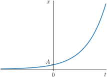
This is a pretty simple model of population growth, but it became influential in 1798, when it was presented by the cleric and economist Thomas Robert Malthus in his book An Essay on the Principle of Population. In it, Malthus warned that while human population growth was exponential, food production growth at the time was only arithmetic, and that this would lead to famine in the future. Its publication led to the first British census in 1801 and every ten years since.
But populations (of humans, or greenflies) don’t actually grow like this long-term. Hans Rosling’s 2018 book Factfulness warns us of the assumption that exponential growth never slows. So what could change?
1.2 Logistic growth
1.2.1 Self-competition
One improvement would be to demand that we include a notion of self-competition within the population. This could, for example, model competition for food or territory. Mathematically, we need a decay term which is small for small \(x\), allowing the population to grow, but dominates the growth term when \(x\) gets larger, thus restricting its growth.
The simplest example of such a model is the logistic equation. Originally introduced by Pierre François Verhulst in 1838, the equation is nonlinear and takes the form \[\begin{equation} \label{logistic} \mathchoice{\frac{\mathrm{d}x}{\mathrm{d}t}}{\mathrm{d}x/\mathrm{d}t}{\mathrm{d}x/\mathrm{d}t}{\mathrm{d}x/\mathrm{d}t} = a x\left(1-\frac{x}{K}\right), \end{equation}\] where \(a>0\) is the usual growth term and, as we shall see, \(K\) is the limiting population or carrying capacity.
Can we guess what this model looks like? See that there is an equilibrium (\(\mathchoice{\frac{\mathrm{d}x}{\mathrm{d}t}}{\mathrm{d}x/\mathrm{d}t}{\mathrm{d}x/\mathrm{d}t}{\mathrm{d}x/\mathrm{d}t} = 0\)) at \(x=K\). The term \((1-x/K)\) is negative if \(x>K\) and positive if \(x<K\) so we might expect it to either decay towards \(K\) from above and up towards \(K\) if from below.
This sort of analysis turns out to be quite common for population models because it is not always possible to solve them analytically. Thankfully this time we can, however.
1.2.2 Solutions to the logistic equation
Let’s go ahead and now work out the solutions of our model. We can separate [logistic]: \[\begin{equation} \int\frac{1}{x(1 - x/K)}\,\mathrm{d}x= at + C. \end{equation}\] We can integrate the first integral using partial fractions (remember those!), \[\begin{equation} \frac{1}{x(1 - x/K)} = \frac{1}{x} + \frac{1}{K\left(1-x/K\right)}, \end{equation}\] and so \[\begin{equation} \log(x) - \log(1-x/K) =a t+C \implies \frac{x}{1-x/K} = A\mathrm{e}^{at}, \end{equation}\] so that finally, \[\begin{equation} \label{logsol} x(t) = \frac{A \mathrm{e}^{a t}}{1+ \frac{A}{K}\mathrm{e}^{at}}. \end{equation}\]
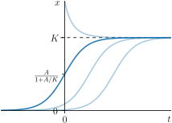
1.3 demonstrates the behaviour of this equation.
What about that limiting population we promised? See that as \(t \to \infty\), \(x(t) \to K\): a fact independent of the initial condition.
1.2.3 Equilibria of the logistic equation
Rather than worry about how the population changes, we might only really care where it will end up, given sufficient time. We have already spotted that the system tends to a state where \(\mathchoice{\frac{\mathrm{d}x}{\mathrm{d}t}}{\mathrm{d}x/\mathrm{d}t}{\mathrm{d}x/\mathrm{d}t}{\mathrm{d}x/\mathrm{d}t}=0\) at \(x=K\). Is this the only possibility?
No! If we set \(\mathchoice{\frac{\mathrm{d}x}{\mathrm{d}t}}{\mathrm{d}x/\mathrm{d}t}{\mathrm{d}x/\mathrm{d}t}{\mathrm{d}x/\mathrm{d}t}=0\) then we have \[\begin{equation} a x\left(1-\frac{x}{K}\right) = 0 \implies x=0, K. \end{equation}\] So there is also an unchanging state of \(x=0\) where there is no population. This makes sense, of course: no population means no reproduction. At this stage we make our first definition:
- Equilibrium:
-
An equilibrium of a system is one in which all time derivatives are zero. For example, consider the system \[\begin{equation} \mathchoice{\frac{\mathrm{d}^2 u}{\mathrm{d}t^2}}{\mathrm{d}^2 u/\mathrm{d}t^2}{\mathrm{d}^2 u/\mathrm{d}t^2}{\mathrm{d}^2 u/\mathrm{d}t^2} + \mathchoice{\frac{\mathrm{d}u}{\mathrm{d}t}}{\mathrm{d}u/\mathrm{d}t}{\mathrm{d}u/\mathrm{d}t}{\mathrm{d}u/\mathrm{d}t} = u^2+v^2,\qquad \mathchoice{\frac{\mathrm{d}^{3} v}{\mathrm{d}t^{3}}}{\mathrm{d}^{3} v/\mathrm{d}t^{3}}{\mathrm{d}^{3} v/\mathrm{d}t^{3}}{\mathrm{d}^{3} v/\mathrm{d}t^{3}} = uv. \end{equation}\] The equations of equilibrium are \[\begin{equation} 0 = u^2+v^2,\qquad 0 = uv \end{equation}\] (the only solution to which is \(u=v=0\)). The definition of equilibrium is often (in a dynamical systems context) referred to as a steady state or fixed point.
- Permissible/feasible equilibrium:
-
We earlier demanded that the population is \(\geq 0\). We thus define a permissible or feasible equilibrium as one which satisfies this criteria. It will be important throughout the course that our models have permissible equilibria to be valid. Another idea we will come to discuss is that a good model should not allow a positive initial population to become negative.
1.2.4 A first look at stability
We note that for any positive \(A\), [logsol] will tend to \(K\). We say that the \(x=K\) equilibrium is stable because any small change from \(x=K\) (say \(x= K-\varepsilon\)) will tend back to \(x=K\) if we go forward in time (convince yourself of this by looking again at 1.3). However, if we are at \(x=0\) and there is a sudden small change to \(x=\varepsilon\), perhaps representing a small population migration, if we go forward in time it will grow inexorably towards \(K\). Thus we say that the \(x=0\) equilibrium is unstable.
But did we need to solve the logistic equation, [logistic], to find this? Actually no! Because our differential equation is of the form \(\mathchoice{\frac{\mathrm{d}x}{\mathrm{d}t}}{\mathrm{d}x/\mathrm{d}t}{\mathrm{d}x/\mathrm{d}t}{\mathrm{d}x/\mathrm{d}t} = f(x)\), we can use a common technique where we simply plot \(\mathchoice{\frac{\mathrm{d}x}{\mathrm{d}t}}{\mathrm{d}x/\mathrm{d}t}{\mathrm{d}x/\mathrm{d}t}{\mathrm{d}x/\mathrm{d}t}\) against \(x\) (known as plotting the phase space) and make some observations.
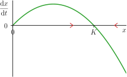
Look at 1.4. Our two equilibria are marked. If you start at a value of \(x\) where \(\mathchoice{\frac{\mathrm{d}x}{\mathrm{d}t}}{\mathrm{d}x/\mathrm{d}t}{\mathrm{d}x/\mathrm{d}t}{\mathrm{d}x/\mathrm{d}t}\) is positive, we know that \(x\) increases in time, so you move to the right over time (indicated by the forward-pointing red arrow). And where \(\mathchoice{\frac{\mathrm{d}x}{\mathrm{d}t}}{\mathrm{d}x/\mathrm{d}t}{\mathrm{d}x/\mathrm{d}t}{\mathrm{d}x/\mathrm{d}t}\) is negative, you move to the left (the backward-pointing red arrow). This instinctively tells us that you will, at \(t=\infty\), always end up at \(x=K\) unless you start exactly at \(x=0\). Do you agree?
What can you say about the stability of the equilibria of \[\begin{equation} \mathchoice{\frac{\mathrm{d}x}{\mathrm{d}t}}{\mathrm{d}x/\mathrm{d}t}{\mathrm{d}x/\mathrm{d}t}{\mathrm{d}x/\mathrm{d}t} = x(x-1)(x-2)(x-3) \, ? \end{equation}\]
We will make a more mathematically precise notion of stability/instability of equilibria in 2 and 2.2.
1.3 The Allee effect
Let’s use this graphical phase space technique on another model. In the 1930s, American ecologist Warder Clyde Allee performed some experiments on goldfish swimming in polluted water, and saw the fish had a greater survival rate when there were more fish in the tank.1 The implication was that individuals within a species require the assistance of others for more than just reproductive reasons. You can see this in animals which hunt in packs, or defend against predators as a group.
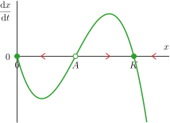
A simple variation on logistic growth which exhibits this is \[\begin{equation} \mathchoice{\frac{\mathrm{d}x}{\mathrm{d}t}}{\mathrm{d}x/\mathrm{d}t}{\mathrm{d}x/\mathrm{d}t}{\mathrm{d}x/\mathrm{d}t} = -ax\left(1-\frac{x}{K}\right)\left(1-\frac{x}{A}\right) \end{equation}\] where \(0 < A < K\). The phase space is shown in 1.5. This model, the Allee model, is a really nice example of multistability: there are three equilibria, at \(x=0, A, K\), and we can see from the graph that \(x=0,K\) are stable, whereas \(A\) is unstable. This model predicts that if the population drops below \(A\), the species will become extinct. This is also a warning of how models can be sensitive to initial conditions. Slight fluctuations around \(A\) can really change long-term behaviour dramatically.
What is the role of \(a\) here? Actually very little: it scales the phase space diagram vertically, and therefore controls the timescale of movement towards/away from equilibria, but it has no effect on the qualitative properties (e.g. stability) of them.
Many one-dimensional population models are of the form \(\mathchoice{\frac{\mathrm{d}x}{\mathrm{d}t}}{\mathrm{d}x/\mathrm{d}t}{\mathrm{d}x/\mathrm{d}t}{\mathrm{d}x/\mathrm{d}t} = xf(x)\). These have the nice property that \(x=0\) is automatically an equilibrium. This class of models are sometimes said to be Kolmogorov.
There is another property of one-dimensional models on display in 1.5: the stability of equilibria alternates as you increase \(x\). This is a consequence of the continuity of \(\mathchoice{\frac{\mathrm{d}x}{\mathrm{d}t}}{\mathrm{d}x/\mathrm{d}t}{\mathrm{d}x/\mathrm{d}t}{\mathrm{d}x/\mathrm{d}t}\), or in other words, if you cross the line \(\mathchoice{\frac{\mathrm{d}x}{\mathrm{d}t}}{\mathrm{d}x/\mathrm{d}t}{\mathrm{d}x/\mathrm{d}t}{\mathrm{d}x/\mathrm{d}t}=0\) in one direction and want to cross it again, you have to cross it in the opposite direction.
One key observation related to this: oscillations are impossible in 1D models. By this, we mean that we can’t have \(x\) increasing, then decreasing, then increasing, then decreasing, as we go forward in time. For any value of \(x\) in 1.5, the population is either growing or decaying towards an equilibrium, and its derivative must go through zero (meaning \(x\) tending to an equilibrium) for this to change.
But many populations in nature do oscillate in size. How might that come about? Time to bring in another species...
1.4 Predator–prey (Lotka–Volterra)
1.4.1 Interactions between predator and prey
Instead of introducing self-competition, a second possibility to avoid unbounded growth is to model a second population, \(y(t)\), which represents a second species. In the case of our greenfly population, we have our antagonists in ladybirds (1.6). Since ladybirds prey on greenflies, the greenfly population, \(x\), will decrease proportionally to \[\begin{equation*} \text{[the number of ladybirds, $y$]} \times \text{[the number of greenflies, $x$],} \end{equation*}\] i.e., the number of interactions of the two species which may lead to a sad little greenfly funeral. This law will therefore be in the form \[\begin{align} \mathchoice{\frac{\mathrm{d}x}{\mathrm{d}t}}{\mathrm{d}x/\mathrm{d}t}{\mathrm{d}x/\mathrm{d}t}{\mathrm{d}x/\mathrm{d}t} = a x - bxy, \end{align}\] with \(b\) the rate at which fatal interactions occur.
But we must then also model the changing ladybird population, \(y(t)\). We assume in the absence of greenflies it will decrease as its food supply has vanished: \[\begin{equation} \mathchoice{\frac{\mathrm{d}y}{\mathrm{d}t}}{\mathrm{d}y/\mathrm{d}t}{\mathrm{d}y/\mathrm{d}t}{\mathrm{d}y/\mathrm{d}t} = -cy. \end{equation}\] (Ask yourself: Why is this proportional to \(y\)?) However, it will also grow proportionally to the availability of food, i.e., interactions of the two species (at some rate \(d\)), so \[\begin{equation} \mathchoice{\frac{\mathrm{d}y}{\mathrm{d}t}}{\mathrm{d}y/\mathrm{d}t}{\mathrm{d}y/\mathrm{d}t}{\mathrm{d}y/\mathrm{d}t} = -cy + d x y. \end{equation}\] So we have a coupled set of ordinary differential equations, \[\begin{align} \label{lotvol} \mathchoice{\frac{\mathrm{d}x}{\mathrm{d}t}}{\mathrm{d}x/\mathrm{d}t}{\mathrm{d}x/\mathrm{d}t}{\mathrm{d}x/\mathrm{d}t} &= ax - bxy,\\ \mathchoice{\frac{\mathrm{d}y}{\mathrm{d}t}}{\mathrm{d}y/\mathrm{d}t}{\mathrm{d}y/\mathrm{d}t}{\mathrm{d}y/\mathrm{d}t} &= -cy + dxy, \end{align}\] where, once again, \(ax\) represents prey reproduction with unlimited food, \(-cy\) is predator natural death or emigration, and \(bxy\) and \(dxy\) are interaction terms. Note that \(b\) and \(d\) are not necessarily the same: many prey may have to be eaten for the predator population to grow by one.
This system represents both the individual growth/decay of the species (self-interactions) as well as their mutual interaction. This is the so-called Lotka–Volterra (predator–prey) system developed by the Italian mathematician Vito Volterra (1860–1940) in 1926 to explain the fluctuation of fish populations in the Adriatic Sea (more on Lotka in 4). In more modern theories there are multiple species, each with their own interactions, but we will limit ourselves to this simpler but highly instructive classical system.
An example solution is shown for the parameters \((a,b,c,d) = (\frac23,\frac43,1,1)\), \(x(0)=1\), \(y(0)=1\) in 1.7(a). See how the peaks in the greenfly population naturally increase the ladybird food supply: the ladybird population then increases. In turn this leads to the greenfly population dropping as they get eaten, and this decrease in food supply leads to the ladybird population dropping as food becomes competitive.
This periodic behaviour is made clear using a phase plot, as shown in 1.7(b). In this case we have a parametrised plot \((x(t),y(t))\): a geometric plot of the variables of the system (2D here because we have two variables). Closed curves in phase space indicate a periodic relationship between the two parameters.
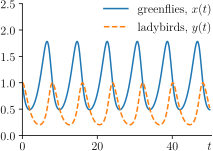
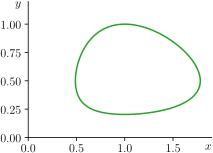
1.4.2 Parameter reduction of Lotka–Volterra
The parameters \((a,b,c,d)\) play a key role in determining the system’s behaviour. However, they are not all independent. We can work out how many we actually need by doing a nondimensionalisation.
Thus far we’ve dealt directly with the dimensional form of the differential equations, [lotvol], meaning that the parameters in the equations have relevant dimensions (or units) associated with them. While this is perhaps convenient for making direct predictions from measured values of the parameters, working with dimensional parameters can at best keep the equations looking ‘untidy’, and at worst obscure the mathematical structure of the equations or relevant approximations that can be made.
The process of nondimensionalisation is to separate our variables into a nondimensional bit and a dimensional bit: \[\begin{equation} x = \widehat{x}X, \quad y = \widehat{y}Y, \quad t = \widehat{t}T. \end{equation}\] Here, \(x\), \(X\), \(y\) and \(Y\) have units of ‘individuals’, and \(t\) and \(T\) have units of time. Variables with hats indicate they are nondimensional.
If we use this substitution, our equations are \[\begin{align} \mathchoice{\frac{\mathrm{d}\widehat x}{\mathrm{d}\widehat t}}{\mathrm{d}\widehat x/\mathrm{d}\widehat t}{\mathrm{d}\widehat x/\mathrm{d}\widehat t}{\mathrm{d}\widehat x/\mathrm{d}\widehat t}\frac{X}{T} &= a\widehat{x}X - b\widehat{x}\widehat{y}XY,\\ \mathchoice{\frac{\mathrm{d}\widehat y}{\mathrm{d}\widehat t}}{\mathrm{d}\widehat y/\mathrm{d}\widehat t}{\mathrm{d}\widehat y/\mathrm{d}\widehat t}{\mathrm{d}\widehat y/\mathrm{d}\widehat t}\frac{Y}{T} &= -c\widehat{y}Y + d\widehat{x}\widehat{y}XY. \end{align}\] Rearranging so that there are no dimensions on the left hand sides, we have \[\begin{align} \mathchoice{\frac{\mathrm{d}\widehat x}{\mathrm{d}\widehat t}}{\mathrm{d}\widehat x/\mathrm{d}\widehat t}{\mathrm{d}\widehat x/\mathrm{d}\widehat t}{\mathrm{d}\widehat x/\mathrm{d}\widehat t} &= a\widehat{x}T - b\widehat{x}\widehat{y}YT,\\ \mathchoice{\frac{\mathrm{d}\widehat y}{\mathrm{d}\widehat t}}{\mathrm{d}\widehat y/\mathrm{d}\widehat t}{\mathrm{d}\widehat y/\mathrm{d}\widehat t}{\mathrm{d}\widehat y/\mathrm{d}\widehat t} &= -c\widehat{y}T + d\widehat{x}\widehat{y}XT. \end{align}\] So now we pick \(T\), \(X\) and \(Y\) to remove as many of our parameters as possible. If we choose \[\begin{equation} \label{TYX-scaling} T = \frac{1}{a}, \quad Y = \frac{a}{b}, \quad X = \frac{c}{d}, \end{equation}\] then the system can be written as \[\begin{align} \label{reducedlotvol} \mathchoice{\frac{\mathrm{d}\widehat{x}}{\mathrm{d}\widehat{t}}}{\mathrm{d}\widehat{x}/\mathrm{d}\widehat{t}}{\mathrm{d}\widehat{x}/\mathrm{d}\widehat{t}}{\mathrm{d}\widehat{x}/\mathrm{d}\widehat{t}} &= \widehat{x} - \widehat{x}\widehat{y},\\ \mathchoice{\frac{\mathrm{d}\widehat{y}}{\mathrm{d}\widehat{t}}}{\mathrm{d}\widehat{y}/\mathrm{d}\widehat{t}}{\mathrm{d}\widehat{y}/\mathrm{d}\widehat{t}}{\mathrm{d}\widehat{y}/\mathrm{d}\widehat{t}} &= \gamma(-\widehat{y} +\widehat{x}\widehat{y}), \end{align}\] where \[\begin{equation} \gamma = c/a. \end{equation}\] We see that nondimensionalisation has ‘tidied up’ our equation – we went from four parameters to one. Why might this matter? Well, if you fix a set of parameters you get a solution. Select another set of parameters and you get another solution. So (for given initial conditions) there are as many solutions as there are parameters. If we have decided that the four parameters are positive real numbers, then there is a four-dimensional space of solutions: quite a lot if we want to map out all the system’s behaviour! In fact, we have shown that the parameters relate to each other and that there is, in fact, only a one-dimensional space of solutions, a much simpler search.
The scalings show that the solutions just relate by constant stretching factors. For example, if I choose \(\gamma=1\), I can then set \(c=2\), thus \(a=2\). In fact, the parameters \(b\) and \(d\) are even redundant and we can just choose them (but this is rare, Lotka–Volterra is a slightly odd system). The ratio \(c/d\) just stretches any \(x\) solution (stretches its range/amplitude); \(a/b\) stretches \(y\); and the scaling along \(t\) changes the period of the solutions. That is to say, for a given \(\gamma\) we have a main solution which can be simply scaled to get other solutions, without solving the system again.
You might have found that the choice of \(X\) in [TYX-scaling] was a bit of a surprise. The truth is, nondimensionalisation is more of an art than a science, and there is not normally a unique choice. Instead you will find there are different competing values to maximise when doing it. For example, typically you want your nondimensionalised parameters to have some meaning (what is the biological interpretation of \(\gamma\) here?), but this might require not actually nondimensionalising to the fewest possible parameters.
Furthermore, one important caveat to the idea that nondimensionalisation is just a scaling of the axis is that this is valid as long as no parameter goes through 0 or changes sign – if this happens, the solutions are no longer equivalent between the dimensional and nondimensional system.
Essentially – here be dragons – but you shouldn’t worry about them at this stage (they are young and tame).
There are some example questions on this topic on Additional Problem Sheet 1.
1.4.3 Solutions to Lotka–Volterra
We can solve this system using separation of variables. Dividing the two equations (and dropping hats) we obtain \[\begin{equation} \label{sepvareq} \mathchoice{\frac{\mathrm{d}y}{\mathrm{d}x}}{\mathrm{d}y/\mathrm{d}x}{\mathrm{d}y/\mathrm{d}x}{\mathrm{d}y/\mathrm{d}x}= \frac{\gamma y}{x}\left(\frac{-1+x}{1- y}\right)\implies \int \frac{1-y}{y} \,\mathrm{d}y= -\gamma \int \frac{1-x}{x} \,\mathrm{d}x. \end{equation}\] Integrating both sides of [sepvareq] we obtain \[\begin{equation} \label{dynsol} \log y-y =- \gamma(\log x -x) + C, \end{equation}\] where the constant \(C\) can be set by some initial condition, \((x(0),y(0))\). Unfortunately it is not possible to write this relationship in explicit form. This gives us the phase curves determined by the value of the constant \(C\). Parametrising this curve then gives the solutions \(x(t)\) and \(y(t)\), i.e. we could choose some behaviour for \(x(t)\) and [dynsol] will then determine the behaviour of \(y\). We will find that this kind of solution is common to such systems.
In Additional Problem Sheet 1 we will use this relationship to show that the phase curves must be closed curves.
The fact that we can’t write [dynsol] explicitly makes the solution difficult to plot…or does it? A tutorial for how to plot this numerically in Python, as you saw in 1.7, can be found in the SciPy Cookbook.
1.4.4 Equilibria of Lotka–Volterra
Looking at [reducedlotvol] we can see there are two possible equilibria where \(\mathchoice{\frac{\mathrm{d}x}{\mathrm{d}t}}{\mathrm{d}x/\mathrm{d}t}{\mathrm{d}x/\mathrm{d}t}{\mathrm{d}x/\mathrm{d}t} = \mathchoice{\frac{\mathrm{d}y}{\mathrm{d}t}}{\mathrm{d}y/\mathrm{d}t}{\mathrm{d}y/\mathrm{d}t}{\mathrm{d}y/\mathrm{d}t}=0\) \(\forall t\): \[\begin{equation} \label{equlibria} (x,y) = (0,0) \quad \mbox{and} \quad (x,y) = (1,1). \end{equation}\] (Dynamical systems fans would call these fixed points or steady state solutions). The \((0,0)\) solution corresponds to both populations being extinct! The second corresponds to the nonzero population densities at which the population sizes will remain fixed.
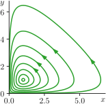
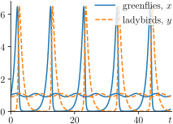
In 1.8(a), we see the varying behaviour of the closed phase curves of the system. All curves encircle the equilibrium at \((1,1)\) and as the initial conditions get closer to the equilibrium value, the radius of the curve decreases. In 1.8(b), we see the dramatic variety of morphology the parametric curves can exhibit. When the pair \((x(0),y(0))\) are initially close to the equilibrium, the curves have low-amplitude sinusoidal shape, while if \(y(0)\) is initially small, the curves have extremely sharp gradients and dramatic rates of change at the maxima.
1.4.5 Stability of Lotka–Volterra?
We have our dynamic solutions, [dynsol], and the fixed point equilibria, [equlibria]. A number of questions beg to be asked at this point:
Can one or both of the species die out if they are both nonzero at some time \(t\)?
Can an oscillating pair of populations relax to nonzero fixed values, i.e., do the populations ever settle?
An immediate observation in regards to (i) is that [dynsol] only allows \(x=0\) when \(y=0\) and vice versa, so they would have to become extinct simultaneously. The existence of periodic solutions as shown in 1.8 seems to suggest neither (i) or (ii) can occur, because the system repeats itself cyclically. A solution which decays into equilibrium would have to have a phase space diagram which spiralled inwards. In fact, we have a precise means of determining the answer to such questions which we will discuss in 2.
Summary
Exponential growth is the most basic model of a population’s replication, but it is flawed as the population grows without bound.
The logistic model is a better model which includes intra- (within) species competition. It leads to a population which settles (asymptotically) to a fixed value.
We have derived a simple model for a predator–prey relationship between two species based on simple interaction and growth models. This represents inter- (between) species competition. It leads to periodic variations in the two populations.
We have covered various standard tools for analysing such systems: dynamic solutions, equilibrium solutions and phase curves.
In addition, we have raised the notion of stability and reachability of the equilibrium solutions. The phase curve behaviour we have observed appears to forbid reaching the equilibria from out-of-equilibrium states.
You can find the Lotka–Volterra system in Murray, vol. I, chap. 3.1.
Shlomo Sternberg at Harvard presents a nice resource on the system, now only available on the internet archive.
2 Linear stability analysis
In 1, we asked if the Lotka–Volterra solutions could relax so that the population values become constant, given that they varied at some initial time. In order to answer this question, we look at the behaviour of the system in the neighbourhood of the equilibria. This is called a linear stability analysis. To give a clear picture of this technique, which we shall use continually in this course, we start by taking a side step to look at a simpler system from mechanics.
2.1 The rigid pendulum equation
2.1.1 Equations of motion
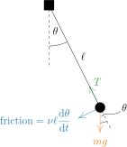
Let’s consider a rigid pendulum: a bead of mass \(m\) attached to a rigid rod of length \(\ell\), depicted in 2.1(a). Three forces act on the bead: its weight, \(mg\); tension in the rod, \(T\); and friction, which opposes the motion of the bead.
The distance travelled by the bead is the arclength, \(s=\ell \theta\). The velocity and acceleration are therefore \[\begin{equation} \mathchoice{\frac{\mathrm{d}s}{\mathrm{d}t}}{\mathrm{d}s/\mathrm{d}t}{\mathrm{d}s/\mathrm{d}t}{\mathrm{d}s/\mathrm{d}t} = \ell\mathchoice{\frac{\mathrm{d}\theta}{\mathrm{d}t}}{\mathrm{d}\theta/\mathrm{d}t}{\mathrm{d}\theta/\mathrm{d}t}{\mathrm{d}\theta/\mathrm{d}t}, \quad \mathchoice{\frac{\mathrm{d}^2 s}{\mathrm{d}t^2}}{\mathrm{d}^2 s/\mathrm{d}t^2}{\mathrm{d}^2 s/\mathrm{d}t^2}{\mathrm{d}^2 s/\mathrm{d}t^2} = \ell\mathchoice{\frac{\mathrm{d}^2 \theta}{\mathrm{d}t^2}}{\mathrm{d}^2 \theta/\mathrm{d}t^2}{\mathrm{d}^2 \theta/\mathrm{d}t^2}{\mathrm{d}^2 \theta/\mathrm{d}t^2}. \end{equation}\] We say friction is proportional to velocity, \(\nu\ell \, \mathchoice{\frac{\mathrm{d}\theta}{\mathrm{d}t}}{\mathrm{d}\theta/\mathrm{d}t}{\mathrm{d}\theta/\mathrm{d}t}{\mathrm{d}\theta/\mathrm{d}t}\), and points in the direction opposing motion.
If we resolve parallel and perpendicular to the rod, given the rod makes an angle \(\theta\) to the vertical, then: \[\begin{align} \text{[parallel]} & & 0 &= T - mg\cos\theta, \\ \text{[perpendicular]} & & m \ell\mathchoice{\frac{\mathrm{d}^2 \theta}{\mathrm{d}t^2}}{\mathrm{d}^2 \theta/\mathrm{d}t^2}{\mathrm{d}^2 \theta/\mathrm{d}t^2}{\mathrm{d}^2 \theta/\mathrm{d}t^2} &= - \nu\ell \mathchoice{\frac{\mathrm{d}\theta}{\mathrm{d}t}}{\mathrm{d}\theta/\mathrm{d}t}{\mathrm{d}\theta/\mathrm{d}t}{\mathrm{d}\theta/\mathrm{d}t} - mg\sin\theta, \end{align}\] the second equation of which can be rearranged to give \[\begin{equation} \label{peneq} \mathchoice{\frac{\mathrm{d}^2 \theta}{\mathrm{d}t^2}}{\mathrm{d}^2 \theta/\mathrm{d}t^2}{\mathrm{d}^2 \theta/\mathrm{d}t^2}{\mathrm{d}^2 \theta/\mathrm{d}t^2} + \frac{\nu}{m} \mathchoice{\frac{\mathrm{d}\theta}{\mathrm{d}t}}{\mathrm{d}\theta/\mathrm{d}t}{\mathrm{d}\theta/\mathrm{d}t}{\mathrm{d}\theta/\mathrm{d}t}+ \frac{g}{\ell}\sin\theta = 0. \end{equation}\] This is a nonlinear ODE; our physical intuition tells us that the pendulum will swing with a decreasing amplitude until it relaxes to \(\theta=0\).
2.1.2 Solutions to the pendulum equation
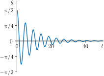
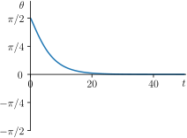
The damped pendulum system is not an integrable system, i.e., there are no general closed-form solutions. This is generally the case for mechanical systems with friction. On the other hand, numerical solutions are simple to obtain.
An example is shown in 2.2(a): the solution is indeed oscillatory with decreasing amplitude. In (b), we see a pendulum with a very high coefficient of friction (a pendulum in fluid, say) where the damping is so strong that the angle never becomes negative: its motion is killed off on the first swing.
See if you can generate these solutions for yourself by following the instructions in the SciPy documentation.
2.1.3 Equilibria of the pendulum equation
Accounting for periodicity, there are two equilibria to [peneq]: \[\begin{equation} \frac{g}{\ell}\sin\theta = 0 \end{equation}\] gives \(\theta(t) = 0\) and \(\theta(t) = \pi\) for all \(t\). The first \(\theta=0\) solution corresponds to a pendulum starting at the bottom of its cycle and not moving.
The second solution is far more interesting. This is when the pendulum rod is vertically upwards as in 2.1(b). The forces in the system are balanced as the rod tension balances gravity and the rotating moments are equal in either direction. But have you tried this? No matter how hard you try, it will eventually fail and the pendulum will start to rotate back to its \(\theta=0\) equilibrium. Why?
Any small variation in the pendulum – a gentle breeze or vibration in the rod – no matter how small, always grows over time. In practice, no system is perfect and such variations always exist. Mathematically we represent small variations by a linear stability analysis.
2.1.4 Order notation, \(\mathcal{O}\)
In asymptotic analysis, we say a function \(g(t,\varepsilon)\) is \(\mathcal{O}(f(t,\varepsilon))\) if \[\begin{equation} \lim_{\varepsilon\to 0} \frac{g(t,\varepsilon)}{f(t,\varepsilon)} = C \end{equation}\] with \(C\) bounded.
So, for example, let’s have \(g(t,\varepsilon) = C \varepsilon\) and \(f(t,\varepsilon) = \varepsilon\). Well, \[\begin{equation} \lim_{\varepsilon\to 0} \frac{g(t,\varepsilon)}{f(t,\varepsilon)} = C, \end{equation}\] so \(C \varepsilon\) is \(\mathcal{O}(\varepsilon)\).
But if \(g(t,\varepsilon) = C \varepsilon^2\) and \(f(t,\varepsilon) = \varepsilon\), \[\begin{equation} \lim_{\varepsilon\to 0} \frac{g(t,\varepsilon)}{f(t,\varepsilon)} = 0. \end{equation}\] So \(C \varepsilon^2\) is also \(\mathcal{O}(\varepsilon)\).
On the other hand, if \(g(t,\varepsilon) = C\) and \(f(t,\varepsilon) = \varepsilon\), then \[\begin{equation} \lim_{\varepsilon\to 0} \frac{g(t,\varepsilon)}{f(t,\varepsilon)} = \infty. \end{equation}\] So \(C\) is in some way much bigger than \(\varepsilon\) when \(\varepsilon\to 0\). We would say \(C\) is \(\mathcal{O}(1)\) but not \(\mathcal{O}(\varepsilon)\).
For non-polynomial functions the way in is to use Taylor expansion: what if \(g(t,\varepsilon) = \sin\varepsilon\) and \(f(t,\varepsilon) = \varepsilon\)? \[\begin{equation} \lim_{\varepsilon\to 0} \frac{g(t,\varepsilon)}{f(t,\varepsilon)} = \lim_{\varepsilon\to 0}\frac{\sin\varepsilon}{\varepsilon} = \lim_{\varepsilon\to 0}\frac{\varepsilon-\varepsilon^3/3!+\cdots}{\varepsilon} = \lim_{\varepsilon\to 0}\left( 1 - \frac{\varepsilon^2}{3!} + \cdots \right) = 1. \end{equation}\] So \(\sin\varepsilon\) is also \(\mathcal{O}(\varepsilon)\).
Long story short: if something is \(\mathcal{O}(\varepsilon^n)\), it is the same size as, or smaller than, \(\varepsilon^n\) when \(\varepsilon\to 0\).
‘Big O’ notation is part of a class of notations called Landau notation. In asymptotic analysis, we look at the limit as \(\varepsilon\to 0\), but in many applications, especially in computer science, we look at the limit going to infinity. For example, how many operations does it take to multiply two \(N\times N\) matrices together by hand? As \(N \to \infty\), it’s \(\mathcal{O}(N^2)\). The correct limit is normally clear from context.
2.1.5 Four steps of a linear stability analysis
The basic steps of a linear stability analysis are as follows
Find the system’s equilibria, \(\theta_0\) (we will commonly use the subscript \(0\) to indicate the equilibrium solution).
Assume a value which is changed from this equilibrium value by a very small amount, \(\theta = \theta_0 +\varepsilon\theta_1\), with \(\varepsilon\ll 1\). This is supposed to mimic the small vibration in the system. Substitute this into the equation and ignore terms of order \(\varepsilon^2\) and higher. We are left with the behaviour of the system where only small vibrations matter.
Solve this system to find out if our small vibration, \(\theta_1\), grows (like it would for \(\theta_0=\pi\) in the pendulum) or decays (as it would for \(\theta_0=0\)).
Conclude that the equilibrium is stable if we have decay (small vibrations would disappear) and unstable if they grow.
Let’s apply this to our pendulum.
2.1.6 Linear stability analysis of the damped pendulum
Find equilibria
We already have these: \(\theta_0 = 0\) and \(\theta_0 = \pi\).
Linearise the system
We assume the equilibrium solution \(\theta_0\) is changed to \[\begin{equation} \label{expsol} \theta(t) = \theta_0 + \varepsilon\theta_1(t), \end{equation}\] with \(\theta_1\) the changing behaviour and \(\varepsilon\ll 1,\) such that this is a vanishingly small change.
Ignoring all \(\mathcal{O}(\varepsilon^2)\) terms we substitute [expsol] into [peneq], \[\begin{equation} \label{penexp} \mathchoice{\frac{\mathrm{d}^2 }{\mathrm{d}t^2}}{\mathrm{d}^2 /\mathrm{d}t^2}{\mathrm{d}^2 /\mathrm{d}t^2}{\mathrm{d}^2 /\mathrm{d}t^2}[\theta_0 + \varepsilon\theta_1(t)] + \frac{\nu}{m} \mathchoice{\frac{\mathrm{d}}{\mathrm{d}t}}{\mathrm{d}/\mathrm{d}t}{\mathrm{d}/\mathrm{d}t}{\mathrm{d}/\mathrm{d}t}[\theta_0 + \varepsilon\theta_1(t)]+ \frac{g}{\ell}\sin[\theta_0 + \varepsilon\theta_1(t)] = 0. \end{equation}\]
Let’s go term by term. Remembering that \(\theta_0\) is a constant, \[\begin{align} \mathchoice{\frac{\mathrm{d}^2 }{\mathrm{d}t^2}}{\mathrm{d}^2 /\mathrm{d}t^2}{\mathrm{d}^2 /\mathrm{d}t^2}{\mathrm{d}^2 /\mathrm{d}t^2}[\theta_0 + \varepsilon\theta_1(t)] &= \varepsilon\mathchoice{\frac{\mathrm{d}^2 \theta_1}{\mathrm{d}t^2}}{\mathrm{d}^2 \theta_1/\mathrm{d}t^2}{\mathrm{d}^2 \theta_1/\mathrm{d}t^2}{\mathrm{d}^2 \theta_1/\mathrm{d}t^2} \\ \frac{\nu}{m} \mathchoice{\frac{\mathrm{d}}{\mathrm{d}t}}{\mathrm{d}/\mathrm{d}t}{\mathrm{d}/\mathrm{d}t}{\mathrm{d}/\mathrm{d}t}[\theta_0 + \varepsilon\theta_1(t)] &= \varepsilon\frac{\nu}{m} \mathchoice{\frac{\mathrm{d}\theta_1}{\mathrm{d}t}}{\mathrm{d}\theta_1/\mathrm{d}t}{\mathrm{d}\theta_1/\mathrm{d}t}{\mathrm{d}\theta_1/\mathrm{d}t} \\ \frac{g}{\ell}\sin[\theta_0 + \varepsilon\theta_1(t)] &= \; ? \end{align}\] For the \(\sin\) term we need another strategy…Taylor series!
Recall that, so long as a real function \(f(x)\) is sufficiently differentiable, we can expand it in a Taylor series, \[\begin{equation} f({\color{C0}x}+{\color{C1}\delta}) = f({\color{C0}x}) + {\color{C1}\delta} f'({\color{C0}x}) + \frac{{\color{C1}\delta}^2}{2}f''({\color{C0}x}) + \cdots. \end{equation}\] We can think about this as a succession of approximations to the value of \(f\) at \(x+\delta\). In our case then, \[\begin{equation} \sin[{\color{C0}\theta_0} + {\color{C1}\varepsilon\theta_1(t)}] = \sin({\color{C0}\theta_0}) + {\color{C1}\varepsilon\theta_1(t)} \cos({\color{C0}\theta_0}) + \mathcal{O}(\varepsilon^2). \end{equation}\] Since \(\theta_0=0\) and \(\pi\), we have \(\sin(\theta_0) = 0\) and \(\cos\theta_0 = 1\) and \(-1\) respectively.
So, putting this all together and dividing through by \(\varepsilon\), [penexp] becomes \[\begin{equation} \label{peneqlin} \mathchoice{\frac{\mathrm{d}^2 \theta_1}{\mathrm{d}t^2}}{\mathrm{d}^2 \theta_1/\mathrm{d}t^2}{\mathrm{d}^2 \theta_1/\mathrm{d}t^2}{\mathrm{d}^2 \theta_1/\mathrm{d}t^2} + \frac{\nu}{m} \mathchoice{\frac{\mathrm{d}\theta_1}{\mathrm{d}t}}{\mathrm{d}\theta_1/\mathrm{d}t}{\mathrm{d}\theta_1/\mathrm{d}t}{\mathrm{d}\theta_1/\mathrm{d}t} \pm \frac{g}{\ell}\theta_1(t) =0. \end{equation}\]
The big idea is that if \(\varepsilon\ll 1\) then [peneqlin] will basically give us the solution to the full system (if \(\theta\) is very close to \(\theta_0\)).
Solve the linearised system
The linear equation, [peneqlin], is a constant-coefficient, linear, ordinary differential equation. The auxiliary equation (in \(\lambda\)) is \[\begin{equation} \lambda^2 + \frac{\nu}{m} \lambda \pm \frac{g}{\ell} = 0, \end{equation}\] and the general solutions are therefore \[\begin{align} \label{linpensol}\theta_1(t) = A \mathrm{e}^{\lambda_1 t} + B\mathrm{e}^{\lambda_2 t}, \end{align}\] where \[\begin{align} \lambda_1 &= \frac{1}{2}\left[-\frac{\nu}{m} + \sqrt{\left(\frac{\nu}{m}\right)^2 \mp 4\frac{g}{\ell}} \right], \\ \lambda_2 &= \frac{1}{2}\left[-\frac{\nu}{m} - \sqrt{\left(\frac{\nu}{m}\right)^2 \mp 4\frac{g}{\ell}} \right], \end{align}\] and where \(A\) and \(B\) are set by initial conditions. For stability analysis, we need to assume that \(A\) and \(B\) could be any bounded values: that is to say, the equilibrium should be stable/unstable under any type of small change to the system.
Assess stability
The question of stability is what happens to \(\theta(t)\) as \(t \to \infty\). Looking at our solution, [linpensol], this clearly depends on \(\lambda_1\) and \(\lambda_2\).
Stability of \(\theta_0=0\):
In this case, \[\begin{equation} \lambda_1 = \frac{1}{2}\left[-\frac{\nu}{m} + \sqrt{\left(\frac{\nu}{m}\right)^2 - 4\frac{g}{\ell}} \right], \quad \lambda_2 = \frac{1}{2}\left[-\frac{\nu}{m} - \sqrt{\left(\frac{\nu}{m}\right)^2 - 4\frac{g}{\ell}} \right]. \end{equation}\] If \((\nu/m)^2 - 4g/\ell\) (the bit under the square root) is negative, then the square root is imaginary and \(\operatorname{Re}(\lambda_1)\) and \(\operatorname{Re}(\lambda_2)\) are both negative. If this same term is positive, then note that \[\begin{equation} \sqrt{\left(\frac{\nu}{m}\right)^2 - 4 \frac{g}{\ell}} < \frac{\nu}{m}, \end{equation}\] and so \(\operatorname{Re}(\lambda_1)\) and \(\operatorname{Re}(\lambda_2)\) are still both negative. Thus we see that the solutions, [linpensol], must always decay exponentially. The physical interpretation of this is what we expected: around the bottom of the pendulum cycle (\(\theta=0\)) all small oscillations will decay such that \(\theta(t) \to \theta_0=0\).
Stability of \(\theta_0 =\pi\):
For this case, \[\begin{equation} \lambda_1 = \frac{1}{2}\left[-\frac{\nu}{m} + \sqrt{\left(\frac{\nu}{m}\right)^2 + 4\frac{g}{\ell}} \right], \quad \lambda_2 = \frac{1}{2}\left[-\frac{\nu}{m} - \sqrt{\left(\frac{\nu}{m}\right)^2 + 4\frac{g}{\ell}} \right]. \end{equation}\] The bit under the square root is positive, and so \(\lambda_1\) and \(\lambda_2\) are both guaranteed to be real. Additionally, \[\begin{equation} \sqrt{\left(\frac{\nu}{m}\right)^2 + 4 \frac{g}{\ell}}>\frac{\nu}{m}, \end{equation}\] so \(\lambda_1\) is positive and \(\lambda_2\) is negative. Thus the term \(\exp(\lambda_1 t)\) will grow exponentially. Again this matches our physical intuition and small oscillations about \(\theta=0\) will grow such that the pendulum moves away from the top of its arc.
2.1.7 Linear stability analysis of the frictionless pendulum
If there is no friction, \(\nu =0\), steps – will be the same, except that our linearised solution is \[\begin{equation} \theta_1(t) = A\mathrm{e}^{\lambda_1 t} + B \mathrm{e}^{\lambda_2 t}, \end{equation}\] where \[\begin{equation} \lambda_{1} = \sqrt{\mp \frac{g}{\ell}}, \quad \lambda_{2} = - \sqrt{\mp \frac{g}{\ell}}. \end{equation}\]
Assess stability
Stability of \(\theta_0=0\):
\(\lambda\) is pure imaginary, \(\lambda_{1,2} = \pm \mathrm{i}\sqrt{g/\ell}\), and the solutions are just sinusoidal oscillations which do not decay in time, \[\begin{equation} \theta_1(t) = C \sin\left(\sqrt{\frac{g}{\ell}} t\right)+ D \cos\left(\sqrt{\frac{g}{\ell}} t \right). \end{equation}\]
This case is interesting because it tells us that any small oscillation will be maintained: this is neither stable nor unstable! In fact, in the case \(\nu=0\), [peneq] is integrable: that is to say, we can solve it analytically. Its solutions can be written in terms of elliptic integrals and the solutions are oscillatory with constant amplitude. The physical interpretation is that if there is no friction there is no reason for the swings of the pendulum to decay.
Stability of \(\theta_0=\pi\):
\(\lambda_1\) and \(\lambda_2\) are real and the first exponential will grow.
The growth instability of this solution and the periodic nature of the system’s solutions (it is possible to prove the periodicity) highlights a second issue. The linearised solutions – which exhibit exponential growth – often tell us little about the full nonlinear behaviour of the system – which is periodic. It just so happens in this case that the divergence between the full and linear solutions is rapid. We will not pursue this issue much further here as it is not important in what follows.
2.1.8 Summary
To test the feasibility (stability) of equilibrium solutions we linearise the equation about the equilibrium state.
We analyse the solutions for exponential decay or growth. If there is only decay, then the solution is stable in that it is resistant to small changes. If there is any growth it is unstable as small changes destroy the solution.
Some special systems will have neither growth nor decay. In this case we know, from the nonlinear behaviour of the frictionless \(\theta_0=0\) pendulum equation, that this is because neighbouring solutions are periodic.
We can make these conclusions far more general…
2.2 General single autonomous ODEs
The pendulum equation and the Lotka–Volterra equations are both examples of ODEs which depend on a variable and its derivatives with respect to time, but not explicitly on time itself.
Many population models have this property, which is called autonomy:
- Autonomous:
-
An autonomous ordinary differential equation is one which has no explicit dependence on time, \(t\).
For example, this is autonomous: \[\begin{equation} \label{example} x^3\mathchoice{\frac{\mathrm{d}^3 x}{\mathrm{d}t^3}}{\mathrm{d}^3 x/\mathrm{d}t^3}{\mathrm{d}^3 x/\mathrm{d}t^3}{\mathrm{d}^3 x/\mathrm{d}t^3} + \sqrt{1-x^2}\mathchoice{\frac{\mathrm{d}x}{\mathrm{d}t}}{\mathrm{d}x/\mathrm{d}t}{\mathrm{d}x/\mathrm{d}t}{\mathrm{d}x/\mathrm{d}t} + x^3 = 0, \end{equation}\] but this is not: \[\begin{equation} x^3\mathchoice{\frac{\mathrm{d}^3 x}{\mathrm{d}t^3}}{\mathrm{d}^3 x/\mathrm{d}t^3}{\mathrm{d}^3 x/\mathrm{d}t^3}{\mathrm{d}^3 x/\mathrm{d}t^3} + t \mathchoice{\frac{\mathrm{d}x}{\mathrm{d}t}}{\mathrm{d}x/\mathrm{d}t}{\mathrm{d}x/\mathrm{d}t}{\mathrm{d}x/\mathrm{d}t} + x^3 = 0, \end{equation}\] because of the explicit \(t\) dependence.
We now extend our gaze to linear stability analysis of this general class of ODEs, first when our system of interest is governed by a single ODE (as in the pendulum) rather than by a coupled system (as with Lotka–Volterra).
Find equilibria
An autonomous ODE is a function in the form \[\begin{equation} F\left(x(t),\mathchoice{\frac{\mathrm{d}x}{\mathrm{d}t}}{\mathrm{d}x/\mathrm{d}t}{\mathrm{d}x/\mathrm{d}t}{\mathrm{d}x/\mathrm{d}t},\dots,\mathchoice{\frac{\mathrm{d}^{n} x}{\mathrm{d}t^{n}}}{\mathrm{d}^{n} x/\mathrm{d}t^{n}}{\mathrm{d}^{n} x/\mathrm{d}t^{n}}{\mathrm{d}^{n} x/\mathrm{d}t^{n}}\right) = 0. \end{equation}\] At equilibrium, \(x = x_0\), all \(t\) derivatives must vanish, so we are left with some function of \(x_0\) alone, \[\begin{equation} F(x_0,0,\dots,0) = 0. \end{equation}\] In our example equation, [example], this equation is \[\begin{equation} x^3=0. \end{equation}\]
Linearise the system
Given an equilibrium solution, \[\begin{equation} F({\color{C0}x_0},{\color{C0}0},\dots,{\color{C0}0}) = 0, \end{equation}\] assume a solution in the form \(x = x_0 + \varepsilon x_1\), \[\begin{equation} \label{F-to-taylor-expand} F\left({\color{C0}x_0} + {\color{C1}\varepsilon x_1(t)}, \; {\color{C0}0}+{\color{C1}\varepsilon\mathchoice{\frac{\mathrm{d}x_1}{\mathrm{d}t}}{\mathrm{d}x_1/\mathrm{d}t}{\mathrm{d}x_1/\mathrm{d}t}{\mathrm{d}x_1/\mathrm{d}t}}, \; \dots, \; {\color{C0}0}+ {\color{C1}\varepsilon\mathchoice{\frac{\mathrm{d}^{n} x_1}{\mathrm{d}t^{n}}}{\mathrm{d}^{n} x_1/\mathrm{d}t^{n}}{\mathrm{d}^{n} x_1/\mathrm{d}t^{n}}{\mathrm{d}^{n} x_1/\mathrm{d}t^{n}}}\right) = 0. \end{equation}\]
Now recall that a two-dimensional Taylor series looks like \[\begin{equation} f({\color{C0}x}+{\color{C1}\delta},{\color{C0}y}+{\color{C1}\zeta}) = f({\color{C0}x},{\color{C0}y}) + {\color{C1}\delta} \mathchoice{\frac{\partial f}{\partial x}}{\partial f/\partial x}{\partial f/\partial x}{\partial f/\partial x}({\color{C0}x},{\color{C0}y}) + {\color{C1}\zeta} \mathchoice{\frac{\partial f}{\partial y}}{\partial f/\partial y}{\partial f/\partial y}{\partial f/\partial y}({\color{C0}x},{\color{C0}y}) + \cdots, \end{equation}\] and with that in mind, let’s do an \(n\)-dimensional Taylor expansion of [F-to-taylor-expand] in \(\varepsilon\) about \(\varepsilon=0\).
This expansion is algebraically awkward, but denoting \(\mathchoice{\frac{\mathrm{d}^{n} x}{\mathrm{d}t^{n}}}{\mathrm{d}^{n} x/\mathrm{d}t^{n}}{\mathrm{d}^{n} x/\mathrm{d}t^{n}}{\mathrm{d}^{n} x/\mathrm{d}t^{n}} = x^{(n)}\), we get \[\begin{equation} F({\color{C0}x_0},{\color{C0}0},\dots,{\color{C0}0}) +{\color{C1}\varepsilon}\left(\mathchoice{\frac{\partial F}{\partial x}}{\partial F/\partial x}{\partial F/\partial x}{\partial F/\partial x}{\color{C1}x_1} + \mathchoice{\frac{\partial F}{\partial x^{(1)}}}{\partial F/\partial x^{(1)}}{\partial F/\partial x^{(1)}}{\partial F/\partial x^{(1)}}{\color{C1}x_1^{(1)}} + \dots + \mathchoice{\frac{\partial F}{\partial x^{(n)}}}{\partial F/\partial x^{(n)}}{\partial F/\partial x^{(n)}}{\partial F/\partial x^{(n)}}{\color{C1}x_1^{(n)}}\right) = 0 \end{equation}\] to \(\mathcal{O}(\varepsilon^2)\).
Remember for a Taylor expansion we evaluate the partial derivatives at \(\varepsilon=0\), i.e., \(x=x_0\). Thus the partial derivatives, \(\mathchoice{\frac{\partial F}{\partial x^{(n)}}}{\partial F/\partial x^{(n)}}{\partial F/\partial x^{(n)}}{\partial F/\partial x^{(n)}}\), are constant values. Also we know \(F(x_0,0,\dots 0)=0\) by our assumption of expanding around equilibrium. Thus, if we ignore terms of \(\mathcal{O}(\varepsilon^2)\), we have \[\begin{equation} a_0x_1+ a_1\mathchoice{\frac{\mathrm{d}x_1}{\mathrm{d}t}}{\mathrm{d}x_1/\mathrm{d}t}{\mathrm{d}x_1/\mathrm{d}t}{\mathrm{d}x_1/\mathrm{d}t} + \dots a_n \mathchoice{\frac{\mathrm{d}^{n} x_1}{\mathrm{d}t^{n}}}{\mathrm{d}^{n} x_1/\mathrm{d}t^{n}}{\mathrm{d}^{n} x_1/\mathrm{d}t^{n}}{\mathrm{d}^{n} x_1/\mathrm{d}t^{n}} =0,\qquad a_n = \left.\mathchoice{\frac{\partial F}{\partial x^{(n)}}}{\partial F/\partial x^{(n)}}{\partial F/\partial x^{(n)}}{\partial F/\partial x^{(n)}}\right\vert_{x=x_0}, \end{equation}\] which is a constant coefficient ODE.
Solve the linearised system
As we saw with the pendulum, such equations have solutions in the form \(x_1 = A\mathrm{e}^{\lambda t}\). Substituting this in to our linearised equation will give a polynomial in the form \[\begin{equation} a_0 + a_1\lambda +\dots a_n\lambda^n, \end{equation}\] and hence the full solution of the correction \(x_1\) takes the general form \[\begin{equation} \label{lincorr} x_1 = c_1\mathrm{e}^{\lambda_1 t}+\dots + c_n\mathrm{e}^{\lambda_n t}. \end{equation}\] Of course, it is entirely possible that some of the \(\lambda\) are complex, \(\lambda_i = \mu_i + \mathrm{i}\nu_i\). If so, recall that the solution is of the form \[\begin{equation} \mathrm{e}^{\mu_i t} [ A\cos(\nu_i t) + B \sin(\nu_i t)]. \end{equation}\]
For the sake of stability analysis we know that the imaginary part of \(\lambda\) does not control growth – only the real part does.
Assess stability
We now give more rigorous definitions of three classes for our equilibria: they will be asymptotically stable, unstable, or the linearised system will be degenerate.
- Asymptotically stable:
-
Consider an equilibrium solution, \(x_0\), to an autonomous ODE, \[\begin{equation} \label{nonlin} F\left(x(t),\mathchoice{\frac{\mathrm{d}x}{\mathrm{d}t}}{\mathrm{d}x/\mathrm{d}t}{\mathrm{d}x/\mathrm{d}t}{\mathrm{d}x/\mathrm{d}t},\dots,\mathchoice{\frac{\mathrm{d}^{n} x}{\mathrm{d}t^{n}}}{\mathrm{d}^{n} x/\mathrm{d}t^{n}}{\mathrm{d}^{n} x/\mathrm{d}t^{n}}{\mathrm{d}^{n} x/\mathrm{d}t^{n}}\right) = 0. \end{equation}\] The solution is Lyapunov stable if for every \(\varepsilon> 0\), there exists a \(\delta > 0\) such that if \(\vert x(0)-x_0\vert<\delta\), then for all \(t \geq 0\) we have \(\vert x(t)-x_0\vert<\varepsilon\).
Two ways to think about this definition of Lyapunov stability:
You can draw an \(\varepsilon\)-sized fence around \(x_0\), and then find a smaller enclosed area of size \(\delta\) where if you start in the smaller area, you never leave the larger area.
When you start close to \(x_0\) (within a \(\delta\)-distance), you remain close to \(x_0\) (within an \(\varepsilon\)-distance). And this must be true for any \(\varepsilon\).
The solution is asymptotically stable if it is Lyaponov stable and there exists \(\varepsilon\) such that if \(\vert x(0)-x_0\vert<\varepsilon\), then \(\lim_{t\to \infty}\vert x(t)-x_0\vert=0\). In other words, it is asymptotically stable if in addition to being Lyapunov stable, when you start arbitrarily close to \(x_0\), you end up at \(x_0\) at \(t=\infty\).
It is possible for an equilibrium to be Lyapunov stable and not asymptotically stable: periodic solutions fulfil this criterion, for example, and we will talk about periodic solutions in our discussion of the degenerate case below.
It is also possible to satisfy the second condition for asymptotic stability without satisfying the first condition (i.e. Lyapunov stability). For example, consider a system in two functions \(x\) and \(y\) which can written in polar coordinates as \[\begin{align} \label{not-lyap-stab-theta-full} \mathchoice{\frac{\mathrm{d}r}{\mathrm{d}t}}{\mathrm{d}r/\mathrm{d}t}{\mathrm{d}r/\mathrm{d}t}{\mathrm{d}r/\mathrm{d}t} &= r(1-r), \\ \mathchoice{\frac{\mathrm{d}\theta}{\mathrm{d}t}}{\mathrm{d}\theta/\mathrm{d}t}{\mathrm{d}\theta/\mathrm{d}t}{\mathrm{d}\theta/\mathrm{d}t} &= \sin^2\left(\frac{\theta}{2}\right). \label{not-lyap-stab-theta} \end{align}\] You can see fairly easily that the equilibria are at \((r,\theta) = (0,0)\) and \((1,0)\), which conveniently correspond to \((x,y) = (0,0)\) and \((1,0)\). It turns out that although \((1,0)\) satisfies the second condition (if you start arbitrarily close to it, you end up at it), it is not Lyapunov stable because the route the solution takes in getting from the arbitrarily-close starting point to the final equilibrium is very indirect.
The solutions are plotted in 2.3: if you look back at [not-lyap-stab-theta], you can see that this indirectness comes from the fact that \(\mathchoice{\frac{\mathrm{d}\theta}{\mathrm{d}t}}{\mathrm{d}\theta/\mathrm{d}t}{\mathrm{d}\theta/\mathrm{d}t}{\mathrm{d}\theta/\mathrm{d}t} \geq 0\).
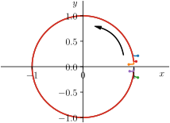
The key observation is this: if for our linear correction \(x_1\), [lincorr], all \(\operatorname{Re}(\lambda_i)<0\), then \(x_1 \to 0\) and hence any small perturbation \(x=x_0 +\varepsilon x_1 \to x_0\). That is to say, the equilibrium is asymptotically stable.
- Unstable:
-
If any of the \(\operatorname{Re}(\lambda_i)\) of [lincorr] are \(>0\) then \(x_1\) will grow exponentially. We class such equilibria \(x_0\) (for which this \(x_1\) is our small correction, \(x_0+\varepsilon x_1\)) as unstable. As this growth continues, the linear approximation becomes invalid and the nonlinear dynamics take over. All that matters for stability is that the solution cannot approach \(x_0\) if the initial condition \(x(0)\) is not the equilibrium (it is essentially ‘repelled’ from \(x_0\)).
So far we’ve only considered cases where none of the \(\operatorname{Re}(\lambda_i) = 0\). So long as this is the case, the Hartman–Grobman theorem makes rigorous this idea that that the behaviour of the linearised problem around an equilibrium is qualitatively the same as the behaviour of the full problem around that point.
The degenerate case
But sometimes we encounter the case where one of the \(\operatorname{Re}(\lambda_i)=0\). If all the other \(\operatorname{Re}(\lambda_i)\) are \(\leq 0\), this fits neither of our previous definitions (if one is positive, it doesn’t matter that one of the \(\operatorname{Re}(\lambda_i)=0\) as the exponential growth takes over). It is not unstable as there is no exponential growth, but the solution will not decay away, so it is not asymptotically stable.
We have already encountered this for the pendulum equation in the previous section. Unfortunately there is no simple answer to the question of what this implies, but in this course it will be one of three possibilities:
The solutions close to equilibrium are periodic limit cycles, as for the frictionless pendulum (stay tuned for more on limit cycles in the next chapter).
The equilibrium itself is degenerate, i.e., imagine that \[\begin{equation} \mathchoice{\frac{\mathrm{d}x}{\mathrm{d}t}}{\mathrm{d}x/\mathrm{d}t}{\mathrm{d}x/\mathrm{d}t}{\mathrm{d}x/\mathrm{d}t} =0. \end{equation}\] The solution is any permissible \(x_0\in\mathbb{R}\) (\(>0\) to be realistic). Thus any equilibrium is local to another equilibrium and cannot be stable (an equilibrium doesn’t decay!).
Equations such as \[\begin{equation} \label{cubiceq} \mathchoice{\frac{\mathrm{d}x}{\mathrm{d}t}}{\mathrm{d}x/\mathrm{d}t}{\mathrm{d}x/\mathrm{d}t}{\mathrm{d}x/\mathrm{d}t} + x^3 =0, \end{equation}\] whose equilibrium is \(x_0=0\) and the expansion of \((x_0+\varepsilon x_1)^3\) is just \(\varepsilon^3 x_1^3\) (all other terms involve \(x_0\) which is zero). This means the linear equation is simply \[\begin{equation} \mathchoice{\frac{\mathrm{d}x_1}{\mathrm{d}t}}{\mathrm{d}x_1/\mathrm{d}t}{\mathrm{d}x_1/\mathrm{d}t}{\mathrm{d}x_1/\mathrm{d}t}=0. \end{equation}\] Such cases are more complex and suggest that the terms that we ignored in our linearisation have turned out to be more important than we thought! Sometimes one can go back to the full equation: in fact, you should be able to solve [cubiceq] directly.
We will encounter specific examples of (ii) and (iii) in the problems class. In an exam you will generally be asked questions about non-degenerate cases, and if the question concerns a degenerate case it will be of a type you have seen before.
The degenerate case indicated by (iii) occurs when the equilibrium is the solution to a nonlinear equation (i.e. \(x^3=0\)) for which there are multiple repeated solutions. An example such as \[\begin{equation} (x-a)(x-b)(x-c)=0,\quad a>b>c, \end{equation}\] will not lead to a degeneracy. Check this by substituting in \(x = x_0 + \varepsilon x_1\) and confirming that for any of the equilibria \(x_0 = a, b, c\) that the \(\mathcal{O}(\varepsilon)\) term is not zero.
2.3 General systems of first order autonomous ODEs
Population models including more than one species will require systems of ODEs, like we saw with Lotka–Volterra. So more generally we could consider systems of \(m\) ODEs in \(m\) functions \(x^1(t),\dots, x^m(t)\) (note these are not powers, we’re just putting the numbers in the superscript slot to avoid notation clash shortly), \[\begin{align} \nonumber F^1\left(x^1(t),\mathchoice{\frac{\mathrm{d}x^1}{\mathrm{d}t}}{\mathrm{d}x^1/\mathrm{d}t}{\mathrm{d}x^1/\mathrm{d}t}{\mathrm{d}x^1/\mathrm{d}t},\dots,\mathchoice{\frac{\mathrm{d}^{n} x^1}{\mathrm{d}t^{n}}}{\mathrm{d}^{n} x^1/\mathrm{d}t^{n}}{\mathrm{d}^{n} x^1/\mathrm{d}t^{n}}{\mathrm{d}^{n} x^1/\mathrm{d}t^{n}},\dots\dots, x^m(t),\mathchoice{\frac{\mathrm{d}x^m}{\mathrm{d}t}}{\mathrm{d}x^m/\mathrm{d}t}{\mathrm{d}x^m/\mathrm{d}t}{\mathrm{d}x^m/\mathrm{d}t},\dots,\mathchoice{\frac{\mathrm{d}^{n} x^m}{\mathrm{d}t^{n}}}{\mathrm{d}^{n} x^m/\mathrm{d}t^{n}}{\mathrm{d}^{n} x^m/\mathrm{d}t^{n}}{\mathrm{d}^{n} x^m/\mathrm{d}t^{n}}\right) &= 0,\\ \label{nonlinsys} \vdots \hspace{4.93cm} &\\ \nonumber F^m\left(x^1(t),\mathchoice{\frac{\mathrm{d}x^1}{\mathrm{d}t}}{\mathrm{d}x^1/\mathrm{d}t}{\mathrm{d}x^1/\mathrm{d}t}{\mathrm{d}x^1/\mathrm{d}t},\dots,\mathchoice{\frac{\mathrm{d}^{n} x^1}{\mathrm{d}t^{n}}}{\mathrm{d}^{n} x^1/\mathrm{d}t^{n}}{\mathrm{d}^{n} x^1/\mathrm{d}t^{n}}{\mathrm{d}^{n} x^1/\mathrm{d}t^{n}},\dots\dots, x^m(t),\mathchoice{\frac{\mathrm{d}x^m}{\mathrm{d}t}}{\mathrm{d}x^m/\mathrm{d}t}{\mathrm{d}x^m/\mathrm{d}t}{\mathrm{d}x^m/\mathrm{d}t},\dots,\mathchoice{\frac{\mathrm{d}^{n} x^m}{\mathrm{d}t^{n}}}{\mathrm{d}^{n} x^m/\mathrm{d}t^{n}}{\mathrm{d}^{n} x^m/\mathrm{d}t^{n}}{\mathrm{d}^{n} x^m/\mathrm{d}t^{n}}\right) &= 0. \end{align}\]
But nearly all the models we see in this course will be first order systems. Indeed, (nondimensionalised) Lotka–Volterra can be written in this way, setting \(x^1 =x\) and \(x^2=y\): \[\begin{align} \label{lotvol2} \mathchoice{\frac{\mathrm{d}x}{\mathrm{d}t}}{\mathrm{d}x/\mathrm{d}t}{\mathrm{d}x/\mathrm{d}t}{\mathrm{d}x/\mathrm{d}t} - x + xy &= 0,\\ \mathchoice{\frac{\mathrm{d}y}{\mathrm{d}t}}{\mathrm{d}y/\mathrm{d}t}{\mathrm{d}y/\mathrm{d}t}{\mathrm{d}y/\mathrm{d}t} -\gamma(-y + xy)&=0. \end{align}\] So let’s just look at these first order systems and get our hands dirty with Lotka–Volterra: linear stability analysis is a technique best learnt by practice!
Find equilibria
For Lotka–Volterra, we know from 1.4.4 that the equilibria are \((x_0,y_0) = (0,0)\) and \((1,1)\).
Linearise the system
Put simply, by expanding to linear order we will always get a linear system of equations with constant coefficients. For the Lotka–Volterra system we could write it as \[\begin{align} \mathchoice{\frac{\mathrm{d}x}{\mathrm{d}t}}{\mathrm{d}x/\mathrm{d}t}{\mathrm{d}x/\mathrm{d}t}{\mathrm{d}x/\mathrm{d}t} - F(x,y) &=0,\\ \mathchoice{\frac{\mathrm{d}y}{\mathrm{d}t}}{\mathrm{d}y/\mathrm{d}t}{\mathrm{d}y/\mathrm{d}t}{\mathrm{d}y/\mathrm{d}t} - G(x,y) &=0, \end{align}\] so substituting in \(x=x_0 +\varepsilon x_1\) and \(y=y_0 +\varepsilon y_1\) to linear order (\(\mathcal{O}(\varepsilon)\)) we would find \[\begin{align} \mathchoice{\frac{\mathrm{d}x_1}{\mathrm{d}t}}{\mathrm{d}x_1/\mathrm{d}t}{\mathrm{d}x_1/\mathrm{d}t}{\mathrm{d}x_1/\mathrm{d}t} - \mathchoice{\frac{\partial F}{\partial x}}{\partial F/\partial x}{\partial F/\partial x}{\partial F/\partial x}(x_0,y_0) \, x_1 -\mathchoice{\frac{\partial F}{\partial y}}{\partial F/\partial y}{\partial F/\partial y}{\partial F/\partial y}(x_0,y_0) \, y_1 & =0 ,\\ \mathchoice{\frac{\mathrm{d}y_1}{\mathrm{d}t}}{\mathrm{d}y_1/\mathrm{d}t}{\mathrm{d}y_1/\mathrm{d}t}{\mathrm{d}y_1/\mathrm{d}t} - \mathchoice{\frac{\partial G}{\partial x}}{\partial G/\partial x}{\partial G/\partial x}{\partial G/\partial x}(x_0,y_0) \, x_1 -\mathchoice{\frac{\partial G}{\partial y}}{\partial G/\partial y}{\partial G/\partial y}{\partial G/\partial y}(x_0,y_0) \, y_1 & =0. \end{align}\] Using the notation \[\begin{equation} F_x= \mathchoice{\frac{\partial F}{\partial x}}{\partial F/\partial x}{\partial F/\partial x}{\partial F/\partial x}(x_0,y_0), \quad F_y = \mathchoice{\frac{\partial F}{\partial y}}{\partial F/\partial y}{\partial F/\partial y}{\partial F/\partial y}(x_0,y_0), \quad \text{etc.}, \end{equation}\] one can write this as a matrix equation, \[\begin{equation} \mathchoice{\frac{\mathrm{d}}{\mathrm{d}t}}{\mathrm{d}/\mathrm{d}t}{\mathrm{d}/\mathrm{d}t}{\mathrm{d}/\mathrm{d}t} \begin{pmatrix} x_1 \\ y_1 \end{pmatrix} = \mathsfbfit{J} \begin{pmatrix} x_1 \\ y_1 \end{pmatrix} = \begin{pmatrix}F_x & F_y \\ G_x & G_y \end{pmatrix} \begin{pmatrix} x_1 \\ y_1 \end{pmatrix} , \end{equation}\] or even \[\begin{equation} \mathchoice{\frac{\mathrm{d}\mathbfit{x}_1}{\mathrm{d}t}}{\mathrm{d}\mathbfit{x}_1/\mathrm{d}t}{\mathrm{d}\mathbfit{x}_1/\mathrm{d}t}{\mathrm{d}\mathbfit{x}_1/\mathrm{d}t} = \mathsfbfit{J}\mathbfit{x}_1, \label{dxdt-EQ-Ax} \end{equation}\] where \(\mathbfit{x}_1 = (x_1,y_1)\). The matrix \(\mathsfbfit{J}\) is commonly referred to as the Jacobian matrix. For Lotka–Volterra, the Jacobian is \[\begin{equation} \label{a1lotvol} \mathsfbfit{J} = \begin{pmatrix}1-y_0 & -x_0 \\ \gamma y_0 & \gamma(x_0-1) \end{pmatrix}. \end{equation}\]
For a linear stability analysis like this in an exam, I would only need you to correctly quote the Jacobian. You do not need to show all the steps of the linearisation.
Solve the linearised system
Intuitively, solutions to [dxdt-EQ-Ax] will be a linear combination of exponentials. To calculate them, we compute the eigenvalues of \(\mathsfbfit{J}\). Suppose \(\mathsfbfit{J}\) is diagonalisable – if not, we need slightly heavier machinery but the outcome is the same. Diagonalisable just means we can write \[\begin{equation} \mathsfbfit{J} = \mathsfbfit{P} \mathsfbfit{D} \mathsfbfit{P}^{-1}, \end{equation}\] where \(\mathsfbfit{D} = \operatorname{diag}(\lambda_1, \dots, \lambda_n)\) is a diagonal matrix of the eigenvalues of \(\mathsfbfit{J}\), and \(\mathsfbfit{P}\) is a matrix with the eigenvectors of \(\mathsfbfit{J}\) along its columns: if the eigenvectors are notated by \(\mathbfit{v}_i\) then \[\begin{equation} \mathsfbfit{P} = \begin{pmatrix}\mathbfit{v}_1 & \cdots & \mathbfit{v}_n \end{pmatrix}. \end{equation}\] We therefore have \[\begin{equation} \mathchoice{\frac{\mathrm{d}\mathbfit{x}_1}{\mathrm{d}t}}{\mathrm{d}\mathbfit{x}_1/\mathrm{d}t}{\mathrm{d}\mathbfit{x}_1/\mathrm{d}t}{\mathrm{d}\mathbfit{x}_1/\mathrm{d}t} = \mathsfbfit{P} \mathsfbfit{D} \mathsfbfit{P}^{-1} \mathbfit{x}_1 \implies \mathsfbfit{P}^{-1} \mathchoice{\frac{\mathrm{d}\mathbfit{x}_1}{\mathrm{d}t}}{\mathrm{d}\mathbfit{x}_1/\mathrm{d}t}{\mathrm{d}\mathbfit{x}_1/\mathrm{d}t}{\mathrm{d}\mathbfit{x}_1/\mathrm{d}t} = \mathsfbfit{D} \mathsfbfit{P}^{-1} \mathbfit{x}_1 \implies \mathchoice{\frac{\mathrm{d}}{\mathrm{d}t}}{\mathrm{d}/\mathrm{d}t}{\mathrm{d}/\mathrm{d}t}{\mathrm{d}/\mathrm{d}t}[\mathsfbfit{P}^{-1}\mathbfit{x}_1] = \mathsfbfit{D} (\mathsfbfit{P}^{-1} \mathbfit{x}_1), \end{equation}\] where that last step is allowed because \(\mathsfbfit{P}^{-1}\) is just a matrix of constants. Now, if we let \(\mathbfit{z} = \mathsfbfit{P}^{-1} \mathbfit{x}_1\) then \[\begin{equation} \label{diagonalizable-US-lin-US-ode} \mathchoice{\frac{\mathrm{d}\mathbfit{z}}{\mathrm{d}t}}{\mathrm{d}\mathbfit{z}/\mathrm{d}t}{\mathrm{d}\mathbfit{z}/\mathrm{d}t}{\mathrm{d}\mathbfit{z}/\mathrm{d}t} = \mathsfbfit{D} \mathbfit{z} = \begin{pmatrix}\lambda_1 & & \\ & \ddots & \\ & & \lambda_n \end{pmatrix} \mathbfit{z}, \quad \text{i.e.} \quad \mathchoice{\frac{\mathrm{d}z_i}{\mathrm{d}t}}{\mathrm{d}z_i/\mathrm{d}t}{\mathrm{d}z_i/\mathrm{d}t}{\mathrm{d}z_i/\mathrm{d}t} = \lambda_i z_i, \end{equation}\] and because these are just scalar equations we can say \[\begin{equation} z_i = C_i \mathrm{e}^{\lambda_i t}. \end{equation}\] But we were looking to solve for \(\mathbfit{x}_1\), right? Indeed, \[\begin{equation} \mathbfit{x}_1 = \mathsfbfit{P} \mathbfit{z}, \end{equation}\] i.e. \(\mathbfit{x}_1\) is just a linear combination of the exponentials.
In a 2D system like Lotka–Volterra, this looks like \[\begin{equation} \label{xpv-eq-2d} \mathbfit{x}_1 = \begin{pmatrix}\mathbfit{v}_1 & \mathbfit{v}_2\end{pmatrix} \begin{pmatrix}C_1 \mathrm{e}^{\lambda_1 t} \\ C_2 \mathrm{e}^{\lambda_2 t}\end{pmatrix} = C_1 \mathbfit{v}_1 \mathrm{e}^{\lambda_1 t} + C_2 \mathbfit{v}_2 \mathrm{e}^{\lambda_2 t}, \end{equation}\] as promised.
You will remember that eigenvectors are defined as the specific vectors \(\mathbfit{v}\) for which \[\begin{equation} \mathsfbfit{J} \mathbfit{v} = \lambda \mathbfit{v} \label{linmat} \end{equation}\] for some given matrix \(\mathsfbfit{J}\). The eigenvalues, \(\lambda\), are the scaling factors that make this work. To find eigenvalues, we therefore have to solve [linmat], and we do so by requiring \(\det(\mathsfbfit{J}-\lambda \mathsfbfit{I})=0\).
Do you remember why? The logic goes: given \(\mathbfit{v} \neq \mathbf{0}\), the kernel of the map \((\mathsfbfit{J}-\lambda\mathsfbfit{I})\), which always includes \(\mathbf{0}\), must also include the \(\mathbfit{v}\) which solves [linmat]. Therefore the map isn’t a bijection, so it isn’t invertible and the determinant must be zero.
You will remember this leads us to solve a polynomial in \(\lambda\), the so-called characteristic polynomial. In Lotka–Volterra, this will be a quadratic, so we get two pairs of eigenvalues and eigenvectors, \((\lambda_1,\mathbfit{v}_1)\) and \((\lambda_2,\mathbfit{v}_2)\). The solutions \(x_1\) and \(y_1\) then take the general form in [xpv-eq-2d], using initial conditions (if any) to define the constants.
The key observation is that the time dependence of \(\mathbfit{x}_1\) is entirely determined by the eigenvalues of \(\mathsfbfit{J}\). I will refer to the values of \(\lambda\) as eigenvalues hereafter; the characteristic polynomial is also known as the eigen-polynomial.
It’s useful to think about this theorem in light of what we already have learned about one-dimensional systems, \(\mathchoice{\frac{\mathrm{d}x}{\mathrm{d}t}}{\mathrm{d}x/\mathrm{d}t}{\mathrm{d}x/\mathrm{d}t}{\mathrm{d}x/\mathrm{d}t} = f(x)\). There, the Jacobian is just a real number, namely \(f'(x)\). Since this is the only eigenvalue, we only needed to examine whether \(f'(x) > 0\) or \(f'(x)<0\) to test stability.
Assess stability
In [a1lotvol], we found the linear matrix \(\mathsfbfit{J}\) for the Lotka–Volterra system.
Stability of \((0,0)\):
When evaluated at the first equilibrium, \((x_0,y_0) = (0,0)\), the characteristic equation \(\det(\mathsfbfit{J}-\lambda \mathsfbfit{I})=0\) becomes \[\begin{equation} (\lambda-1)(\lambda+\gamma) = 0. \end{equation}\] So one of the eigenvalues is positive. The solution therefore has an exponential term with a positive exponent, and so the positive eigenvalue tells us straight away that the system is unstable at \((0,0)\).
What does this mean for Lotka–Volterra? Well, this tells us that neither population of the system ever dies! We should not be happy with this conclusion as real life populations can be made extinct. We can perhaps note that this is similar to the \(\theta = \pi\) case for the frictionless pendulum as the fact the full solutions are periodic – a point we made in 1.4.4 – is not evident in this linear analysis.
Stability of \((1,1)\):
The second equilibrium at \((x_0,y_0) = (1,1)\) leads to the characteristic equation \[\begin{equation} \lambda^2 + \gamma = 0, \end{equation}\] so \(\lambda = \pm \sqrt{\gamma}\mathrm{i}\) and the solutions are purely imaginary. This tells us that system is neither asymptotically stable or unstable. But we knew this already as the solutions to Lotka–Volterra are periodic (recall 1.8a).
Summary
We have developed a general theory for the linear stability analysis of nonlinear autonomous ODEs and extended it to systems of autonomous ODEs.
The basic idea in both cases is to assume solutions \(y_i\) in the form \(y_i= y_{i0} + \varepsilon y_{i1}\) and to then expand the equation(s) to \(\mathcal{O}(\varepsilon)\). This will lead to either a single constant coefficient linear ODE or a system of such equations. The solutions are obtained by substituting in a solution in the form \(y_{i1}=a_{i1}\mathrm{e}^{\lambda_i t}\) and solving for \(\lambda\) (in the 1D case) or finding the eigenvalues of the Jacobian (for systems).
If \(\operatorname{Re}(\lambda_i)>0\) for any \(i\), then the system is unstable.
If \(\operatorname{Re}(\lambda_i)<0\) for all \(i\), then it is asymptotically stable.
Otherwise, if \(\operatorname{Re}(\lambda_i)=0\) (and all other \(\operatorname{Re}(\lambda_j)\leq0\)) the system does not decay and we have covered a number of possibilities which we should consider to complete the analysis. In future lectures and problems sheets we will encounter examples of the degenerate case.
There are more examples of linear stability analysis on systems of ODEs in Additional Problem Sheet 1.
The pendulum is well-covered on Wikipedia.
Dominique Bicout, from Grenoble Alpes University, has a nice set of slides on linear stability analysis.
3 Two-dimensional systems of interacting populations
3.1 General stability criteria for 2D systems
Ask yourself – intuitively, what does \((0,0)\) being unstable mean?
If you said something like ‘if you start at \((0,0)\) and perturb the system, you head away from the equilibrium’, you’re pretty much right. But notice that for systems of \(m>1\) functions, there are different ways of perturbing the system: we could go to \((0,\varepsilon)\), \((\varepsilon,0)\) or \((\varepsilon,\delta)\) for \(\varepsilon,\delta>0\).
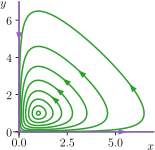
Look again at the Lotka–Volterra system, \[\begin{align} \label{lotvol3} \mathchoice{\frac{\mathrm{d}x}{\mathrm{d}t}}{\mathrm{d}x/\mathrm{d}t}{\mathrm{d}x/\mathrm{d}t}{\mathrm{d}x/\mathrm{d}t} &= x - xy,\\ \mathchoice{\frac{\mathrm{d}y}{\mathrm{d}t}}{\mathrm{d}y/\mathrm{d}t}{\mathrm{d}y/\mathrm{d}t}{\mathrm{d}y/\mathrm{d}t} &= \gamma(-y + xy), \end{align}\] and ask yourself: what happens if you start at \((0,0)\) and perturb it like \((0,\varepsilon)\)? In 3.1 we see the phase plot we’ve seen already, with two additional (purple) paths. If you perturb it like \((0,\varepsilon)\)... you end up back at \((0,0)\)! So how can this ‘unstable’ equilibrium be ‘stable’ in one special direction?
We say an equilibrium is unstable if there exists a direction you can perturb it in, in which it is unstable. What we see with Lotka–Volterra is a \((0,0)\) equilibrium which is ‘stable’ in one direction but ‘unstable’ in another. In the language of dynamical systems, this is known as a saddle point. A saddle point is a type of unstable equilibrium.
In fact, the eigenvector associated with each eigenvalue gives you the direction associated with the ‘stability’ indicated by the sign of the eigenvalue. Let’s formalise this idea.
Consider the 2D system whose stability matrix \(\mathsfbfit{J}\) is \[\begin{equation} \mathsfbfit{J} = \begin{pmatrix}a & b \\ c & d \end{pmatrix}. \end{equation}\] Solving for the eigenvalues, we have \[\begin{align} \det(\mathsfbfit{J}-\lambda \mathsfbfit{I}) & = \lambda^2 - (a+d)\lambda + ad-bc \\ & = \lambda^2 - \operatorname{tr}(\mathsfbfit{J})\lambda + \det(\mathsfbfit{J}) = 0, \end{align}\] and hence \[\begin{equation} \label{lambda-as-tr-det} \lambda = \frac{1}{2}\left[\operatorname{tr}(\mathsfbfit{J}) \pm \sqrt{ \operatorname{tr}(\mathsfbfit{J})^2 -4\det(\mathsfbfit{J})}\right]. \end{equation}\]
The general solution, as we saw in [xpv-eq-2d], is then \[\begin{equation} \mathbfit{x}_1 = C_1 \mathbfit{v}_1 \mathrm{e}^{\lambda_1 t} + C_2 \mathbfit{v}_2 \mathrm{e}^{\lambda_2 t}. \end{equation}\]
Considering [lambda-as-tr-det], we have the cases listed in 3.1, named after their graphical representation.
| \(\operatorname{tr}(\mathsfbfit{J})^2 - 4 \det(\mathsfbfit{J})\) | \(\implies\lambda_{1,2}\) | \(\operatorname{Re}(\lambda_1)\) | \(\operatorname{Re}(\lambda_2)\) | example | |
|---|---|---|---|---|---|
| Stable node | \(+\) | real | \(-\) | \(-\) | |
| Unstable node | \(+\) | real | \(+\) | \(+\) | |
| Saddle point | \(+\) | real | \(+\) | \(-\) | |
| Stable star | \(0\) | real, equal | \(-\) | ||
| Unstable star | \(0\) | real, equal | \(+\) | ||
| Stable spiral | \(-\) | complex | \(-\) | ||
| Unstable spiral | \(-\) | complex | \(+\) | ||
| Centre | \(-\) | imaginary | \(0\) | ||
In fact, we often don’t have to explicitly work out \(\lambda\) in order to develop stability criteria: instead we can just look at the trace and determinant. Note that \[\begin{equation} \lambda_1 + \lambda_2 = \operatorname{tr}(\mathsfbfit{J}) \quad \text{and} \quad \lambda_1\lambda_2 = \det(\mathsfbfit{J}). \end{equation}\] Then our table becomes
| \(\operatorname{tr}(\mathsfbfit{J})^2 - 4 \det(\mathsfbfit{J})\) | \(\operatorname{tr}(\mathsfbfit{J})\) | \(\det(\mathsfbfit{J})\) | ||
|---|---|---|---|---|
| Stable node | \(+\) | \(-\) | \(+\) | |
| Unstable node | \(+\) | \(+\) | \(+\) | |
| Saddle point | \(+\) | ? | \(-\) | |
| Stable star | \(0\) | \(-\) | \(+\) | |
| Unstable star | \(0\) | \(+\) | \(+\) | |
| Stable spiral | \(-\) | \(-\) | \(+\) | |
| Unstable spiral | \(-\) | \(+\) | \(+\) | |
| Centre | \(-\) | \(0\) | \(+\) |
This gives us a useful shortcut for determining stability if calculating the trace and determinant is easier than explicitly calculating the eigenvalues.
For stability (of any sort) we therefore require \[\begin{equation} \det(\mathsfbfit{J})>0 \quad \text{and} \quad \operatorname{tr}(\mathsfbfit{J})<0, \end{equation}\] but we can also use this observation to search for complex behaviour. In the case of the centre, the trajectories move around the fixed point never getting closer, or further away. This is an example of a closed orbit, or limit cycle. We will see that in context of fully nonlinear systems closed orbits can exist and they themselves can be stable or unstable.
As practice, you should try these determinant–trace criteria on the examples we have covered so far.
Remark
If \(b\) or \(c\) are zero then \[\begin{equation} \det(\mathsfbfit{J} -\lambda \mathsfbfit{I}) = (\lambda -a)(\lambda-d), \end{equation}\] so there is no need to find the trace or determinant (it often complicates matters).
A last word: these conditions on the determinant and trace are useful but are only valid for \(2\times2\) matrices.
3.1.1 Phase portraits
It’s important to keep in mind that the linear analysis about equilibria only gives a local description of the dynamics. To get a better picture of the global dynamics, we’d like to understand how the equilibria are connected, or if closed orbits exist. In one-dimensional systems, \(\mathchoice{\frac{\mathrm{d}x}{\mathrm{d}t}}{\mathrm{d}x/\mathrm{d}t}{\mathrm{d}x/\mathrm{d}t}{\mathrm{d}x/\mathrm{d}t} = f(x)\), this was easy as we only needed to examine the sign of \(f\) between the equilibria and the phase portrait was clear.
In two dimensions, the phase portrait will typically include:
The equilibria and some indication of their stability,
The trajectories near equilibria and periodic orbits that show the flow pattern.
While uniqueness of the solution dictates that trajectories cannot cross, compiling the phase portrait in 2D can be challenging. We’re going to construct the example phase portrait in 3.2. A good recipe looks like this:
Draw on the equilibria, coloured in according to their stability from a linear stability analysis
Draw the nullclines. These are the curves where either \[\begin{equation} \mathchoice{\frac{\mathrm{d}x}{\mathrm{d}t}}{\mathrm{d}x/\mathrm{d}t}{\mathrm{d}x/\mathrm{d}t}{\mathrm{d}x/\mathrm{d}t} = \dot x = 0 \quad\text{or}\quad \mathchoice{\frac{\mathrm{d}y}{\mathrm{d}t}}{\mathrm{d}y/\mathrm{d}t}{\mathrm{d}y/\mathrm{d}t}{\mathrm{d}y/\mathrm{d}t} = \dot y = 0. \end{equation}\] Since the equilibria satisfy both \(\dot x=0\) and \(\dot y = 0\), the nullclines will intersect at the equilibria.
Particularly helpful is that when trajectories intersect the nullcline, they must be either vertical (\(\dot x = 0\)) or horizontal (\(\dot y = 0\)).
The nullclines provide the boundary between regions of phase space where \(\dot x>0\) or \(\dot x<0\), and \(\dot y>0\) or \(\dot y<0\). Thus, the nullclines give us some sense of the direction of the trajectories in different regions of the phase plane. However, there is no way to see which sign \(\dot x,\dot y\) have in each region a priori, so we have to test at least one point in each region.
Infer the directions from this information. For example, in a region where \(\dot x<0\) and \(\dot y<0\), we’d expect trajectories heading down and to the left.
See how we’ve done this in 3.2 for a made-up scenario. At this point we can try to plot the full trajectories (although I haven’t done so here).
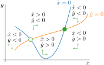
With this in mind, let’s look at Lotka–Volterra and its variants in more detail.
3.2 Lotka–Volterra revisited
We learnt in 2 that nondimensionalised Lotka–Volterra has two equilibria:
\((0,0)\) with eigenvalues \(1\) and \(-\gamma < 0\), and
\((1,1)\) with eigenvalues \(\pm\sqrt{\gamma}\mathrm{i}\).
Looking at our stability table, we see \((0,0)\) is therefore officially a saddle point, and \((1,1)\) is a centre. This matches what we’ve seen in our phase diagrams so far.
Looking at [lotvol3], we can see the nullclines are:
\(\displaystyle\mathchoice{\frac{\mathrm{d}x}{\mathrm{d}t}}{\mathrm{d}x/\mathrm{d}t}{\mathrm{d}x/\mathrm{d}t}{\mathrm{d}x/\mathrm{d}t} = 0\) \(\implies\) \(x=0\) and \(y=1\),
\(\displaystyle\mathchoice{\frac{\mathrm{d}y}{\mathrm{d}t}}{\mathrm{d}y/\mathrm{d}t}{\mathrm{d}y/\mathrm{d}t}{\mathrm{d}y/\mathrm{d}t} = 0\) \(\implies\) \(x=1\) and \(y=0\).
Putting these and the equilibria on the phase diagram in 3.3, we can see the quadrants where \(\mathchoice{\frac{\mathrm{d}x}{\mathrm{d}t}}{\mathrm{d}x/\mathrm{d}t}{\mathrm{d}x/\mathrm{d}t}{\mathrm{d}x/\mathrm{d}t}\) and \(\mathchoice{\frac{\mathrm{d}y}{\mathrm{d}t}}{\mathrm{d}y/\mathrm{d}t}{\mathrm{d}y/\mathrm{d}t}{\mathrm{d}y/\mathrm{d}t}\) are positive and negative. This tells us the direction that the centre at \((1,1)\) takes... it must be anticlockwise.
Furthermore, what about the saddle point at \((0,0)\)? Well, working out the associated eigenvectors, the positive (corresponding to unstable) eigenvalue \(1\) corresponds to the vector \((1,0)\), and the negative (stable) eigenvalue \(-\gamma\) corresponds to \((0,1)\). This tells us that the saddle is unstable in the direction \((1,0)\) but stable in the direction \((0,1)\). Just like we’ve seen! These are also part of the picture in 3.3.
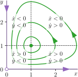
So we have the Lotka–Volterra equations and we know about the stability of their equilibria. Is this a good model?
Periodic behaviour is seen in nature.
The original Lotka–Volterra model was intended to model periodic behaviour. One well-studied example of periodic predator–prey behaviour is the relationship between snowshoe hares and the Canada lynx. These animals, which coexist throughout Canada and Alaska, have pelts which were collected in the 19th and 20th century. The counts of pelts is shown in 3.4.
...but so is extinction.
We saw in 2.3 that extinction is impossible in the classic Lotka–Volterra system. This results from the fact that if population \(y\) drops close to zero, then \(x\) is subject to unconstrained growth which eventually leads to an increase in \(y\), stopping it from dropping to zero. We only have one parameter in the nondimensionalised system (\(\gamma\)) and that just scales the solution.
Odd sensitivity to initial conditions.
If we remember the periodic orbits of Lotka–Volterra in 1.8(a), changing the initial condition is equivalent to varying which orbit the solution exists on. In terms of the biology, this implies a couple of things. Firstly, there is no natural oscillation in the population levels – different initial population sizes yield different oscillations. And secondly, this causes strange, unnatural things to occur, such as lowering the initial population of predators resulting in larger peaks in their population size.
We would expect in reality that it is possible for one species to win regardless of initial conditions. Let’s have a look at some variations.
3.3 Competitive Lotka–Volterra: the exclusion principle
In classic Lotka–Volterra, one species is the predator, while the other is the prey. But often in nature, multiple species compete for the same resources and as a result, the presence of one population impedes the growth of another. A classic example is American grey squirrels (with their bad spellings and perfect teeth) outcompeting native British red squirrels since their introduction to England in 1876 (3.5).
Let’s take the case of two species whose population sizes are \(x\) and \(y\), respectively. In isolation, each population will evolve according to logistic growth, which you will recall from 1.2, looks like \[\begin{equation} \mathchoice{\frac{\mathrm{d}x}{\mathrm{d}t}}{\mathrm{d}x/\mathrm{d}t}{\mathrm{d}x/\mathrm{d}t}{\mathrm{d}x/\mathrm{d}t} = a x\left(1-\frac{x}{K}\right), \end{equation}\] with \(K\) the limiting population. When the other population is present, the death rate of a species will be proportional to the population size of the other species.
This leads us to the system: \[\begin{align} \label{lotvolcomp2} \mathchoice{\frac{\mathrm{d}x}{\mathrm{d}t}}{\mathrm{d}x/\mathrm{d}t}{\mathrm{d}x/\mathrm{d}t}{\mathrm{d}x/\mathrm{d}t} &= a x\left(1-\frac{x}{\eta_1}\right) - b x y,\\ \mathchoice{\frac{\mathrm{d}y}{\mathrm{d}t}}{\mathrm{d}y/\mathrm{d}t}{\mathrm{d}y/\mathrm{d}t}{\mathrm{d}y/\mathrm{d}t} &= c y\left(1-\frac{y}{\eta_2}\right) - d x y. \end{align}\] This has self-interaction for both species \(x\) and \(y\) through the logistic terms, as well as mutual interaction through the \(xy\) terms.
We nondimensionalise by setting \(x = \widehat{x}\eta_1\), \(y = \widehat{y}\eta_2\), \(t = \widehat{t}/a\), \(\gamma_1 = b\eta_2/a\), \(\gamma_2 = d\eta_1/c\) and \(\beta = c/a\). On substituting and dropping hats we obtain the nondimensionalised competitive Lotka–Volterra equations, \[\begin{align} \label{lotvolcomp2scaled} \mathchoice{\frac{\mathrm{d}x}{\mathrm{d}t}}{\mathrm{d}x/\mathrm{d}t}{\mathrm{d}x/\mathrm{d}t}{\mathrm{d}x/\mathrm{d}t} &= x(1-x - \gamma_1 y),\\ \mathchoice{\frac{\mathrm{d}y}{\mathrm{d}t}}{\mathrm{d}y/\mathrm{d}t}{\mathrm{d}y/\mathrm{d}t}{\mathrm{d}y/\mathrm{d}t} &= \beta y(1-y - \gamma_2 x), \end{align}\] where \(\beta,\gamma_1,\gamma_2>0\).
A worked example of a nondimensionalisation can be found in Additional Problem Sheet 2. You should try to recreate the nondimensionalisation (eqs. [lotvolcomp2] to [lotvolcomp2scaled]) using the same method.
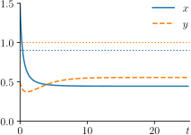
An example solution is shown in 3.6: we see both populations eventually settle on fixed values, although the competition through the mutual competition terms \(\gamma_1 xy\) and \(\gamma_2 x y\) ensures these fixed values are not those of the logistic behaviour alone.
See if you can reproduce 3.6 yourself by adapting your Python code from the last Lotka–Volterra plot.
Let’s do a linear stability analysis as well as drawing a phase portrait.
Find equilibria
[lotvolcomp2scaled] allows for the trivial null population solutions, \((x,y)=(0,0)\), but interestingly it also allows for solutions where one or the other populations is extinct, \[\begin{equation} (x,y) = (0,1)\mbox{ and } (x,y) = (1,0). \end{equation}\] In both cases the non-extinct population takes on its logistic value (remembering that we have nondimensionalised by this point). The final equilibrium takes the form \[\begin{equation} \label{nonzeroeq} (x,y) = \left( \frac{1-\gamma_1}{1-\gamma_1\gamma_2}, \frac{1-\gamma_2}{1-\gamma_1\gamma_2} \right), \end{equation}\] and exists if \(\gamma_1,\gamma_2<1\) or \(\gamma_1,\gamma_2>1\) (because of the denominator).
The nullclines are given by the same equations, but considered separately: \[\begin{align} 0 &= x(1-x-\gamma_1y) &&\implies x=0, \quad x=1-\gamma_1 y\\ 0 &= \beta y(1-y-\gamma_2x) &&\implies y=0, \quad y=1-\gamma_2 x. \end{align}\] The important observation is that the slope of the lines, and whether they intersect or not, depend on the values of \(\gamma_1\) and \(\gamma_2\). As the intersections are the equilibria, we see that varying \(\gamma_1\) and \(\gamma_2\) result in bifurcations. Four cases can arise, depicted in 3.7.
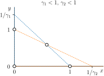
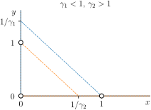
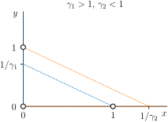
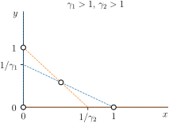
Linearise the system
The Jacobian matrix \(\mathsfbfit{J}\) takes the form \[\begin{equation} \label{A1lotcomp} \mathsfbfit{J} = \begin{pmatrix} 1 - 2x_0 - \gamma_1 y_0 & - \gamma_1 x_0 \\ -\beta \gamma_2 y_0 & \beta(1 - 2y_0 - \gamma_2 x_0) \end{pmatrix}. \end{equation}\]
Solve the linearised system
Solutions will be linear combinations of exponential terms, \(C\mathbfit{v}\mathrm{e}^{\lambda t}\), therefore we have to solve \(\det(\mathsfbfit{J} - \lambda \mathsfbfit{I}) = 0\).
Assess stability
Stability of \((0,0)\):
The \((x_0,y_0)=(0,0)\) case leads to a polynomial, \[\begin{equation} (1-\lambda)(\beta-\lambda)= 0, \end{equation}\] so the eigenvalues are \(\lambda_1 = 1\) and \(\lambda_2 = \beta\). The equilibrium is an unstable node as \(\operatorname{Re}(\lambda_1)>0\). That is to say, the two populations cannot die out simultaneously.
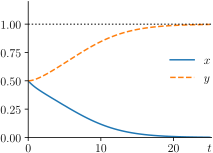
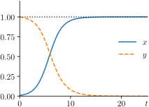
Stability of \((0,1)\):
For the case \((x_0,y_0) = (0,1)\), the characteristic polynomial is \[\begin{equation} (1-\gamma_1-\lambda)(-\beta -\lambda) = 0. \end{equation}\] So the eigenvalues are \(\lambda_1 = 1- \gamma_1\) and \(\lambda_2 = -\beta\). This is a stable node if \(\gamma_1>1\) (we assume \(\beta>0\)). If not, it is a saddle point.
3.8(a) shows the dynamic relaxation to this stable equilibrium when \(\gamma_1>1\). 3.8(b) demonstrates the instability of the equilibrium when \(\gamma_1<1\): a small perturbation around the equilibrium, \((0+\varepsilon,1)\), leads to the next equilibrium...
Stability of \((1,0)\):
Using the same arguments for the case \((x_0,y_0) = (1,0)\), the eigenvalues are \(\lambda_1 = -1\) and \(\lambda_2 = \beta(1-\gamma_2)\). This is a stable node if \(\gamma_2>1\) (we assume \(\beta>0\)). If not, it is a saddle point.
Stability of \(\left( \frac{1-\gamma_1}{1-\gamma_1\gamma_2}, \frac{1-\gamma_2}{1-\gamma_1\gamma_2} \right)\):
The Jacobian in this case is \[\begin{equation} \mathsfbfit{J} = \frac{1}{1-\gamma_1\gamma_2}\begin{pmatrix} \gamma_1 - 1 & \gamma_1(\gamma_1-1) \\ \beta\gamma_2(\gamma_2-1) & \beta(\gamma_2-1) \end{pmatrix}, \end{equation}\] and the characteristic equation is therefore (after some algebra) \[\begin{equation} \lambda^2(1-\gamma_1\gamma_2)+\lambda(1-\gamma_1+\beta[1-\gamma_2])+\beta(1-\gamma_1)(1-\gamma_2) = 0. \end{equation}\] This is a quadratic of the form \[\begin{equation} a\lambda^2 + b\lambda + c = 0, \end{equation}\] so let’s look at the signs of \(a,b,c\) in the only two cases where this equilibrium exists:
Case 1: \(\gamma_1<1\), \(\gamma_2<1\). Then \(a>0\), \(b>0\), \(c>0\) and by the quadratic formula (or Descartes’ rule of signs), \(\operatorname{Re}(\lambda_1),\operatorname{Re}(\lambda_2)<0\). The equilibrium is therefore stable. Some more algebra can tell us that it is in fact a stable node, but it is tedious so we won’t bother here.
Descartes’ rule of signs says that the number of positive roots of a polynomial is at most the number of sign changes in the sequence of polynomial’s coefficients (omitting the zero coefficients), and that the difference between these two numbers is always even.
This implies something very useful:
0 sign changes \(\implies\) 0 positive roots,
1 sign change \(\implies\) 1 positive root.
This trick (in context) can be generalised for systems beyond two species using the Routh–Hurwitz criterion... but to do so is beyond the scope of our course.
Case 2: \(\gamma_1>1\), \(\gamma_2>1\). Then \(a<0\), \(b<0\), \(c>0\) and by the quadratic formula (or again Descartes), \(\operatorname{Re}(\lambda_1)<0<\operatorname{Re}(\lambda_2)\). The equilibrium is therefore a saddle point.
We can mark the stability on the plots, as shown in 3.9. We can work from the nullclines and equilibria to add in some sample trajectories. Witness the power of linear stability analysis! We have analysed this system in considerable detail without having to solve it.
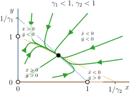
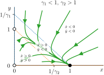
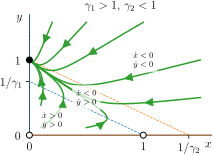
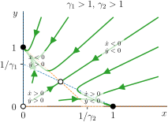
There is an important biological interpretation to this model. A rather striking feature is that three of the four cases described above result in extinction of one of the species! The extinction of one population due to competition with another is known as the principle of competitive exclusion. In our model, we see that whether this occurs or not depends on the groups \(\gamma_1 = b\eta_2/a\) and \(\gamma_2 = d\eta_1/c\), and hence the competition coefficients (interspecies competition) and carrying capacities (intraspecies competition).
Consider a population of large animals, \(x\), and a population of smaller animals, \(y\), that compete for the same food source, such as grass in a fixed area. Suppose that \(b/a = d/c\). As the carrying capacity of the land is lower for the larger animals, we have that \(\eta_1 < \eta_2\), and as a result \(\gamma_1 > \gamma_2\). We can imagine then that we may encounter \(\gamma_1 > 1\) and \(\gamma_2 < 1\), which will result in the extinction of the larger animals leaving the smaller animal population to flourish.
We found that the only case where coexistence was permitted was \(\gamma_1<1\), \(\gamma_2<1\). What is the biological interpretation of this?
The principle of competitive exclusion is an import concept in ecology, but there is a famous counterexample. The paradox of the plankton asks why well-mixed lakes or oceans maintain dozens or hundreds of phytoplankton species, despite the fact they all consume the same resource. This is a good example of modelling failing to capture observations. Look it up!
In Problem Sheet 2, you will analyse all the equilibria of a similar system but for predator–prey dynamics, \[\begin{align} \mathchoice{\frac{\mathrm{d}x}{\mathrm{d}t}}{\mathrm{d}x/\mathrm{d}t}{\mathrm{d}x/\mathrm{d}t}{\mathrm{d}x/\mathrm{d}t} &= a x\left(1-\frac{x}{\eta_1}\right) - b x y,\\ \mathchoice{\frac{\mathrm{d}y}{\mathrm{d}t}}{\mathrm{d}y/\mathrm{d}t}{\mathrm{d}y/\mathrm{d}t}{\mathrm{d}y/\mathrm{d}t} &= c y\left(1-\frac{y}{\eta_2}\right) + d x y. \end{align}\] You will be asked to assess whether this variation on Lotka–Volterra is a physically reasonable system. As part of this analysis, you should consider the physical interpretation of each equilibrium and whether it would be desirable for it to be stable or not.
Similar examples can be found in Additional Problem Sheet 2.
3.3.1 Reflections on our new model
We saw in the original Lotka–Volterra model, [reducedlotvol], that it was impossible for any population to become extinct. In the competitive Lotka–Volterra model, we introduced the notion of independent growth limitation on the individual populations to our system through the logistic model.
This has reintroduced extinction: we now have a model which allows one species to ‘win’, in addition to cases where both populations settle on fixed values. But in doing so we have found limitations. The main one is that we appear to have lost the periodic/cyclic nature of the original Lotka–Volterra model. (This is in fact true on account of the so-called Dulac criterion, but we won’t prove it in this course.)
An analogy with the pendulum
There is an analogy to be made here with our pendulum in 2. When the pendulum was frictionless, we had eigenvalues with zero part (the degenerate case) and it would swing forever: periodic behaviour. Energy was conserved in time: if you take the kinetic energy, \(T\), and the potential energy of the system, \(V\), and let \(\mathcal{H} = T+V\), then \[\begin{equation} \mathchoice{\frac{\mathrm{d}\mathcal{H}}{\mathrm{d}t}}{\mathrm{d}\mathcal{H}/\mathrm{d}t}{\mathrm{d}\mathcal{H}/\mathrm{d}t}{\mathrm{d}\mathcal{H}/\mathrm{d}t} = 0. \end{equation}\] The conserved quantity \(\mathcal{H}\) is called the Hamiltonian and manipulating it forms the basis of Hamiltonian mechanics. Systems where there is a conserved quantity are also called Hamiltonian.
When we included the friction term, energy was no longer conserved: such systems are called dissipative. Our eigenvalues had nonzero real part and we lost periodicity.
Compare this with Lotka–Volterra. The coexistence equilibrium of Lotka–Volterra similarly has eigenvalues with zero real part. This is also a Hamiltonian system, and we have actually already seen the quantity which is conserved: it’s \(C\) in [dynsol]! When we add the logistic term, we once again lose periodic behaviour as we create a dissipative systems.
This is a weakness of the Lotka–Volterra model. For a model to be successful, small modifications to the model should produce similar results. But because modifications make the system dissipative, you lose important properties like periodicity.
How could we fix this?
In the original model, [reducedlotvol], the control of the greenfly and ladybird populations was mediated entirely by the \(xy\) interaction term. In our competitive model, the populations are also self-controlled by the logistic part of [lotvolcomp2scaled], which is independent of the interacting population, i.e., \(\eta_1\) has no dependence on the size of \(y\). A popular variation of the competition model is to make \(\eta_1\) and \(\eta_2\) depend on \(y\) and \(x\) respectively. This re-introduces the periodicity to the model, but still allows for extinction. In 4 we will encounter an example of a model which can do just this.
There has been a significant body of work regarding extensions to the predator–prey model, including the above behaviour as well as extensions to \(n\) populations. For example, for three or more populations, the system can show chaotic behaviour: a phenomenon not possible for two populations on account of (for example) the Poincaré-Bendixson theorem. Mathematicians such as Stephen Smale and Morris Hirsch have proved some deep results regarding the asymptotic (limiting) behaviour of more general systems. However, these results are somewhat out of the scope of this course.
You can find the competitive Lotka–Volterra system in Murray, vol. I, chap. 3.5.
4 Bifurcations
So far, we have looked two variants of the Lotka–Volterra system. The original, in 1, had periodic solutions. The competitive adaptation, in 3, had no periodic solutions but it allowed for the possibility of either species extinction or relaxation to a fixed value; which of these behaviours we got depended on the model’s parameters.
The values of parameters where the behaviour switches are known as bifurcation points. The business of looking for and analysing them is a large area in applied mathematics, and so we will take a brief look at some simpler, one-dimensional biological models which demonstrate the technique. This is all an example-driven prelude to next term where we will more systematically treat bifurcation theory in a slightly more general sense.
4.1 Bifurcations of scalar equations
As mentioned above, a bifurcation is a qualitative change in the behaviour of a model. A bifurcation of an equilibrium, for example, is a point where the stability and/or number of equilibria change, and hence the topology of the phase space will change. While solving nonlinear differential equation models can be hard, using the technique of linear stability that we have developed, we can explore how these qualitative changes in behaviour matter. Importantly, we can also relate the idea of ‘changing parameters’ to real biological parameters, such as harvesting, climate change, and many other inputs to a given biological system. We will first do this via a few examples of single-species models.
4.1.1 Logistic growth with harvesting
We saw in 1.2 that the logistic equation has two equilibria, one which is stable and one which is unstable. Let’s now make a small modification to the logistic equation which accounts for constant-rate harvesting, \[\begin{equation} \label{logistic-harvest} \mathchoice{\frac{\mathrm{d}x}{\mathrm{d}t}}{\mathrm{d}x/\mathrm{d}t}{\mathrm{d}x/\mathrm{d}t}{\mathrm{d}x/\mathrm{d}t} = ax\left(1-\frac{x}{K}\right) - H. \end{equation}\] Let’s look at the phase space in 4.1(a).
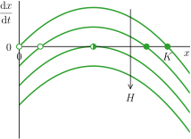
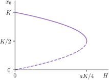
As \(H\) increases, we can see graphically we go from two equilibria, to one, to none! This corresponds to the roots of \(\mathchoice{\frac{\mathrm{d}x}{\mathrm{d}t}}{\mathrm{d}x/\mathrm{d}t}{\mathrm{d}x/\mathrm{d}t}{\mathrm{d}x/\mathrm{d}t} = 0\) in [logistic-harvest] becoming equal and then imaginary: the quadratic equation tells us \[\begin{equation} \label{bifurcation-equilibrium-harvesting} x_0 = \frac{K \pm \sqrt{K^2 - 4HK/a}}{2}. \end{equation}\] So if we increase \(H\), as soon as we go over \(H=aK/4\), \(\mathchoice{\frac{\mathrm{d}x}{\mathrm{d}t}}{\mathrm{d}x/\mathrm{d}t}{\mathrm{d}x/\mathrm{d}t}{\mathrm{d}x/\mathrm{d}t}\) becomes always negative and we reach extinction in finite time. An interesting result about the dangerous of overharvesting! This discontinuous jump in the long-time solution is known as a catastrophe.
In general, when changes in parameter values in our models lead to qualitative changes in the equilibria and their stability, we say a bifurcation has occurred. The parameter values at which we see the bifurcation is called the bifurcation point.
To emphasise this point: bifurcation points are about parameters. In this harvesting model, we could ask this question more directly: ‘what are the equilibria, \(x_0\), for any given parameter, \(H\)?’ And we’ve actually answered this already, in [bifurcation-equilibrium-harvesting].
So why don’t we plot \(x_0\) as a function of \(H\)? That’s what we’ve done in 4.1(b): you’ll notice that we’ve plotted both of the ‘\(\pm\)’ branches of the solution. Plotting equilibria against parameters is what’s known as a bifurcation diagram and when people draw these, they note which branches refer to stable equilibria, and which refer to unstable equilibria. The stable equilibrium branch gets a solid line and the unstable equilibrium branch gets a dotted line. They can be a bit hard to get your head around to start with, so I will always draw them in purple to remind you that it’s not a phase space.
Can you spot where the bifurcation point is on the diagram? It’s where the unstable and stable lines meet. We’ll see a few more of these diagrams shortly.
4.1.2 Insect outbreak: the spruce budworm
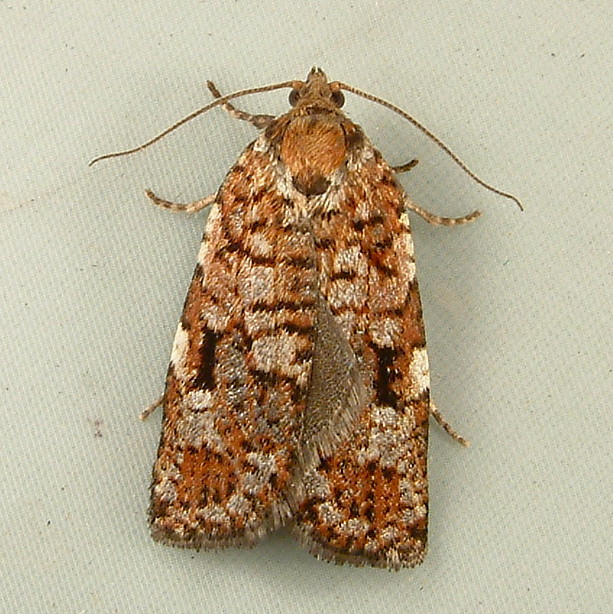
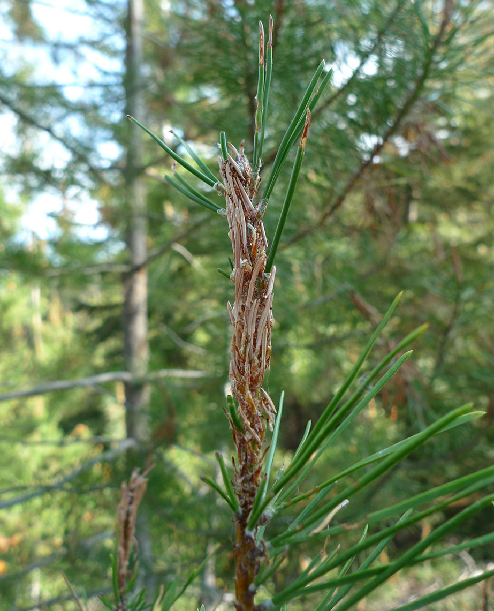
One cannot take a mathematical biology course without encountering the spruce budworm. It shows how a simple, one-dimensional systems can yield rich dynamics with relevant predictions of a biological phenomenon. The spruce budworm, shown in 4.2, is a moth that infects spruce trees (a type of fir tree) in eastern Canada and the US. The moths produce larvae which feed on the needles of the conifers: a serious infestation can lead to complete defoliation of a forest in about four years, and so the budworm is considered one of the most destructive pests in North America.
The budworm is preyed upon by birds that for low budworm population feed only upon the budworms once the budworm population has reached a certain level. Assuming logistic growth for the budworm population in the absence of birds, the budworm population size, \(x\), is governed by the variation on the logistic equation, \[\begin{equation} \mathchoice{\frac{\mathrm{d}x}{\mathrm{d}t}}{\mathrm{d}x/\mathrm{d}t}{\mathrm{d}x/\mathrm{d}t}{\mathrm{d}x/\mathrm{d}t} = rx\left(1-\frac{x}{K}\right) - \frac{Bx^2}{A^2 + x^2}. \end{equation}\] What does the new term tell us? As \(x \to \infty\), the predation rate becomes \(B > 0\), similar to our harvesting model. Meanwhile, \(A > 0\) provides a measure of the threshold population size where predation suddenly increases.
Nondimensionalising with \[\begin{equation} x = A \widehat{x}, \quad t = \frac{A}{B}\widehat{t}, \end{equation}\] and dropping hats, we get \[\begin{equation} \label{budworm-nondim} \mathchoice{\frac{\mathrm{d}x}{\mathrm{d}t}}{\mathrm{d}x/\mathrm{d}t}{\mathrm{d}x/\mathrm{d}t}{\mathrm{d}x/\mathrm{d}t} = Rx\left(1-\frac{x}{k}\right) - \frac{x^2}{1+x^2}, \end{equation}\] where \(R=rA/B\) and \(k=K/A\). Once again nondimensionalisation has reduced the parameter space, from four to two!
Find equilibria
The equilibria are given by \(x=0\) and \[\begin{equation} R\left(1-\frac{x}{k}\right) = \frac{x}{1+x^2}, \label{spruce-rk} \end{equation}\] where the logistic growth is balanced by the predation. Thus, the equilibria occur when the line given by the left-hand side of [spruce-rk] intersects the curve given by the right-hand side. Naturally, we’d like to explore how these equilibria vary with \(R\) and \(k\) and, in doing so, we see the benefit of our choice of nondimensionalisation.
The curve given by \(g(x) = x/(1 + x^2)\) does not depend on either parameter, and as for the line \(h(x) = R(1-x/k)\), \(R\) is the \(y\)-intercept, while \(k\) is the where it crosses the \(x\)-axis. This is plotted in 4.3, and as you can see, this makes graphical evaluation quite easy!
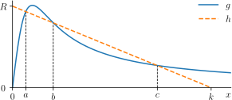
Just like in the harvesting model (where we changed the parameter \(H\)), we see that changing \(R\) and \(k\) can lead to us going from three additional equilibria (we already have \(x=0\)), to two, to one: more bifurcations.
Jump to... Assess stability
We can go further and classify the equilibria in these regions: as we saw in 1.3, for one dimension it is quite easy. Just to the right of \(x=0\), let’s say \(x=\varepsilon\), you can see from [budworm-nondim] that \(\mathchoice{\frac{\mathrm{d}x}{\mathrm{d}t}}{\mathrm{d}x/\mathrm{d}t}{\mathrm{d}x/\mathrm{d}t}{\mathrm{d}x/\mathrm{d}t} > 0\). So \(x=0\) is unstable. Then, thinking about the phase portrait of \(\mathchoice{\frac{\mathrm{d}x}{\mathrm{d}t}}{\mathrm{d}x/\mathrm{d}t}{\mathrm{d}x/\mathrm{d}t}{\mathrm{d}x/\mathrm{d}t}\) against \(x\), by the continuity of \(\mathchoice{\frac{\mathrm{d}x}{\mathrm{d}t}}{\mathrm{d}x/\mathrm{d}t}{\mathrm{d}x/\mathrm{d}t}{\mathrm{d}x/\mathrm{d}t}\), the stability must alternate.
Which equilibria \(a,b,c\) (in addition to the \(x=0\) one) do we have in each region?
| region | equilibria | |||
|---|---|---|---|---|
| 1 extra equilibrium (high \(R\), high \(k\)) | \(x=0\), | \(x=c\) | ||
| 3 extra equilibria | \(x=0\), | \(x=a\), | \(x=b\), | \(x=c\) |
| 1 extra equilibrium (low \(R\), low \(k\)) | \(x=0\), | \(x=a\) | ||
| stability must be | unstable | stable | unstable | stable |
| name | extinction | refuge | threshold | outbreak |
What are the biological interpretations of these equilibria? The equilibrium \(a\) corresponds to the refuge population level, and \(c\) to the outbreak population level. The unstable equilibrium \(b\) is referred to as the threshold as initial populations \(x > b\) increase to the outbreak level, while for \(x < b\) the population will decrease to the refuge size.
Bifurcation diagram
Although we have two parameters we can vary, we could still draw a bifurcation diagram by holding one of the parameters fixed and varying the other. So we could ask ‘fixing \(k\), what are the equilibria, \(x_0\), for any given parameter, \(R\)?’
In order to do this, we need to solve for \(x\) in [spruce-rk]. This is an ugly cubic but you can trust me that it’s possible to do analytically (I don’t expect you to work this out). We can plot all the branches where the solutions are real on one diagram: see 4.4(a). Once again, when the equilibrium \(x_0\) is unstable, the line is dotted; when it’s stable, the line is solid.
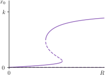
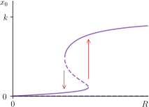
Convince yourself that this corresponds to 4.3 where \(k\) is fixed and \(R\) is varied.
Hysteresis
One important feature of this system is that it can exhibit hysteresis, meaning that varying the parameters in such a way that their return to their initial values does not return the system to its original state.
Go back to 4.3. Suppose that the parameters \(R\) and \(k\) are such that we have four equilibria (including \(x = 0\)). Let’s suppose that the population is at the refuge size, \(x = a\). Now, imagine that \(R\) is increased and the bifurcation occurs making \(x=c\) the only stable equilibrium. The system will move to the outbreak size.
Even if we reduce \(R\) to its original value, we will be above the threshold and continue to move to \(c\) rather than \(a\). Thus, once the outbreak occurs, reducing \(R\) to its original value won’t solve the problem.
We can see how this plays out on the bifurcation diagram in 4.4(b). If we want four equilibria we should set \(R\) so that it’s in the middle of the ‘S’ shape. If we start at the equilibrium \(x_0=a\), we must on the lower branch of the ‘S’. Increasing \(R\), we move to the right until we have to jump! The only stable equilibrium is the top branch, so we jump up to the top. Now reducing \(R\) again, we slide down this top branch, but you see that when we return to the original value of \(R\) we are at a different equilibrium.
How might you go about returning the population of the refuge value?
The bifurcation diagrams we have seen here are a little too complicated to expect you to draw in an exam, although you are expected to understand them. But there are simpler equations than the two biological models here which also produce bifurcations, and in fact these simpler equations capture the generic scenarios which appear in many, more complicated biological models. So let’s look at them now.
4.1.3 General bifurcations of single-species models
In general, a single-species model (that is, a single ODE), can only do so many different things as parameters are varied. In particular, the only long-time behaviour that can occur for a finite population is that it tends to a steady state value.
Can you explain why the solution \(x(t)\) to a single first-order ODE must go to an equilibrium (or blow-up to \(\pm \infty\)) as \(t \to \infty\)? Try explaining this to a friend who has seen ODEs but has not done any dynamics.
But what sorts of different things can happen as parameters vary? Well it turns out that in general you can have a number of different scenarios, depending on how many parameters vary, and how ‘generic’ or commonplace we expect these behaviours to be. Rather than formally and systematically listing all of these bifurcations, let’s just consider the two most common examples, and one example of a ‘complex’ bifurcation diagram formed by combining these basic bifurcations together. Importantly, these are not just examples for single-species models, but they can and do occur commonly in larger models of many species.
Saddle node bifurcation
A saddle node bifurcation (sometimes called a fold bifurcation or annihilation point) occurs when an unstable equilibrium and a stable equilibrium ‘collide’ at the same value, and then both cease to exist afterwards. This is what happened in 4.1.1 as \(H\) increased beyond \(aK/4\), our bifurcation point. Confirm you agree with this by looking at 4.1.
The model there was a little awkward to draw the bifurcation diagram for but actually the prototypical model of the saddle node bifurcation is the much simpler equation \[\begin{equation} \label{prototypical-saddle-node} \mathchoice{\frac{\mathrm{d}x}{\mathrm{d}t}}{\mathrm{d}x/\mathrm{d}t}{\mathrm{d}x/\mathrm{d}t}{\mathrm{d}x/\mathrm{d}t} = p+x^2, \end{equation}\] where \(p\) is a parameter.
Draw the phase space of [prototypical-saddle-node] and check how many equilibria it has, and what their stabilities are, as \(p\) varies. Don’t worry about negative \(x\) not being feasible for representing biological populations: here we are looking at the broader mathematical principle.
By plotting the equilibria against the parameter, we create a bifurcation diagram, and you can see it in 4.5(a).
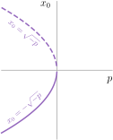
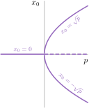
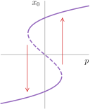
Pitchfork bifurcation
Another type of bifurcation is the pitchfork bifurcation, and the prototypical example is \[\begin{equation} \label{prototypical-pitchfork} \mathchoice{\frac{\mathrm{d}x}{\mathrm{d}t}}{\mathrm{d}x/\mathrm{d}t}{\mathrm{d}x/\mathrm{d}t}{\mathrm{d}x/\mathrm{d}t} = x(p - x^2), \end{equation}\] for a parameter \(p\). Think about the phase space of this equation: this is a negative cubic with roots at \(x=0\) and \(x=\pm\sqrt{p}\) if \(p>0\). If \(p<0\), then the only real root is \(x=0\). The two possible phase spaces are drawn in 4.6, where you can infer the stability.
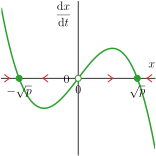
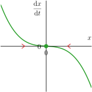
Calling our equilibria \(x_0\) again, consider the stability of the \(x_0=0\) equilibrium. If \(p<0\), it’s stable, and is the only equilibrium. As we increase \(p\) so it becomes positive, this equilibrium becomes unstable, and at the same time we get two new symmetric stable equilibria. The corresponding bifurcation diagram is shown in 4.5(b), where you can see from where the name ‘pitchfork’ comes!
Hysteresis (again)
We can combine these two simple models to find more complex behaviour, the type of which we have already seen in the spruce budworm model.
Let’s take the pitchfork prototype and add the shift from the saddle node prototype: in other words, let’s consider the two-parameter model \[\begin{equation} \mathchoice{\frac{\mathrm{d}x}{\mathrm{d}t}}{\mathrm{d}x/\mathrm{d}t}{\mathrm{d}x/\mathrm{d}t}{\mathrm{d}x/\mathrm{d}t} = p + x(q-x^2), \end{equation}\] for two parameters \(p\) and \(q\). For this discussion, we’ll fix \(q=1\) but we could do the same analysis as what follows by fixing \(p\). So we have \[\begin{equation} \label{prototypical-hysteresis} \mathchoice{\frac{\mathrm{d}x}{\mathrm{d}t}}{\mathrm{d}x/\mathrm{d}t}{\mathrm{d}x/\mathrm{d}t}{\mathrm{d}x/\mathrm{d}t} = p + x(1-x^2). \end{equation}\] What does the phase space look like and how many equilibria do we have for any \(p\)?
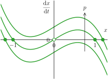
The phase space is drawn in 4.7 and we can see that equilibria appear and disappear as we change \(p\). We can find the equilibria, \(x_0\), in terms of \(p\) by once again solving this equation when \(\mathchoice{\frac{\mathrm{d}x}{\mathrm{d}t}}{\mathrm{d}x/\mathrm{d}t}{\mathrm{d}x/\mathrm{d}t}{\mathrm{d}x/\mathrm{d}t}=0\). Plotting these \(x_0\) when they are real as a function of \(p\) gives us the bifurcation diagram in 4.5(c).
Just like in the spruce budworm, we see we can vary \(p\) such that returning \(p\) to its initial value doesn’t return the system to its original state: hysteresis. If you don’t see why, read again the discussion under the spruce budworm on page and see that it applies exactly to this model.
These three bifurcation phenomena – saddle nodes, pitchforks and hysteresis – will reappear next term: for now, we’re learning about them because with these bifurcation diagrams you can read off essentially the entire system’s behaviour for any given parameter. Pretty cool!
4.2 The Schnakenberg enzyme reaction system
We promised that we would look at a two-dimensional model which also experiences bifurcations, displaying both periodic behaviour as well as decay and relaxation. For this we step into another important area of mathematical biology: biochemical reactions.
The reason that the Lotka–Volterra model has Lotka’s name attached is because the American biophysicist Alfred J. Lotka (1880–1949) stumbled upon the same system independently between 1910 and 1925, initially in the context of how chemicals interact.
Biochemical reactions are extremely important for biological function. They are involved in metabolism and its control, immunological responses, and cell-signalling processes. Biochemical processes are often controlled by enzymes. Enzymes are proteins that catalyse biochemical reactions by lowering the activation energy. Let’s have a look at such a reaction.
Consider the chemical reaction mechanism, \[\begin{equation} U \xrightleftharpoons[k_{-1}]{k_1} A, \qquad B \xrightarrow{k_2} V, \qquad 2U+V \xrightarrow{k_3} 3U. \end{equation}\]
This system can be represented in nondimensional form by the system of equations, \[\begin{align} \label{limcyc} \mathchoice{\frac{\mathrm{d}u}{\mathrm{d}t}}{\mathrm{d}u/\mathrm{d}t}{\mathrm{d}u/\mathrm{d}t}{\mathrm{d}u/\mathrm{d}t} &= a - u +u^2v,\\ \mathchoice{\frac{\mathrm{d}v}{\mathrm{d}t}}{\mathrm{d}v/\mathrm{d}t}{\mathrm{d}v/\mathrm{d}t}{\mathrm{d}v/\mathrm{d}t} &= b - u^2v, \end{align}\] with constants \(a,b>0\).
We can translate between chemical (stoichiometric) equations and ODEs using the law of mass action. The law says that the rate of a reaction is proportional to the product of the concentrations of the reactants.
Suppose there are \(M\) elementary reactions of \(N\) molecules, or chemical species, \(A_i\), with concentrations \(a_i\). We write the \(j\)th reaction as \[\begin{equation} \alpha_{1j}A_1 + \alpha_{2j}A_2 + \dots + \alpha_{Nj}A_N \xrightleftharpoons[k_j^-]{k_j^+} \beta_{1j}A_1 + \beta_{2j}A_2 + \dots + \beta_{Nj} A_N, \end{equation}\] with stoichiometric parameters \(\alpha_{ij}, \beta_{ij} \geq 0\), and rate constants \(k_j^{+,-} \geq 0\).
The law of mass action gives the differential equation for the concentration \(a_i\) as \[\begin{equation} \mathchoice{\frac{\mathrm{d}x_i}{\mathrm{d}t}}{\mathrm{d}x_i/\mathrm{d}t}{\mathrm{d}x_i/\mathrm{d}t}{\mathrm{d}x_i/\mathrm{d}t} = \sum_{j=1}^M(\beta_{ij}-\alpha_{ij})\left(k_j^+\prod_{\ell=1}^N a_\ell^{\alpha_{\ell j}} - k_j^-\prod_{\ell=1}^N a_i^{\beta_{\ell j}} \right). \end{equation}\]
In Epiphany term you will analyse a variant of this system which includes spatial variables; this system will explain the tree-like growth of one of the largest single cell organisms, known as Acetabularia (see 4.8).
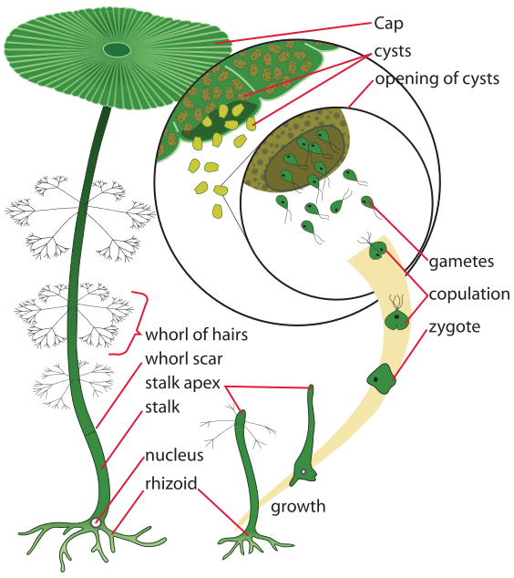
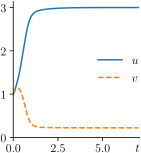
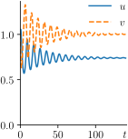
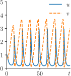
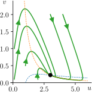
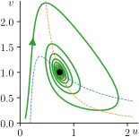
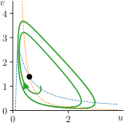
The system, [limcyc], was developed by Jürgen Schnakenberg in 1979 as a ‘simple’ chemical reaction which can exhibit very different behaviour, depending on the value of the parameters \(a\) and \(b\). In 4.9 we see solutions to this system which show:
a stable node (\(a=1\), \(b=2\)),
a stable spiral (\(a= 0.19\), \(b=0.55\)), and
(convergence to) fixed periodic behaviour (\(a=0.1\), \(b=0.5\)).
The question we seek to answer here is how we can identify which parameters \((a,b)\) lead to the differing behaviour, and hence – critically – where does the behaviour switch?
Have a go at reproducing the plots in 4.9 in Python by modifying your existing code. How sensitive is the system to small changes in \(a\) and \(b\)?
This is an important aspect of mathematical biology (and indeed other areas of applied mathematics). The idea is that if we know our model can accurately represent a given real life system (as in the Acetabularia case) then we can use the kind of analysis we are about to introduce in order to control the system’s behaviour.
We haven’t spoken much about periodic, or oscillatory, behaviour so far, other than saying that periodic behaviour is seen in the original Lotka–Volterra model and in the lynx/hare population it models. In bioscience, where we are often modelling biochemical reactions like we have here, periodic behaviour is extremely common: think heartbeats, breathing and nerve impulses.
So if we wanted our enzyme system to display periodic behaviour, we should influence the system to achieve (for example) the parameters \(a=0.1\), \(b=0.5\), which have been identified using the analysis we will see here.
Find equilibria
It is straightforward to see that the equilibrium takes the form \[\begin{equation} \label{enzyme-equil} u_0 = a+b,\quad v_0 = \frac{b}{(a+b)^2}. \end{equation}\] See how this is true in 4.9(a) and (b). Because \(a,b>0\), this equilibrium is always permissible: if we are to find bifurcations, they will be of the ‘change in behaviour’ type, rather than the ‘change in number of equilibria’ type.
Linearise the system
The Jacobian of the system is \[\begin{equation} \mathsfbfit{J} = \begin{pmatrix}-1+2u_0 v_0 & u_0^2 \\ -2u_0v_0 & -u_0^2 \end{pmatrix}. \end{equation}\]
Solve the linearised system
We once again look for eigenvalues by looking to solve \[\begin{equation} \det(\mathsfbfit{J}-\lambda\mathsfbfit{I}) = 0. \end{equation}\]
Assess stability
Let’s go hunting for the values of \(a\) and \(b\) which produce fixed-amplitude oscillatory behaviour in the linearised system. Recalling 3.1, equilibria about which we find oscillatory behaviour that doesn’t decay or grow are known as centres. These require imaginary eigenvalues or \[\begin{equation} \label{req-for-cyclic-2} \operatorname{tr}(\mathsfbfit{J})^2 - 4 \det(\mathsfbfit{J}) < 0, \qquad \det(\mathsfbfit{J}) > 0, \quad \text{and} \quad \operatorname{tr}(\mathsfbfit{J}) = 0. \end{equation}\] The trace and determinant of our matrix, evaluated at the equilibrium, are \[\begin{equation} \operatorname{tr}(\mathsfbfit{J}) = \frac{b-a}{a+b} -(a+b)^2,\quad \det(\mathsfbfit{J}) = (a+b)^2. \end{equation}\] Since \(\det(\mathsfbfit{J})>0\) (because \(a,b>0\)), the determinant automatically satisfies the second required condition for periodic behaviour.
Zero trace requires \[\begin{equation} b-a = (a+b)^3. \label{zero-trace-enzyme} \end{equation}\] The condition \(\operatorname{tr}(\mathsfbfit{J}) = 0\) automatically satisfies the first condition in [req-for-cyclic-2] and so, as long as we pick \(a\) and \(b\) such that \(b-a = (a+b)^3\), we will have periodic solutions. This relation was used to get the curve shown in 4.9(c).
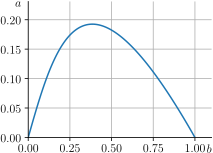
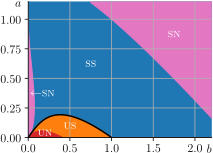
Something we could do is plot [zero-trace-enzyme] in \((b,a)\) parameter space. Solving this cubic is messy, but the line is drawn in 4.10(a), and it splits the plane into two regions. But what are these regions?
Look back at the trace/determinant stability table on page . A centre (what we’ve found) happens when you go from a stable spiral to an unstable spiral, or vice versa: the trace changes sign and so the centre corresponds to the parameter values where the equilibrium of the system changes stability. So this line also represents a bifurcation! On one side of the line the parameters are such that our equilibrium is a stable spiral, and the other side it is an unstable spiral. This scenario – a transition between an unstable and stable spiral – is a special type of bifurcation called a Hopf bifurcation and you will see it again next term.
Zooming out, you can do this type of analysis for all possible changes between types of equilibrium: you can see the regions you’d get on 4.10(b). We have only uncovered one small part of this complicated system, but it turns out to be the most important, because only this line represents the change from a stable to an unstable equilibrium: it represents the only bifurcation.
What we see in 4.9 – convergence to an oscillatory solution – is known as a limit cycle. You can prove that these must exist using the Poincaré–Bendixson theorem. Contrast this to Lotka–Volterra, where the oscillations (in particular their amplitudes) are highly dependent on their initial conditions. For this set of parameter values, all initial conditions approach a single closed orbit in phase space – the limit cycle. This indicates that there is a natural oscillatory behaviour of the system that is independent of the initial conditions. Perhaps this is what Volterra was after!
Spatial behaviour
The main ingredient missing from all our models so far is spatial dependence. For example, if our ladybirds and greenflies are originally in different parts of their ecosystem, they cannot interact. But the interaction constants (the ones proportional to \(xy\)) have no dependence on the position of the species; the model just assumes the species interact at a given frequency regardless. Our next aim must be to model the movement in space of the populations \(x\) and \(y\). With this in mind, we turn to the notion of diffusion.
The spruce budworm is covered in Murray, vol. I, chap. 1.2.
Enzyme kinetics are covered in Murray, vol. I, chap. 6.
5 Diffusion of populations
Thus far, we’ve used ODEs to generate mathematical models of population dynamics, biochemical reactions, and epidemiological phenomena (in the problems classes). In modelling these biological systems in this way, we have implicitly assumed that the phenomena that can occur can be described by functions of time that evolve deterministically. It’s not very hard to envision situations, including those we’ve already discussed, that may also have a spatial dependence. For example, one can easily imagine a population of bacteria or another kind of microorganism that may initially be localised in space, but owing to motility, it may spread over time. As a result, we would not only observe growth in the population size due to cell division, but also in the region of space which the population occupies.
From this point on, we’ll discuss how ODE models can be augmented to become partial differential equations (PDEs) that allow for both temporal and spatial evolution. In particular, we’ll be focusing on a class of PDEs known as reaction–diffusion equations where the motion of the species from one location to another is modelled by diffusion. We’ll examine cases where these equations permit travelling wave solutions (this term) as well as stationary patterns (next term), and discuss how these arise in biological models.
Modelling the behaviour of individual members of a species of a population is a significantly difficult task. How do we represent the motivation of each individual to move? The answer is ‘lots of intensive computational power’, but even this is limited. This is what drives us to concentrate on the bulk statistical behaviour of a large population.
Random movement is one of the simplest kinds of motion, and it is very common in nature. Briefly, the history of diffusion (and mathematical models of it) goes as follows. In 1822, Jean-Baptiste Joseph Fourier published the first example of what we know as the heat equation, as he was interested in describing how heat flows through different materials with different thermal conductivities (think of metal vs wood). Fourier derived this equation by an argument regarding the conservation of heat. We will see an analogue of this derivation using conservation of mass in 5.1.2 below. He also developed a method to find solutions to this equation given an initial heat distribution using sines and cosines, which we will do in 5.3.
Unrelated to this, in 1827 the botanist Robert Brown was looking through a microscope at pollen, and noticed that the particles of pollen seemed to jiggle around randomly. For many years these random movements were interesting, but difficult to study or understand. Finally, in 1905 Albert Einstein published a paper connecting this so-called ‘Brownian motion’ to the heat equation, providing a concrete connection between microscopic random movement and macroscopic diffusion2. We will see a version of this connection below in terms of random movement, but the key idea is that the diffusion equation (aka the heat equation) is intimately tied to the small-scale random movement of whatever is being modelled – either chemical species in water, cells or animals moving around randomly in an ecosystem, or even human migration in a new territory. Of course animals, people, and even molecules have other modes of transportation – advection in a fluid flow, or directed movement towards where we might want to be for instance – but diffusion is one of the simplest kinds of motion that can be found in nature, and it plays a crucial role in many kinds of biological systems.
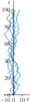
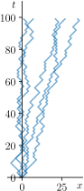
5.1 Random walks
5.1.1 Discrete random walks
As a concrete example, let us consider an individual on a line
initially at a position \(x=0\). The
individual moves left or right in integer steps with a probability of
moving right \(p\) and hence left of
\((1-p)\). After \(n\) steps a path can be encoded as
LRLLRRR…. If we repeat this process a large number of times
we get a set of paths – a set of random walks. In 5.1, we show five random walks of length
\(100\) for \(p=0.5\), \(0.6\) and \(0.9\) respectively. Here you see the
individual paths; in 5.2 we
see the same for 200 walks! For \(p=0.5\), the end positions are reasonably
evenly spread about \(x=0\). For \(p=0.6\), the story is similar except that
the spread is about the mean positions, \(x=2np-n\), and the spread is not equal
either side of this mean. This nonzero mean, indicated by the dotted
line, can be interpreted as a natural drift of the set of individuals
all starting at the same point due to the probability bias.
In 5.3, we see bar charts of the final displacement as a function of the total number of steps \(n\) for \(p=0.8\), a reasonably biased walk. As \(n\) increases, the distribution becomes gradually more symmetric. Indeed, since this is essentially a binomial distribution (with specific weighting) we should have expected this as we know that the binomial distribution \(B(n,p)\) approximates a normal distribution with mean \(np\) and variance \(np(1-p)\) as \(n\) gets large. We shall shortly see the importance of this example.
5.1.2 Continuum limit of random walks
In our course, we will focus on the continuum limit of such a model. Rather than making the steps of size \(1\), we specify them to be \(\mathrm{d}x\) which will be vanishingly small, and each step is taken in a time \(\mathrm{d}t\). We let \(c(x,t)\) be the continuous probability that, at a time \(t\), a particle (population member) reaches a displacement \(x\) at a time \(t\). This implies that at a time \(t-\mathrm{d}t\), the particle must have been at either \(x-\mathrm{d}x\) or \(x+\mathrm{d}x\). If \(p\) is the probability that the particle moves right, we therefore have \[\begin{equation} c(x,t)= p c(x-\mathrm{d}x,t-\mathrm{d}t) + (1-p) c(x+\mathrm{d}x,t-\mathrm{d}t). \end{equation}\] If we Taylor expand this to \(\mathcal{O}(\varepsilon^2)\), where \(\varepsilon= \max(\mathrm{d}t,\mathrm{d}x)\), we obtain \[\begin{align} c(x,t) &\approx p\left[c(x,t) - \mathrm{d}x \mathchoice{\frac{\partial c}{\partial x}}{\partial c/\partial x}{\partial c/\partial x}{\partial c/\partial x} - \mathrm{d}t \mathchoice{\frac{\partial c}{\partial t}}{\partial c/\partial t}{\partial c/\partial t}{\partial c/\partial t} + \frac{1}{2}\left( \mathrm{d}x^2 \mathchoice{\frac{\partial^2 c}{\partial x^2}}{\partial^2 c/\partial x^2}{\partial^2 c/\partial x^2}{\partial^2 c/\partial x^2} + 2 \, \mathrm{d}x \, \mathrm{d}t \mathchoice{\frac{\partial^2 c}{\partial x \partial t}}{\partial^2 c /\partial x \partial t}{\partial^2 c /\partial x \partial t}{\partial^2 c /\partial x \partial t} + \mathrm{d}t^2 \mathchoice{\frac{\partial^2 c}{\partial t^2}}{\partial^2 c/\partial t^2}{\partial^2 c/\partial t^2}{\partial^2 c/\partial t^2} \right)\right] \\ & \quad + (1-p)\left[c(x,t) + \mathrm{d}x \mathchoice{\frac{\partial c}{\partial x}}{\partial c/\partial x}{\partial c/\partial x}{\partial c/\partial x} - \mathrm{d}t \mathchoice{\frac{\partial c}{\partial t}}{\partial c/\partial t}{\partial c/\partial t}{\partial c/\partial t} + \frac{1}{2}\left( \mathrm{d}x^2 \mathchoice{\frac{\partial^2 c}{\partial x^2}}{\partial^2 c/\partial x^2}{\partial^2 c/\partial x^2}{\partial^2 c/\partial x^2} - 2 \, \mathrm{d}x \, \mathrm{d}t \mathchoice{\frac{\partial^2 c}{\partial x \partial t}}{\partial^2 c /\partial x \partial t}{\partial^2 c /\partial x \partial t}{\partial^2 c /\partial x \partial t} + \mathrm{d}t^2 \mathchoice{\frac{\partial^2 c}{\partial t^2}}{\partial^2 c/\partial t^2}{\partial^2 c/\partial t^2}{\partial^2 c/\partial t^2} \right)\right] \nonumber\\ &= c(x,t) + (1-2p)\mathrm{d}x \mathchoice{\frac{\partial c}{\partial x}}{\partial c/\partial x}{\partial c/\partial x}{\partial c/\partial x} - \mathrm{d}t \mathchoice{\frac{\partial c}{\partial t}}{\partial c/\partial t}{\partial c/\partial t}{\partial c/\partial t} + \frac{1}{2}\mathrm{d}x^2 \mathchoice{\frac{\partial^2 c}{\partial x^2}}{\partial^2 c/\partial x^2}{\partial^2 c/\partial x^2}{\partial^2 c/\partial x^2} - (1-2p)\, \mathrm{d}x \, \mathrm{d}t \mathchoice{\frac{\partial^2 c}{\partial x \partial t}}{\partial^2 c /\partial x \partial t}{\partial^2 c /\partial x \partial t}{\partial^2 c /\partial x \partial t} + \frac12 \mathrm{d}t^2 \mathchoice{\frac{\partial^2 c}{\partial t^2}}{\partial^2 c/\partial t^2}{\partial^2 c/\partial t^2}{\partial^2 c/\partial t^2}, \end{align}\] so that to order \(\mathcal{O}(\varepsilon^2)\), \[\begin{equation} \mathchoice{\frac{\partial c}{\partial t}}{\partial c/\partial t}{\partial c/\partial t}{\partial c/\partial t} = (1-2 p)\mathchoice{\frac{\mathrm{d}x}{\mathrm{d}t}}{\mathrm{d}x/\mathrm{d}t}{\mathrm{d}x/\mathrm{d}t}{\mathrm{d}x/\mathrm{d}t}\mathchoice{\frac{\partial c}{\partial x}}{\partial c/\partial x}{\partial c/\partial x}{\partial c/\partial x} + \frac12 \frac{(\mathrm{d}x)^2}{\mathrm{d}{t}} \mathchoice{\frac{\partial^2 c}{\partial x^2}}{\partial^2 c/\partial x^2}{\partial^2 c/\partial x^2}{\partial^2 c/\partial x^2} - (1-2p)\,\mathrm{d}x\mathchoice{\frac{\partial^2 c}{\partial x \partial t}}{\partial^2 c /\partial x \partial t}{\partial^2 c /\partial x \partial t}{\partial^2 c /\partial x \partial t} + \frac12 \mathrm{d}t \mathchoice{\frac{\partial^2 c}{\partial t^2}}{\partial^2 c/\partial t^2}{\partial^2 c/\partial t^2}{\partial^2 c/\partial t^2}. \end{equation}\] Taking the limit \(\mathrm{d}x\to 0\) and \(\mathrm{d}t\to 0\), the final two terms will vanish. The coefficient \((1-2p)\,\mathchoice{\frac{\mathrm{d}x}{\mathrm{d}t}}{\mathrm{d}x/\mathrm{d}t}{\mathrm{d}x/\mathrm{d}t}{\mathrm{d}x/\mathrm{d}t}\) has the dimensions of a velocity, so we set \((2p-1)\,\mathchoice{\frac{\mathrm{d}x}{\mathrm{d}t}}{\mathrm{d}x/\mathrm{d}t}{\mathrm{d}x/\mathrm{d}t}{\mathrm{d}x/\mathrm{d}t} = v\) (with the flipped sign so that it points in the positive direction for high \(p\) biases) and we define a constant \(D\), \[\begin{equation} D = \frac12 \frac{(\mathrm{d}x)^2}{\mathrm{d}t}, \end{equation}\] which we call the diffusion constant for reasons which will follow. One should note that the ratio \(v/D\) will diverge as \(\mathrm{d}x \to 0\) unless \(p\) is very close to \(1/2\), so as the step size gets smaller, the velocity term (the so-called advective term) dominates. Then we have \[\begin{equation} \label{advectiondiffusion} \mathchoice{\frac{\partial c}{\partial t}}{\partial c/\partial t}{\partial c/\partial t}{\partial c/\partial t} = -v\mathchoice{\frac{\partial c}{\partial x}}{\partial c/\partial x}{\partial c/\partial x}{\partial c/\partial x} + D \mathchoice{\frac{\partial^2 c}{\partial x^2}}{\partial^2 c/\partial x^2}{\partial^2 c/\partial x^2}{\partial^2 c/\partial x^2}, \end{equation}\] a partial differential equation determining the behaviour of \(c(x,t)\). Note that if \(p=1/2\), there is no velocity: we shall come to associate this term with a drift. The physical description of the term, \(D\), can be seen by deriving [advectiondiffusion] in a continuum setting, as we’ll do now.
5.2 The advection–diffusion equation
Let \(S\) be a surface, surrounding a volume \(V\), containing a density \(c(\mathbfit{x},t)\). This could be a population density or maybe a chemical density. Basic conservation of mass (see 5.4) says that \[\begin{equation} \mathchoice{\frac{\mathrm{d}}{\mathrm{d}t}}{\mathrm{d}/\mathrm{d}t}{\mathrm{d}/\mathrm{d}t}{\mathrm{d}/\mathrm{d}t}\int_{V}c(\mathbfit{x},t) \, \mathrm{d}V = -\int_{S}\mathbfit{J}\cdot \mathrm{d}\mathbfit{S} + \int_{V} f \, \mathrm{d}V, \end{equation}\] where \(\mathbfit{J}\) is the flow of \(c(\mathbfit{x},t)\) through a surface element \(\mathrm{d}\mathbfit{S}\), and \(f\) is some source of \(c(\mathbfit{x},t)\) in the body \(V\) (ants coming up through the ground or a chemical reaction!). Differentiating under the integral on the left-hand side (a process also known as Leibniz’ integral rule or the Reynolds transport theorem), we obtain \[\begin{equation} \mathchoice{\frac{\mathrm{d}}{\mathrm{d}t}}{\mathrm{d}/\mathrm{d}t}{\mathrm{d}/\mathrm{d}t}{\mathrm{d}/\mathrm{d}t}\int_{V}c(\mathbfit{x},t) \, \mathrm{d}V = \int_{V}\mathchoice{\frac{\partial c}{\partial t}}{\partial c/\partial t}{\partial c/\partial t}{\partial c/\partial t}\,\mathrm{d}V + \int_{S}c(x,t)\mathbfit{v}\cdot \mathrm{d}{\mathbfit{S}} \end{equation}\] where \(\mathbfit{v}\) is the local velocity field of the changing shape of the surface \(S\). Using the divergence theorem on the surface integrals we have, altogether, \[\begin{equation} \int_{V}\left[\mathchoice{\frac{\partial c}{\partial t}}{\partial c/\partial t}{\partial c/\partial t}{\partial c/\partial t}+ \boldsymbol{\nabla}\cdot (c \mathbfit{v}) + \boldsymbol{\nabla}\cdot \mathbfit{J} - f \right]\mathrm{d}{V} =0. \end{equation}\] If we assume \(c(\mathbfit{x},t)\) is sufficiently differentiable, we can shrink \(V\) infinitesimally to obtain the general advection–diffusion law, \[\begin{equation} \label{adv-diff-law} \mathchoice{\frac{\partial c}{\partial t}}{\partial c/\partial t}{\partial c/\partial t}{\partial c/\partial t} = - \boldsymbol{\nabla}\cdot (c \mathbfit{v}) - \boldsymbol{\nabla}\cdot \mathbfit{J} + f. \end{equation}\] In this case, \(\mathbfit{v}\) is the velocity of motion of the concentration \(c(\mathbfit{x},t)\) at the point \(\mathbfit{x}\) and time \(t\). The term \(- \boldsymbol{\nabla}\cdot (c \mathbfit{v})\) is the advection term, which is associated with motion of the concentration; and the term \(\boldsymbol{\nabla}\cdot \mathbfit{J}\) is the diffusion (or diffusive flux), which is associated with the spreading out of the density.
In this form the equation is not complete (too many unknowns \(f\), \(\mathbfit{v}\), \(c\), \(\mathbfit{J}\) for one equation). So we have to make some further assumptions; these are called constitutive laws. For example, let’s say \(\mathbfit{v}\) is constant – that is to say the concentration’s centre of mass is moving with a constant velocity – and we assume Fick’s law: \[\begin{equation} \label{fick} \mathbfit{J} = -D\boldsymbol{\nabla}c. \end{equation}\] Here, \(D\) is a constant, so putting it all together, we have the advection–diffusion equation, \[\begin{equation} \mathchoice{\frac{\partial c}{\partial t}}{\partial c/\partial t}{\partial c/\partial t}{\partial c/\partial t} = -\boldsymbol{\nabla}\cdot(c\mathbfit{v}) + D\nabla^2 c + f, \label{adv-diff-ndim} \end{equation}\] where \(\nabla^2 c = \boldsymbol{\nabla}\cdot \boldsymbol{\nabla}c\) is the Laplacian operator. The one-dimensional version of this equation (with \(f=0\)) is just [advectiondiffusion], so we come to relate the velocity, \(\mathbfit{v}\), with the probability drift. Now we have an equation for \(c\) alone which is complete.
Fick’s law of diffusion
Fick’s law, [fick], assumes that the density, \(c\), moves from a region of high concentration to low. For example, if we have a small (continuous) source of heat at the centre of a cold room, this heat will gradually diffuse radially outwards to fill the room until the room is at a constant temperature and the gradient vanishes. The constant, \(D\), which has units of area per unit time, is a measure of this expansion rate.
The law was originally proposed in 1855 by Adolf Fick, whose experiments concerned the diffusion of salt through tubes of water. A more modern application is the diffusion of drugs in the vitreous body of the human eye. In all cases, the diffusive material – be it a gas, salt chemical or population – is composed of microscopic bodies which are in randomised motion, often colliding. Thus when confined to a small space the bodies will tend to move apart.
We must stress that while diffusion does lead to motion, in the spreading of the body, it is different from advection. Advection alone is movement of the concentration while the concentration area is held fixed. When \(\mathbfit{v}=\mathbf{0}\), [adv-diff-ndim] becomes the diffusion equation, or heat equation, with the extra source term \(f\), \[\begin{equation} \mathchoice{\frac{\partial c}{\partial t}}{\partial c/\partial t}{\partial c/\partial t}{\partial c/\partial t} = D\nabla^2 c + f. \end{equation}\]
The source term, \(f\), can be exactly the sort of term we have already seen in our ODE models. We can have two populations, \(u\) and \(v\), both individually satisfying the diffusion equation, but with Lotka–Volterra source terms: \[\begin{align} \label{spatial-lotka-volterra} \mathchoice{\frac{\partial u}{\partial t}}{\partial u/\partial t}{\partial u/\partial t}{\partial u/\partial t} &= D_1 \nabla^2 u + u- uv,\\ \mathchoice{\frac{\partial v}{\partial t}}{\partial v/\partial t}{\partial v/\partial t}{\partial v/\partial t} &= D_2 \nabla^2 v +\gamma(-v+ uv). \end{align}\] If we replaced the intraspecies growth/decay terms with logistic growth terms, and made the interspecies term negative in both equations, then we would have the spatial competitive Lotka–Volterra model. We will analyse this system in [chap-CL-pursuit-evasion], but first we have to ask ourselves: what do solutions to these equations look like?
5.3 The 1D diffusion equation on a bounded domain
In our thought experiment at the start of this chapter, represented by the random walks in 5.2, we started with a large number of particles at a single point. Over time their random motion led them to spread out: this is the diffusive element of the system. In cases (b) and (c), the probability bias meant there was a net motion of the paths in addition to the diffusive spreading. This is the equivalent of advective motion with the probability bias dictating its ‘velocity’.
We try to replicate this as a continuous system. Let’s start by taking a look at a one-dimensional version of the diffusion part of our problem, with no extra source term, but on a bounded domain.
Consider the function \(u(x,t)\) which satisfies \[\begin{equation} \label{heat-US-eqn} \mathchoice{\frac{\partial u}{\partial t}}{\partial u/\partial t}{\partial u/\partial t}{\partial u/\partial t} = \mathchoice{\frac{\partial^2 u}{\partial x^2}}{\partial^2 u/\partial x^2}{\partial^2 u/\partial x^2}{\partial^2 u/\partial x^2}, \quad x \in [0,L], \quad t > 0, \end{equation}\] with Neumann (no-flux) boundary conditions, \[\begin{equation} \label{BCs} \mathchoice{\frac{\partial u}{\partial x}}{\partial u/\partial x}{\partial u/\partial x}{\partial u/\partial x}(0,t) = \mathchoice{\frac{\partial u}{\partial x}}{\partial u/\partial x}{\partial u/\partial x}{\partial u/\partial x}(L,t) = 0, \end{equation}\] and the initial condition, \[\begin{equation} \label{ICs} u(x,0) = u_0(x). \end{equation}\]
PDEs are hard, and ODEs are easier, so a common technique for solving PDEs is to reduce them to ODEs. We can compute \(u\) by using a technique known as separation of variables which does exactly this. We proceed by writing \(u = X(x)T(t)\) so that our function is the product of two single-variable functions. Substituting this in, we find \[\begin{equation} \mathchoice{\frac{\partial}{\partial t}}{\partial/\partial t}{\partial/\partial t}{\partial/\partial t}[X(x)T(t)] = X(x)T'(t), \qquad \mathchoice{\frac{\partial^2 }{\partial x^2}}{\partial^2 /\partial x^2}{\partial^2 /\partial x^2}{\partial^2 /\partial x^2}[X(x)T(t)] = X''(x)T(t), \end{equation}\] and hence \[\begin{equation} X(x)T'(t) = X''(x)T(t). \end{equation}\] We now rearrange this equation to get \[\begin{equation} \frac{T'(t)}{T(t)} = \frac{X''(x)}{X(x)}. \end{equation}\] This doesn’t look helpful yet, but the key idea is that everything on the left-hand side is a function of \(t\) only, and everything on the right-hand side is a function of \(x\) only. So if we fix some \(t\) and vary \(x\), the right-hand side can’t change its value (because \(t\) is fixed), and vice-versa. This implies the equation is equal to a constant: \[\begin{equation} \frac{T'(t)}{T(t)} = \frac{X''(x)}{X(x)} = \lambda. \end{equation}\] Now if we look at the boundary conditions, [BCs], we see that \(X(x)\) ‘inherits’ these boundary conditions. To see this, substitute in \(u = X(x)T(t)\) and note that these conditions must be true for all \(x,t\), and we generally want \(X\) and \(T\) to be nonzero. The initial conditions are messier, as these take the form \(T(0)X(x) = u_0(x)\), so they do not clearly separate into a time and a space part, so we will deal with them later.
So we have the following two ODE problems: \[\begin{equation} \label{T-US-eq} T'(t) = \lambda T(t), \end{equation}\] and \[\begin{equation} \label{X-US-eq} X''(x) = \lambda X(x), \quad X'(0)=X'(L)=0. \end{equation}\] While we don’t know an initial condition yet for \(T\), it is an initial value problem, and we know its solution: \(T = C\mathrm{e}^{\lambda t}\), where \(C\) will depend on the initial condition.
The problem for \(X\) is a second order ODE with constant coefficients, and we can find the solutions by using the auxiliary equation and then using \(\lambda\) to deal with the boundary conditions. This turns out to have three cases depending on if \(\lambda\) is positive, zero, or negative.
Case I, \(\lambda > 0\):
If we say \(\lambda = \alpha^2\), you can write down the auxiliary equation and solve the ODE to find that \[\begin{equation} X(x) = A\sinh(\alpha x) + B\cosh(\alpha x). \label{cosh-sinh-form} \end{equation}\] Does this satisfy the boundary conditions? Well, \[\begin{equation} X'(x) = A\alpha\cosh(\alpha x) + B\alpha\sinh(\alpha x), \end{equation}\] and trying to apply the boundary conditions, given that \(\alpha \neq 0\), \[\begin{align} X'(0) = 0 &\implies A\alpha = 0 &\implies A = 0,\\ X'(L) = 0 &\implies B\alpha\sinh(\alpha L) = 0 \; &\implies B = 0. \end{align}\] So we don’t have solutions unless \(A=B=0\), which is useless and so we throw away this case.
The \(\sinh\) and \(\cosh\) form of [cosh-sinh-form] works out nicely for us here because one of the boundary conditions is at \(0\). If instead we say \(X(x) = A\mathrm{e}^{\alpha x} + B\mathrm{e}^{-\alpha x}\), then \(X'(x) = A\alpha\mathrm{e}^{\alpha x} - B\alpha\mathrm{e}^{-\alpha x}\), which we can evaluate at \(x=0\) and \(L\). We find the linear system of equations, \[\begin{align} A \alpha - B \alpha & = 0,\\ A \alpha \mathrm{e}^{\alpha L} - B \alpha \mathrm{e}^{-\alpha L} & = 0. \end{align}\] Writing this as a matrix equation we have \[\begin{equation} \underbrace{\begin{pmatrix} 1 &-1\\ \mathrm{e}^{\alpha L} &-\mathrm{e}^{-\alpha L} \end{pmatrix}}_{\mathsfbfit{M}} \begin{pmatrix} A \\ B \end{pmatrix} = \begin{pmatrix} 0 \\0 \end{pmatrix}. \end{equation}\] If you remember your favourite class, linear algebra, you’ll recall that this homogeneous system only has solutions if \(\det(\mathsfbfit{M})=0\). Complete the analysis to show that \(\det(\mathsfbfit{M})>0\) and so we can throw away this solution.
Case II, \(\lambda=0\):
In this case, we can just integrate [X-US-eq] twice to get \(X = Ax + B\). Applying the boundary conditions, we require \(A = 0\), so that \(X = B\) being an arbitrary constant is a solution.
Case III, \(\lambda<0\):
We can write \(\lambda = -\alpha^2\) with \(\alpha \neq 0\), and see that \(X\) satisfies, \[\begin{equation} X''(x) + \alpha^2 X(x) = 0, \end{equation}\] which is the equation of the harmonic oscillator (or simple harmonic motion). This can again be solved using the auxiliary equation, and we find complex roots which lead to solutions of the form \[\begin{equation} X(x) = A \sin(\alpha x) + B \cos(\alpha x). \end{equation}\] By applying the first boundary condition that \(X'(0) = 0\), we get \(A=0\). By applying the second we get \(X'(L) = 0 = -\alpha B \sin(\alpha L)\). If we want nontrivial solutions to this (that is, neither \(B\) nor \(\alpha\) being zero), we must have \(\sin(\alpha L) = 0\). We know that \(\sin(y)\) has zeros for \(y = 0, \pm\pi, \pm2\pi, ...\) and in general for \(y = \pm n\pi\) for all whole numbers \(n\). So we must have that \[\begin{equation} \alpha L = n \pi \implies \alpha = \frac{n \pi}{L} \implies \lambda = -\left(\frac{n \pi}{L}\right)^2. \end{equation}\] Finally we note that this case can subsume the previous one if we allow \(n=0\) (so \(\alpha=0=\lambda\)), as \(B\cos(0) = B\).
By combining the solutions for \(T\)
and \(X\) above (and combining the
constants in front into one constant \(C\)), we have candidate solutions given by
\[\begin{equation}
\label{sol}
u(x,t) = C\mathrm{e}^{\lambda t}\cos(x\sqrt{-\lambda}) =
C\mathrm{e}^{-(n \pi/L)^2t}\cos\left(\frac{n \pi x}{L}\right), \quad
n=0,1,2,\dots
\end{equation}\] This solution satisfies the original PDE (check
this by plugging it in!) and the boundary conditions, but it does not
satisfy the initial conditions unless \(u_0(x)\) is exactly equal to a scalar times
one of these cosine functions. So what do we do? Panic!
OK, it turns out we can use the linearity of the PDE, and the fact that we have ‘many’ candidate solutions to come up with a solution for any \(u_0(x)\) (at least satisfying some abstract integrability constraints). First, check that if \(u = U_1(x,t)\) and \(u = U_2(x,t)\) satisfy [heat-US-eqn], then \(u = C_1U_1(x,t) + C_2U_2(x,t)\) also satisfies this equation, (and similarly for the boundary conditions, [BCs]). This property, probably quite familiar to you by this stage, is the principle of superposition which will allow us to add together many solutions to construct one which fits our initial data. This principle also plays an important role in quantum mechanics, and will be seen again next term in a more abstract setting.
Since we have that \(u\) given by [sol] is a solution for any \(n\), we can take a linear combination of these for all \(n\) as \[\begin{equation} \label{full-US-sol} u(x,t) = \sum_{n=0}^\infty C_n \mathrm{e}^{-(n\pi/L)^2t}\cos\left(\frac{n \pi x}{L}\right). \end{equation}\] We have to assume that the \(C_n\) decay quickly enough for large \(n\) for this infinite sum to make sense (i.e. converge), but we will assume this can be shown. So how do we compute the \(C_n\) given an initial condition, \(u_0\)? So far we have \[\begin{equation} \label{IC-US-eqn} u(x,0) = \sum_{n=0}^\infty C_n \cos\left(\frac{n \pi x}{L}\right) = u_0(x). \end{equation}\] Now, we will use the following orthogonality of this cosine series: \[\begin{equation} \label{cos-orthog} \int_0^L \cos\left(\frac{n \pi x}{L}\right)\cos\left(\frac{m \pi x}{L}\right) \mathrm{d}x = \begin{cases} L \quad &\text{for } m = n = 0,\\ L/2 \quad &\text{for } m=n>0,\\ 0 \quad &\text{for } m\neq n. \end{cases} \end{equation}\]
You might remember seeing this first in the context of deriving the coefficients in a Fourier series. The intuition for the \(n\neq m\) case is that when you multiply two functions together, graphically you have a drawing of one function trapped within the envelope of the other. Here, with \(n=2\), \(m=3\), inside the envelope of \(n=2\):
The shaded area under the curve, representing the integral – actually an inner product in a Hilbert space – cancels out. To confirm [cos-orthog] properly, you should compute the integrals. The way in is to use either your favourite \(\cos(A+B)\) formulae, or to write the \(\cos\) terms as complex exponentials.
How does this property help us? Well, take equation [IC-US-eqn] and multiply it by \(\cos(m \pi x/L)\) for some \(m=0,1,2,\dots\), and then integrate the equation from \(x=0\) to \(x=L\). By this orthogonality property (and cheekily interchanging the sum and the integral, which you can justify in an analysis class), you get that every term in the sum vanishes except one. In equations: \[\begin{align} \int_0^L\cos\left(\frac{m \pi x}{L}\right)\sum_{n=0}^\infty C_n \cos\left(\frac{ n \pi x}{L}\right)\mathrm{d}x & \\ = \sum_{n=0}^\infty C_n \int_0^L\cos\left(\frac{m \pi x}{L}\right)\cos\left(\frac{n \pi x}{L}\right) \mathrm{d}x & = \int_0^L\cos\left(\frac{m \pi x}{L}\right)u_0(x) \, \mathrm{d}x. \end{align}\] So you see that each term in the infinite sum with \(m\neq n\) drops out because of this orthogonality property. So we’re left with \[\begin{align} C_m \frac{L}{2} & = \int_0^L\cos\left(\frac{m \pi x}{L}\right)u_0(x) \, \mathrm{d}x, \quad (m>0) \\ \text{or} \quad C_0 L &= \int_0^L u_0(x) \, \mathrm{d}x \end{align}\] which we can rearrange to compute \(C_m\) for each \(m\). Finally, with these values of \(C_m\), we have a complete solution, [full-US-sol], to the original PDE and the boundary conditions.
An example solution is shown in 5.5 for \(u_0(x) = \delta(x-L/2)\), where \(\delta\) is the Dirac delta function. We can see the rapid spreading out of \(u\), until \(u\) has ‘settled’.
You will remember the Dirac delta from AMV. The Dirac delta is a function which can be loosely thought of as being zero everywhere, except at the origin, where it is infinite. It is constrained by the property that (over the real line, say), \[\begin{equation} \int_{-\infty}^\infty \delta(x) \, \mathrm{d}x = 1. \end{equation}\] This is technically a distribution rather than a function, but that’s not important right now. We can define \(\delta(\mathbfit{x})\) for any \(V\subset \mathbb{R}^n\) as the function such that, for any function \(f(\mathbfit{x})\), \[\begin{equation} \label{deltafunc} \int_{V}\delta(\mathbfit{x} - \mathbfit{s})f(\mathbfit{s})\,\mathrm{d}{\mathbfit{s}} = \left\{ \begin{array}{cl} f(\mathbfit{x}) & \mbox{if } \mathbfit{x} \in V,\\ 0 & \mbox{if } \mathbfit{x} \not\in V. \end{array} \right. \end{equation}\] That is to say, so long as you are integrating over a region that contains your point \(\mathbfit{x}\), the integral of the Dirac delta multiplied by \(f(\mathbfit{s})\) with respect to \(\mathbfit{s}\) is only the value of \(f\) at \(\mathbfit{x}\): \(f(\mathbfit{x})\).
What about Dirichlet boundary conditions?
If we replace [BCs] with \[\begin{equation} u(0,t) = u(L,t) = 0, \end{equation}\] then most of the analysis above goes through, except that \(\lambda=0\) is no longer admissible (because \(X(x) = Ax + B\) only has the trivial solution \(A=B=0\) with these boundary conditions), and instead of \(\cos\) we use \(\sin\) throughout. Hence the sum in [full-US-sol] starts at \(n=1\) rather than \(n=0\). One can also consider periodic and Robin conditions and proceed exactly as above to find how these spatial functions change – we will do some of this next term.
In Additional Problem Sheet 2 you will solve a diffusion problem with Dirichlet boundary conditions.
The boundary value problem we had to solve, [X-US-eq], can be called an eigenvalue problem, with eigenvalues that we found, \(\lambda_n = n^2 \pi^2/L^2\), and with associated eigenfunctions \(X_n(x) = \cos(n\pi x /L)\). The expansion \(\sum_n C_n X_n(x)\) is an example of a generalised Fourier series.
If we write the linear operator \(\mathchoice{\frac{\mathrm{d}^2 }{\mathrm{d}x^2}}{\mathrm{d}^2 /\mathrm{d}x^2}{\mathrm{d}^2 /\mathrm{d}x^2}{\mathrm{d}^2 /\mathrm{d}x^2}\) as \(\mathcal{L}\), then [X-US-eq] becomes \(\mathcal{L}X = -\lambda X\). Furthermore, we know that the eigenfunctions are orthogonal with respect to the inner product on a Hilbert space, \((f,g) = \int_0^L f(x) g(x) \mathrm{d}x\).
This is parallel with the matrix eigenvalue problem, \(\mathsfbfit{A}\mathbfit{x} = \lambda\mathbfit{x}\). In an inner product (Hilbert) space, a real symmetric matrix \(\mathsfbfit{A}\) has real eigenvalues. Eigenvectors associated with distinct eigenvalues are orthogonal. The equivalent of a real symmetric matrix for differential operators is a self-adjoint linear operator, i.e. one that satisfies \((f,\mathcal{L}g) = (\mathcal{L}f, g)\) for all \(f,g\).
Asking whether eigenvalue problems in general can be written in terms of self-adjoint linear operators leads us down the road to Sturm–Liouville theory.
5.4 The 1D diffusion equation on an unbounded domain
Now let’s take a look at our problem on an unbounded domain and with a diffusion constant, \[\begin{equation} \mathchoice{\frac{\partial u}{\partial t}}{\partial u/\partial t}{\partial u/\partial t}{\partial u/\partial t} = D \mathchoice{\frac{\partial^2 u}{\partial x^2}}{\partial^2 u/\partial x^2}{\partial^2 u/\partial x^2}{\partial^2 u/\partial x^2}, \quad x\in(-\infty,\infty), \quad t>0, \label{diffprob} \end{equation}\] with boundary conditions \[\begin{equation} u(\pm\infty,t) = 0, \end{equation}\] and initial condition \[\begin{equation} u(x,0) = \delta(x), \end{equation}\] the return once again of the delta function, representing a point density at the origin.
On an unbounded domain, the normal way to solve this equation is to transform it using the Fourier transform.
5.4.1 The Fourier transform
The Fourier transform of a function \(f(x)\), denoted \(\mathcal{F}[f(x)](k)\), is given by \[\begin{equation} \mathcal{F}[f(x)](k) = \frac{1}{\sqrt{2\pi}}\int_{-\infty}^{\infty}\mathrm{e}^{-\mathrm{i}k x}f(x)\,\mathrm{d}x. \end{equation}\] Its inverse, \(\mathcal{F}^{-1}[g(k)](x)\), is \[\begin{equation} \mathcal{F}^{-1}[g(k)](x) = \frac{1}{\sqrt{2\pi}}\int_{-\infty}^{\infty}\mathrm{e}^{\mathrm{i}k x}g(k)\,\mathrm{d}{k}. \end{equation}\] You might have seen a slightly different version of these where only one of the terms has a \(1/2\pi\) factor, but either way, crucially it can be shown that \[\begin{equation} \mathcal{F}^{-1}[\mathcal{F}[f(x))]] = f(x). \end{equation}\] You’re not expected to derive this result, merely to be aware of it. The critical property of the Fourier transform which makes it of use in solving PDEs is its effect on derivatives. The following result can be fairly easily demonstrated: \[\begin{equation} \label{fderiv} \mathcal{F}\left[\mathchoice{\frac{\partial^{n} f}{\partial x^{n}}}{\partial^{n} f/\partial x^{n}}{\partial^{n} f/\partial x^{n}}{\partial^{n} f/\partial x^{n}}\right](k) = (\mathrm{i}k)^{n}\mathcal{F}[f(x)](k). \end{equation}\] Again, you don’t need to derive this result, you just need to know how to apply it.
5.4.2 Solving the diffusion equation
Applying [fderiv] to the first term in [diffprob] we obtain \[\begin{equation} \mathchoice{\frac{\partial\mathcal{F}[u](k)}{\partial t}}{\partial\mathcal{F}[u](k)/\partial t}{\partial\mathcal{F}[u](k)/\partial t}{\partial\mathcal{F}[u](k)/\partial t} = -Dk^2\mathcal{F}[u](k). \end{equation}\] Just like that, we have transformed a second order PDE into a first order ODE. Its solution is clearly an exponential, \[\begin{equation} \mathcal{F}[u(x,t)](k) = \mathcal{F}[u(x,0)](k)\mathrm{e}^{-D k^2 t}. \end{equation}\]
To get the real space solution, we must apply the inverse operator. This is the price we pay for using the transform to simplify the system. This is not always straightforward, but in this case this is not so problematic. First we must find the initial condition \(\mathcal{F}[c(x,0)](k)\), which, from [deltafunc], is the Fourier transform of the Dirac delta function, \[\begin{equation} \frac{1}{\sqrt{2\pi}}\int_{-\infty}^{\infty}\delta(x)\mathrm{e}^{-\mathrm{i}kx}\,\mathrm{d}x= \frac{1}{\sqrt{2\pi}}. \end{equation}\] Thus our final solution is \[\begin{equation} u(x,t) = \mathcal{F}^{-1}[\mathcal{F}[u(x,t)]] = \frac{1}{2\pi}\int_{-\infty}^{\infty}\mathrm{e}^{\mathrm{i}kx}\mathrm{e}^{-D k^2 t}\,\mathrm{d}{k}. \end{equation}\] In order to perform this integral we note the following known result: \[\begin{equation} \mathcal{F}[\mathrm{e}^{-\alpha x^2}](k) = \frac{1}{\sqrt{2\alpha}}\mathrm{e}^{-k^2/4\alpha}. \end{equation}\] We therefore have \[\begin{equation} \label{fundamentalsol} u(x,t) = \frac{1}{2 \sqrt{\pi Dt}} \mathrm{e}^{-x^2/4Dt}. \end{equation}\]
Ask yourself: Why I was able to use a forward transform \(\mathcal{F}\) result for an inverse \(\mathcal{F}^{-1}\) operation?
This tells us the density spreads out over time following a Gaussian distribution, as depicted in 5.6.
How is this solution different to in the bounded case?
There are questions on Additional Problem Sheet 2 on the Fourier transform. In addition, the extra reading at the end of this chapter has a link to a number of example solutions to a couple of partial differential equations solved using Fourier transform methods (the wave equation and the telegraph equation).
As we remarked at the start of the chapter, the limit of the random walk as the step size reduces to zero is a Gaussian distribution. We then showed, using a slightly hand-wavy argument, that a limit of this distribution was the advection–diffusion equation. We have now squared the circle so to speak, in the sense that we see that the diffusion equation gives Gaussian-like spreading of a point source. In fact it was Einstein (and Marian Smoluchowski) who first made this link precise at the turn of the previous century.
This solution, [fundamentalsol], is known as the fundamental solution of the diffusion equation. Why is it so fundamental? Because it allows us to answer the question ‘what about different initial conditions?’.
5.4.3 Fundamental solutions (or Green’s functions)
Why is a delta function which spreads out over time called the fundamental solution? In general we might have some linear differential operator \(\mathcal{L}\). When acting on a function \(u(\mathbfit{x},t)\) we want to solve the following initial value problem on a domain \(V\) with boundary \(\partial V\): \[\begin{equation} \label{fullprob} \mathcal{L}u(\mathbfit{x},t) = 0,\quad u(\mathbfit{x},0) = g(\mathbfit{x}),\quad u(\partial{V},t) = 0, \end{equation}\] that is to say, \(g(\mathbfit{x})\) is our initial condition.
For example, the diffusion equation operator is \(\mathcal{L}= \mathchoice{\frac{\partial}{\partial t}}{\partial/\partial t}{\partial/\partial t}{\partial/\partial t}- D\nabla^2\), so that \[\begin{equation} \mathcal{L}u(\mathbfit{x},t) = \mathchoice{\frac{\partial u}{\partial t}}{\partial u/\partial t}{\partial u/\partial t}{\partial u/\partial t} -D\nabla^2 u = 0. \end{equation}\] \(\mathcal{L}\) is linear so for \(a,b\) scalar constants and \(u,v\) scalar densities, \[\begin{equation} \mathcal{L}(au+bv) = a\mathcal{L}u + b\mathcal{L}v. \end{equation}\] The fundamental solution or Green’s function of \(\mathcal{L}\) can be defined as the solution, \(u_f\), to \[\begin{equation} \label{fundprob} \mathcal{L}u_f(\mathbfit{x},t) = 0, \quad u_f(\mathbfit{x},0) = \delta(\mathbfit{x}), \quad u_f(\partial{V},t) = 0, \end{equation}\] where specifically the initial condition is the delta function. See how our setup for the diffusion equation, [diffprob], is in this form.
We can relate the two initial conditions by the delta function identity, \[\begin{equation} \label{deltaid} \int_{V}\delta(\mathbfit{x}- \mathbfit{s})g(\mathbfit{s})\,\mathrm{d}\mathbfit{s} = g(\mathbfit{x}). \end{equation}\] This combination of the two functions \(\delta\) and \(g\) on the left-hand is known as a convolution. We now propose that our solution \(u\) can be written as another convolution: \[\begin{equation} \label{gensol} u(\mathbfit{x},t) = \int_{V}u_f(\mathbfit{x}-\mathbfit{s},t) g(\mathbfit{s})\,\mathrm{d}\mathbfit{s}. \end{equation}\] To see this satisfies \(\mathcal{L}u = 0\), we note that, since the linear operator acts on \((\mathbfit{x},t)\) but the integral is over \(\mathbfit{s}\), we can take it inside, \[\begin{equation} \label{lingreen} \mathcal{L}u(\mathbfit{x},t) = \int_{V}g(\mathbfit{s})\underbrace{\mathcal{L}u_f(\mathbfit{x}-\mathbfit{s},t)}_{=\,0}\,\mathrm{d}\mathbfit{s} = 0. \end{equation}\] In addition, as \(\lim_{t \to 0} u_f = \delta(\mathbfit{x})\), we will obtain the right initial condition through [deltaid]. Thus, solving [fullprob] can be reduced to solving the fundamental problem, [fundprob]: generally an easier task! Integrating [gensol] then leaves us with the full solution. This can often be of benefit for analytic solutions and asymptotic approximations.
Green’s functions for linear homogeneous PDEs can also be defined as the solution to \(\mathcal{L}u_f(\mathbfit{x},t) = \delta(\mathbfit{x})\delta(t)\), with appropriate boundary conditions: this is closer to what you saw last year. For the systems we will look at here, this definition is equivalent to the one above through Duhamel’s principle. We are also using the fact that \(\mathcal{L}\) is translation invariant to assume \(\delta\) acts at \(x=0\) only.
Furthermore, the terms fundamental solution and Green’s function are broadly used interchangeably in the literature. Some authors prefer using ‘fundamental solution’ for the special case where the domain \(V = \mathbb{R}^n\). This is the only case we will be interested in, so we will use the term ‘fundamental solution’ without confusion.
5.4.4 Solving the diffusion equation with different initial conditions
Let’s say we wish to solve the following problem: \[\begin{equation} \label{rectheat} \mathchoice{\frac{\partial c}{\partial t}}{\partial c/\partial t}{\partial c/\partial t}{\partial c/\partial t} = D \mathchoice{\frac{\partial^2 c}{\partial x^2}}{\partial^2 c/\partial x^2}{\partial^2 c/\partial x^2}{\partial^2 c/\partial x^2},\quad c(x,0) = \left\{\begin{array}{ll} 0 & x< -a\\ 1 & -a \leq x \leq a\\ 0 & x>a \end{array} \right. , \quad c(\pm \infty ,t) = 0. \end{equation}\] The initial condition is a ‘population’ spread evenly over a domain \(x\in[-a,a]\). Using the fundamental solution in [fundamentalsol], and [gensol], the solution to the problem in [rectheat] is \[\begin{equation} c(x,t) = \frac{1}{ 2\sqrt{\pi Dt}}\int_{-a}^{a} \mathrm{e}^{-(x-s)^2/4Dt}\,\mathrm{d}{s} = \frac{1}{2}\left[\operatorname{erf}\left(\frac{a-x}{\sqrt{4Dt}}\right) + \operatorname{erf}\left(\frac{a+x}{\sqrt{4Dt}}\right)\right], \end{equation}\] where \[\begin{equation} \operatorname{erf}(x) = \frac{2}{\sqrt{\pi}}\int_{0}^{x}\mathrm{e}^{-s^2}\mathrm{d}{s}. \end{equation}\] is the error function, a function with well-known properties. The solution is shown to vary with \(t\) in 5.7.
Warning: This is only for linear systems!
The step in [lingreen] does not generally work if the operator is nonlinear, for example, \[\begin{equation} \mathcal{L}[u] = \left(\mathchoice{\frac{\mathrm{d}^2 u}{\mathrm{d}x^2}}{\mathrm{d}^2 u/\mathrm{d}x^2}{\mathrm{d}^2 u/\mathrm{d}x^2}{\mathrm{d}^2 u/\mathrm{d}x^2}\right)^2 + u. \end{equation}\] In that case, \[\begin{equation} \mathcal{L}\left[\int_{-\infty}^{\infty} u_f(x-s,t)g(s)\,\mathrm{d}s\right] = \left(\int_{-\infty}^{\infty} \mathchoice{\frac{\mathrm{d}^2 u_f(x-s,t)}{\mathrm{d}x^2}}{\mathrm{d}^2 u_f(x-s,t)/\mathrm{d}x^2}{\mathrm{d}^2 u_f(x-s,t)/\mathrm{d}x^2}{\mathrm{d}^2 u_f(x-s,t)/\mathrm{d}x^2} g(s)\,\mathrm{d}s\right)^2 +\int_{-\infty}^{\infty} u_f(x-s,t)g(s)\,\mathrm{d}s, \end{equation}\] which is not necessarily zero.
Reflections
There is one critical problem with the fundamental solution: the Gaussian distribution is always positive, so in theory the prediction is that there is always some small concentration infinitely far away form the source, for all \(t\). This cannot be physically realistic (think of this as a population). On the other hand, the density drops away exponentially so the actual density large distances away from the source will be negligible.
5.5 Finite diffusion
We have commented already that a problem with Gaussian distributions is that they are always positive, even out towards infinity where you would expect no population at all. In fact, as the population diffuses, as we saw in [rectheat], you end up with infinitely-fast travelling waves which head out towards \(x=\pm\infty\).
To counter this, we can make the diffusion constant, \(D\), dependent on the density. A popular assumption is that \[\begin{equation} D(c) = D_0\left(\frac{c}{c_0}\right)^m, \end{equation}\] for some \(D_0, m, c_0>0\). In this case, as the density expands and its value drops (compared to its initial value) the diffusion rate also decreases. As we shall see, this leads to a diffusive distribution with finite width.
5.5.1 The porous medium equation
Rather than carrying on with the standard one-dimensional case we now turn to a radially symmetric two-dimensional case. We will again ignore source terms (\(f\equiv 0\)) and we shall assume no velocity \(\mathbfit{v}\), so only diffusive behaviour is present. We seek a fundamental solution with particle density \(Q\), i.e., we are seeking a solution to the problem \[\begin{equation} \mathchoice{\frac{\partial c}{\partial t}}{\partial c/\partial t}{\partial c/\partial t}{\partial c/\partial t} = D_0\boldsymbol{\nabla}\cdot\left[\left(\frac{c}{c_0}\right)^m \boldsymbol{\nabla}c\right],\quad c(\mathbfit{x},0) = Q\delta(\mathbfit{x}), \quad c(\mathbfit{x} \to \infty,t)=0. \label{radial-diff-eqn} \end{equation}\] By \(c(\mathbfit{x} \to \infty,t)\) we mean to imply that the distribution must eventually go to zero in all directions.
In polar coordinates, \((r,\theta)\), you will remember that \[\begin{equation} \boldsymbol{\nabla}c = \mathchoice{\frac{\partial c}{\partial r}}{\partial c/\partial r}{\partial c/\partial r}{\partial c/\partial r}\widehat{\mathbfit{e}}_r + \frac{1}{r}\mathchoice{\frac{\partial c}{\partial\theta}}{\partial c/\partial\theta}{\partial c/\partial\theta}{\partial c/\partial\theta}\widehat{\mathbfit{e}}_\theta, \end{equation}\] and for some vector \(\mathbfit{A} = A_r\widehat{\mathbfit{e}}_r + A_{\theta}\widehat{\mathbfit{e}}_\theta\), \[\begin{equation} \boldsymbol{\nabla}\cdot\mathbfit{A} = \frac{1}{r}\left(\mathchoice{\frac{\partial}{\partial r}}{\partial/\partial r}{\partial/\partial r}{\partial/\partial r}(rA_r) + \mathchoice{\frac{\partial A_{\theta}}{\partial\theta}}{\partial A_{\theta}/\partial\theta}{\partial A_{\theta}/\partial\theta}{\partial A_{\theta}/\partial\theta}\right). \end{equation}\] If we assume radial symmetry, \(c(r,\theta,t) \equiv c(r,t)\), then the right-hand side of [radial-diff-eqn] yields \[\begin{equation} \label{porusradial} D_0\boldsymbol{\nabla}\cdot\left[\left(\frac{c}{c_0}\right)^m\mathchoice{\frac{\partial c}{\partial r}}{\partial c/\partial r}{\partial c/\partial r}{\partial c/\partial r} \widehat{\mathbfit{e}}_r\right] = \frac{D_0}{r}\mathchoice{\frac{\partial}{\partial r}}{\partial/\partial r}{\partial/\partial r}{\partial/\partial r}\left[r\left(\frac{c}{c_0}\right)^m\mathchoice{\frac{\partial c}{\partial r}}{\partial c/\partial r}{\partial c/\partial r}{\partial c/\partial r} \right], \end{equation}\] and our equation becomes \[\begin{equation} \label{porous-media-eqn} \mathchoice{\frac{\partial c}{\partial t}}{\partial c/\partial t}{\partial c/\partial t}{\partial c/\partial t} = \frac{D_0}{r}\mathchoice{\frac{\partial}{\partial r}}{\partial/\partial r}{\partial/\partial r}{\partial/\partial r}\left[r\left(\frac{c}{c_0}\right)^m\mathchoice{\frac{\partial c}{\partial r}}{\partial c/\partial r}{\partial c/\partial r}{\partial c/\partial r} \right]. \end{equation}\] This is an example of the porous media equation. We will shortly show that the solution is \[\begin{equation} \label{porussol} c(r,t) = \left\{ \begin{array}{ll} \displaystyle\frac{c_0}{\lambda^2(t)}\left[1 - \left(\frac{r}{r_0 \lambda(t)}\right)^2\right]^{1/m} & \mbox{} r\leq r_0\lambda(t) , \\[6pt] 0 & \mbox{} r > r_0 \lambda(t) , \end{array} \right. \end{equation}\] where \[\begin{equation} \lambda(t) = \left(\frac{t}{t_0}\right)^{\frac{1}{2(m+1)}}, \quad t_0 = \frac{r_0^2 m}{4D_0(m+1)}, \quad r_0^2=\frac{Q}{\pi c_0}\left(1+\frac{1}{m}\right). \end{equation}\] The solution has compact support – it is zero outside of a finite radius – and this finite radius grows in time. The volume, \(Q\), is conserved and we see in 5.8 the solution spreading out over time.
5.5.2 Similarity solutions
Deriving this solution involves using another technique for solving partial differential equation: a symmetry reduction technique known as looking for similarity solutions. The basic idea is that if we can find some transformation of our solution which changes its shape but still solves the basic equations, then we should be able to use this transformation to eliminate one of the independent variables. This is a bit like with Fourier transforms when this elimination turns a PDE into an ODE. Unfortunately, of course, first you must such a scaling, and this is not always easy! But for a significant class of PDEs with one spatial dimension the generic transformation of \(u(x,t)\) given by \[\begin{equation} \label{dilation} U = \lambda^{-\alpha} u, \quad X = \lambda^\beta x, \quad T = \lambda t %u(x,t) = \lambda^{\alpha} v(\lambda^{\beta}x,\lambda t) \end{equation}\] for some suitable constants \(\alpha\) and \(\beta\) will give the original PDE for \(U(X,T)\) (a dilation).
For example, consider the 1D diffusion equation from the previous chapter, \[\begin{equation} \mathchoice{\frac{\partial u}{\partial t}}{\partial u/\partial t}{\partial u/\partial t}{\partial u/\partial t} = D\mathchoice{\frac{\partial^2 u}{\partial x^2}}{\partial^2 u/\partial x^2}{\partial^2 u/\partial x^2}{\partial^2 u/\partial x^2}. \end{equation}\] Applying [dilation] we get \[\begin{equation} \lambda^{\alpha+1}\mathchoice{\frac{\partial U}{\partial T}}{\partial U/\partial T}{\partial U/\partial T}{\partial U/\partial T} = D\lambda^{\alpha+2\beta}\mathchoice{\frac{\partial^2 U}{\partial X^2}}{\partial^2 U/\partial X^2}{\partial^2 U/\partial X^2}{\partial^2 U/\partial X^2}. \end{equation}\] We can spot that if \(\beta=1/2\) then \[\begin{equation} \mathchoice{\frac{\partial U}{\partial T}}{\partial U/\partial T}{\partial U/\partial T}{\partial U/\partial T} = D \mathchoice{\frac{\partial^2 U}{\partial X^2}}{\partial^2 U/\partial X^2}{\partial^2 U/\partial X^2}{\partial^2 U/\partial X^2}, \end{equation}\] i.e., \(U\) satisfies the diffusion equation! So we see a transformation in the form [dilation] can lead to the same differential equation, just in \(U\) instead of \(u\).
Note that \(\alpha\) turned out to be arbitrary here: as we will see, we can pick it to suit the initial conditions.
But why do we care that under this transformation, \(U\) satisfies the same PDE? Well, note that the groupings \[\begin{equation} \eta = \frac{X}{T^\beta} = \frac{x}{t^\beta} \quad \text{and} \quad \xi = UT^\alpha = ut^{\alpha} \label{sim-sol-sub} \end{equation}\] are invariant (i.e. unchanged) under the transformation. By a theorem sometimes known as Morgan’s theorem,3 we can write one invariant as a function of the other, \[\begin{equation} \xi = v(\eta), \end{equation}\] for some function \(v\). Substituting in the definitions of \(\eta\) and \(\xi\), we get \[\begin{equation} u(x,t) = \frac{1}{t^\alpha} v \left( \frac{x}{t^\beta} \right), \end{equation}\] and this is the key result! This implies that the solution \(u(x,t)\) has the same shape as the ‘master shape’ \(v(\eta)\), just stretched by a factor \(t^{\beta}\) along the \(x\)-axis and squashed by a factor \(t^{\alpha}\) along the \(y\)-axis. This shape can then be appropriately scaled to give the time-varying behaviour of the system (determined by the parameters \(\alpha\) and \(\beta\), depending on the actual equation).
We have seen this behaviour already. Recall the fundamental solution of the diffusion equation, [fundamentalsol] (with \(u\) taking the \(c\) role), \[\begin{equation} u(x,t) =\frac{1}{2 \sqrt{\pi Dt}} \mathrm{e}^{-x^2/4Dt}. \end{equation}\] We have seen above that for the diffusion equation, \(\beta=1/2\), so if we write \(\eta = x/t^{1/2}\) and \(v = ut^{\alpha}\) (from [sim-sol-sub]) then \[\begin{equation} v(\eta,t) =\frac{t^{\alpha}}{2\sqrt{\pi D t}} \mathrm{e}^{-\eta^2/4D}. \end{equation}\] We said earlier that \(\alpha\) can be set to fit the initial conditions. Well, the fundamental solution has a very specific initial condition which gives form to this solution, and here if we set \(\alpha=1/2\) then \[\begin{equation} v(\eta) =\frac{1}{2 \sqrt{\pi D}}\mathrm{e}^{-\eta^2/4D}. \end{equation}\]
So we see our solution \(u(x,t)\) can be written in the form \[\begin{equation} u(x,t) = \frac{1}{t^\alpha}v\left(\frac{x}{t^{\beta}}\right) = \frac{1}{t^{1/2}}v\left(\frac{x}{t^{1/2}}\right), \end{equation}\] and the solution will still satisfy the diffusion equation.
As we saw in 5.6, this confirms that the solution \(u(x,t)\) has the same shape as the master shape \(v(\eta)\), stretched by a factor \(t^{1/2}\) along the \(x\)-axis and squashed by a factor \(t^{1/2}\) along the \(y\)-axis.
5.5.3 Back to the porous media equation
Let’s go back to [porous-media-eqn], \[\begin{equation} \label{radialpde} \mathchoice{\frac{\partial c}{\partial t}}{\partial c/\partial t}{\partial c/\partial t}{\partial c/\partial t} = \frac{D_0}{r}\mathchoice{\frac{\partial}{\partial r}}{\partial/\partial r}{\partial/\partial r}{\partial/\partial r}\left[r \left(\frac{c}{c_0}\right)^m \mathchoice{\frac{\partial c}{\partial r}}{\partial c/\partial r}{\partial c/\partial r}{\partial c/\partial r}\right], \end{equation}\] and, using the observed similarity solution, make the substitution \[\begin{equation} c(r,t) = \frac{1}{t^{\alpha}}v\left(\frac{r}{t^{\beta}}\right). \end{equation}\] Denoting \(\eta=r/t^{\beta}\), so that \(v=v(\eta)\), we first change the left-hand side: \[\begin{align} \mathchoice{\frac{\partial c}{\partial t}}{\partial c/\partial t}{\partial c/\partial t}{\partial c/\partial t} &= -\alpha\frac{1}{t^{\alpha+1}}v + \frac{1}{t^{\alpha}}\mathchoice{\frac{\mathrm{d}v}{\mathrm{d}\eta}}{\mathrm{d}v/\mathrm{d}\eta}{\mathrm{d}v/\mathrm{d}\eta}{\mathrm{d}v/\mathrm{d}\eta}\mathchoice{\frac{\partial\eta}{\partial t}}{\partial\eta/\partial t}{\partial\eta/\partial t}{\partial\eta/\partial t} \\ &= -\alpha\frac{1}{t^{\alpha+1}}v - \frac{r \beta}{t^{\alpha}t^{\beta+1}}\mathchoice{\frac{\mathrm{d}v}{\mathrm{d}\eta}}{\mathrm{d}v/\mathrm{d}\eta}{\mathrm{d}v/\mathrm{d}\eta}{\mathrm{d}v/\mathrm{d}\eta}\\ \label{fincaldcdt}& = -\alpha\frac{1}{t^{\alpha+1}}v - \frac{\eta \beta}{t^{\alpha+1}}\mathchoice{\frac{\mathrm{d}v}{\mathrm{d}\eta}}{\mathrm{d}v/\mathrm{d}\eta}{\mathrm{d}v/\mathrm{d}\eta}{\mathrm{d}v/\mathrm{d}\eta}. \end{align}\] On the right-hand side, \[\begin{equation} \mathchoice{\frac{\partial}{\partial r}}{\partial/\partial r}{\partial/\partial r}{\partial/\partial r} = \frac{1}{t^\beta}\mathchoice{\frac{\partial}{\partial\eta}}{\partial/\partial\eta}{\partial/\partial\eta}{\partial/\partial\eta} \implies \mathchoice{\frac{\partial c}{\partial r}}{\partial c/\partial r}{\partial c/\partial r}{\partial c/\partial r}= \frac{1}{t^{\alpha+\beta}}\mathchoice{\frac{\mathrm{d}v}{\mathrm{d}\eta}}{\mathrm{d}v/\mathrm{d}\eta}{\mathrm{d}v/\mathrm{d}\eta}{\mathrm{d}v/\mathrm{d}\eta}, \end{equation}\] and so we have \[\begin{align} \frac{D_0}{r}\mathchoice{\frac{\partial}{\partial r}}{\partial/\partial r}{\partial/\partial r}{\partial/\partial r}\left[r \left(\frac{c}{c_0}\right)^m \mathchoice{\frac{\partial c}{\partial r}}{\partial c/\partial r}{\partial c/\partial r}{\partial c/\partial r}\right]&=\frac{D_0}{\eta t^{2\beta}}\mathchoice{\frac{\partial}{\partial\eta}}{\partial/\partial\eta}{\partial/\partial\eta}{\partial/\partial\eta}\left[\frac{t^\beta \eta}{t^{\alpha m}}\left(\frac{v}{c_0}\right)^m \frac{1}{t^{\alpha+\beta}}\mathchoice{\frac{\mathrm{d}v}{\mathrm{d}\eta}}{\mathrm{d}v/\mathrm{d}\eta}{\mathrm{d}v/\mathrm{d}\eta}{\mathrm{d}v/\mathrm{d}\eta}\right]\\ \label{finalrhs}&= \frac{1}{t^{\alpha(m+1)+2\beta}}\frac{D_0}{\eta}\mathchoice{\frac{\mathrm{d}}{\mathrm{d}\eta}}{\mathrm{d}/\mathrm{d}\eta}{\mathrm{d}/\mathrm{d}\eta}{\mathrm{d}/\mathrm{d}\eta}\left[\eta\left(\frac{v}{c_0}\right)^m \mathchoice{\frac{\mathrm{d}v}{\mathrm{d}\eta}}{\mathrm{d}v/\mathrm{d}\eta}{\mathrm{d}v/\mathrm{d}\eta}{\mathrm{d}v/\mathrm{d}\eta}\right]. \end{align}\] Comparing [fincaldcdt] and [finalrhs] we see we want to set the \(t\)-exponents equal to each other, \[\begin{equation} \alpha + 1 = \alpha(m+1) + 2\beta \implies 1 = \alpha m + 2\beta. \end{equation}\] We can multiply through by \(t^{\alpha+1}\) to obtain \[\begin{equation} \alpha v + \beta \mathchoice{\frac{\mathrm{d}v}{\mathrm{d}\eta}}{\mathrm{d}v/\mathrm{d}\eta}{\mathrm{d}v/\mathrm{d}\eta}{\mathrm{d}v/\mathrm{d}\eta}\eta +\frac{D_0}{\eta}\mathchoice{\frac{\mathrm{d}}{\mathrm{d}\eta}}{\mathrm{d}/\mathrm{d}\eta}{\mathrm{d}/\mathrm{d}\eta}{\mathrm{d}/\mathrm{d}\eta}\left[\eta\left(\frac{v}{c_0}\right)^m\mathchoice{\frac{\mathrm{d}v}{\mathrm{d}\eta}}{\mathrm{d}v/\mathrm{d}\eta}{\mathrm{d}v/\mathrm{d}\eta}{\mathrm{d}v/\mathrm{d}\eta}\right] =0. \label{rel-between-alpha-and-beta} \end{equation}\] So now we have a relationship between \(\alpha\) and \(\beta\), but still some freedom in choosing one of them.
We now manipulate [rel-between-alpha-and-beta] to simplify it with an appropriate choice of \(\alpha\). In particular, we want to write our equation in the form \(\mathchoice{\frac{\mathrm{d}[\cdots]}{\mathrm{d}\eta}}{\mathrm{d}[\cdots]/\mathrm{d}\eta}{\mathrm{d}[\cdots]/\mathrm{d}\eta}{\mathrm{d}[\cdots]/\mathrm{d}\eta}\) so that we can then integrate and create a first-order equation.
Multiply our equation through by \(\eta\), \[\begin{equation} \label{newode} \alpha v \eta + \beta \mathchoice{\frac{\mathrm{d}v}{\mathrm{d}\eta}}{\mathrm{d}v/\mathrm{d}\eta}{\mathrm{d}v/\mathrm{d}\eta}{\mathrm{d}v/\mathrm{d}\eta} \eta^2 + D_0\mathchoice{\frac{\mathrm{d}}{\mathrm{d}\eta}}{\mathrm{d}/\mathrm{d}\eta}{\mathrm{d}/\mathrm{d}\eta}{\mathrm{d}/\mathrm{d}\eta}\left[\eta\left(\frac{v}{c_0}\right)^m \mathchoice{\frac{\mathrm{d}v}{\mathrm{d}\eta}}{\mathrm{d}v/\mathrm{d}\eta}{\mathrm{d}v/\mathrm{d}\eta}{\mathrm{d}v/\mathrm{d}\eta}\right]=0. \end{equation}\] The idea is to turn the first two terms into a derivative so we can integrate. You might notice that for some \(\gamma\), \[\begin{equation} \gamma\mathchoice{\frac{\mathrm{d}}{\mathrm{d}\eta}}{\mathrm{d}/\mathrm{d}\eta}{\mathrm{d}/\mathrm{d}\eta}{\mathrm{d}/\mathrm{d}\eta}[v\eta^2] = \gamma \mathchoice{\frac{\mathrm{d}v}{\mathrm{d}\eta}}{\mathrm{d}v/\mathrm{d}\eta}{\mathrm{d}v/\mathrm{d}\eta}{\mathrm{d}v/\mathrm{d}\eta} \eta^2 + 2\gamma v\eta, \end{equation}\] which is almost the form we want. If we set \(\gamma=\beta\), then we have two simultaneous equations, \[\begin{align} 1 & = \alpha m + 2 \beta,\\ \alpha & = 2\beta. \end{align}\] This gives us \(\alpha = 1/(m+1)\) and \(\beta=1/[2(m+1)]\), so [newode] becomes \[\begin{equation} \beta\mathchoice{\frac{\mathrm{d}}{\mathrm{d}\eta}}{\mathrm{d}/\mathrm{d}\eta}{\mathrm{d}/\mathrm{d}\eta}{\mathrm{d}/\mathrm{d}\eta}[v\eta^2] + D_0\mathchoice{\frac{\mathrm{d}}{\mathrm{d}\eta}}{\mathrm{d}/\mathrm{d}\eta}{\mathrm{d}/\mathrm{d}\eta}{\mathrm{d}/\mathrm{d}\eta}\left[\eta\left(\frac{v}{c_0}\right)^m \mathchoice{\frac{\mathrm{d}v}{\mathrm{d}\eta}}{\mathrm{d}v/\mathrm{d}\eta}{\mathrm{d}v/\mathrm{d}\eta}{\mathrm{d}v/\mathrm{d}\eta}\right] = 0. \end{equation}\] Integrating with respect to \(\eta\) gives \[\begin{equation} \beta v\eta^2 + D_0\eta\left(\frac{v}{c_0}\right)^m \mathchoice{\frac{\mathrm{d}v}{\mathrm{d}\eta}}{\mathrm{d}v/\mathrm{d}\eta}{\mathrm{d}v/\mathrm{d}\eta}{\mathrm{d}v/\mathrm{d}\eta} = C, \end{equation}\] with \(C\) a constant of integration.
We choose the imposed boundary condition that \(v(\eta) \to 0\) sufficiently fast as \(\eta(r) \to \infty\) which implies the constant of integration is \(C=0\). For any finite \(t\), this is equivalent to saying the population vanishes as \(r\to \infty\).
We solve the differential equation by noting either \(v=0\) or, using separation of variables, \[\begin{align} \beta \int \eta\,\mathrm{d}{\eta} &= - \int \frac{D_0}{c_0^m}v^{m-1}\mathrm{d}{v},\\ \implies \frac{\beta \eta^2}{2} &=- \frac{D_0}{m c_0^m}v^{m} + A,\\ \implies v^m &= \frac{m c_0^m}{D_0}\left(A - \frac{\beta\eta^2}{2}\right). \end{align}\] Finally, using \(c= v/t^\alpha\) and \(\eta= r/t^{\beta}\), we get \[\begin{equation} c(r,t)= \frac{m^{1/m} c_0}{t^{\alpha}D_0^{1/m}}\left(A - \frac{\beta r^2}{2t^{2\beta}}\right)^{1/m}, \end{equation}\] where \(\alpha = 1/(m+1)\) and \(\beta=1/[2(m+1)]\). The concentration, \(c\), is only non-negative (and real) if the term is the bracket is non-negative, i.e. \[\begin{equation} r^2 \leq \frac{2A}{\beta}t^{2\beta}, \end{equation}\] and so outside this region, the solution must be the \(c=0\) solution we ignored earlier. In other words, this solution has compact support, and we can see the size of the support grows with time. Thinking back, this is what we might expect from an equation that represents a type of diffusion.
To get \(A\) and hence the final solution, [porussol], we enforce that the total density (mass) is conserved, \[\begin{equation} \int c \, \mathrm{d}S = 2 \pi \int_0^{\sqrt{\frac{2A}{\beta}}t^\beta} c r \, \mathrm{d}r = Q. \end{equation}\] This is a little tedious and I don’t really want you to spend your time doing this. We’ve shown that this solution has compact support, which is the important result. And the main method we’re interested in here is the method of similarity solutions.
Reflections
Compact support means that outside of a region, the population really is zero. Why do we care? After all, in the Gaussian model, the tails are really quite tiny.
Well, consider a population of predators spreading out on the far left of a domain, and a population of prey spreading out on the far right of a domain. In the Gaussian model, there are immediately small numbers of predators among the prey, and if coupled with a predator–prey model without a coexistence equilibrium, you would expect the prey to start dying out. But with finite diffusion, both species happily spread out, with no change in population size, until they meet somewhere in the middle of our domain.
Additional Problem Sheet 2 contains an example of the use of this method. Also, there is a link in this chapter’s extra reading to a bunch of worked problems using this method of symmetry reduction/similarity scaling.
Diffusion of populations is covered in Murray, vol. I, chap. 11. Note that we don’t do long-range diffusion, and that our derivation is more general than the derivation in the book since we include advection.
Solution of PDEs by Fourier transform: The Wikipedia page for the Fourier transform is very comprehensive on the topic. Really what you need to do is find examples to test yourself with. Joel Feldman at UBC provides a lot of good examples on his website.
Green’s functions: What we cover here is essentially the basics, which you can find on Wikipedia. It can be used in a much wider context than given here but that steps outside the relevancy for this course so I recommend you stick to what is here.
Finite diffusion and spherically symmetric densities are covered in Murray, vol. I, chap. 11.3. The solution method is taken from Evans, L. C., 1998 Partial Differential Equations, page 188, ‘Similarity under scaling’. In that case it is done in Cartesian coordinates; we have adapted the method for the polar case. In that book there are other examples.
Helen Wilson at UCL also provides relevant worked examples.
6 Travelling waves
In 1, 2, 3 and 4 we looked at time-dependent models of population growth and interaction. In 5, we looked at models where the time-dependence was balanced by diffusion, a spatial dependence. We’re now going to bring these two ideas together.
We’re going to start by considering the advection–diffusion equation in one spatial dimension, and for one species only, without advection, \[\begin{equation} \mathchoice{\frac{\partial u}{\partial t}}{\partial u/\partial t}{\partial u/\partial t}{\partial u/\partial t} = D \mathchoice{\frac{\partial^2 u}{\partial x^2}}{\partial^2 u/\partial x^2}{\partial^2 u/\partial x^2}{\partial^2 u/\partial x^2} + f(u). \end{equation}\] Systems of this form, i.e. without advection, are known as reaction–diffusion systems. We will be studying them exclusively hereafter. They are capable of, frankly, a staggering variety of behaviour!
6.1 The Fisher–Kolmogorov (FK) equation
The first model we will examine is attributed to Ronald Fisher for his work, published 1937, that models the spread of an advantageous gene mutation in a population. We’ll get to Kolmogorov’s contribution shortly.
The FK equation provides a natural entry point into our discussion of reaction–diffusion equations and spatial dynamics since in this equation, we have \[\begin{equation} f(u) = ku (1-u). \end{equation}\] Remember this? Of course you do! It’s logistic growth with a limiting population of \(u=1\). In the context of Fisher’s model, \(u\) is the percentage of the population carrying the advantageous gene.
We nondimensionalise using \(t = \widehat{t}/k\), \(x = (D/k)^{1/2}\widehat{x}\) and dropping hats gives us \[\begin{equation} \label{fk-nondim} \mathchoice{\frac{\partial u}{\partial t}}{\partial u/\partial t}{\partial u/\partial t}{\partial u/\partial t} = \mathchoice{\frac{\partial^2 u}{\partial x^2}}{\partial^2 u/\partial x^2}{\partial^2 u/\partial x^2}{\partial^2 u/\partial x^2} + u(1-u). \end{equation}\] Recall that the logistic equation has two equilibria: \(u = 0\), which is unstable, and \(u = 1\), which is stable. In the context of the reaction–diffusion PDE, these constant values of \(u\) are homogeneous equilibria. What are they?
Equilibrium: A function \(u\) is in equilibrium when all temporal derivatives \(\mathchoice{\frac{\partial^{n} u}{\partial t^{n}}}{\partial^{n} u/\partial t^{n}}{\partial^{n} u/\partial t^{n}}{\partial^{n} u/\partial t^{n}}\) vanish.
Homogeneity: A function is homogeneous when all its spatial derivatives \(\mathchoice{\frac{\partial^{n} u}{\partial x_i^{n}}}{\partial^{n} u/\partial x_i^{n}}{\partial^{n} u/\partial x_i^{n}}{\partial^{n} u/\partial x_i^{n}}\) vanish.
Let’s now consider the FK equation with the boundary conditions that \[\begin{equation} \label{fk-bc} u \to 1 \text{ as } x \to -\infty \quad \text{and} \quad u \to 0 \text{ as } x \to \infty. \end{equation}\] This will require the solution to transition between the two equilibria, from \(u = 1\) to \(u = 0\), over some region of space, as illustrated in 6.1. Knowing what we know about the stabilities of \(u = 1\) and \(u = 0\), we expect that the transition region will not be stationary and move to the right over time, allowing the stable \(u = 1\) region to expand.
Based on this intuition, we’ll search for a travelling wave solution that moves to the right, i.e. a solution whose \((x,t)\) dependence is in the form \(x-ct\). In other words, we look for a function \(u(z)\) where \(z = x-ct\). The constant \(c \geq 0\) is the wave speed, which is unknown and must be determined as part of the problem. The solution, therefore, can be viewed as having a fixed shape that is shifted to the right by the amount \(ct\) at time \(t\).
You might remember that travelling waves have this form because the wave equation, \[\begin{equation} \mathchoice{\frac{\partial^2 u}{\partial t^2}}{\partial^2 u/\partial t^2}{\partial^2 u/\partial t^2}{\partial^2 u/\partial t^2} = c^2 \mathchoice{\frac{\partial^2 u}{\partial x^2}}{\partial^2 u/\partial x^2}{\partial^2 u/\partial x^2}{\partial^2 u/\partial x^2}, \end{equation}\] which governs how mechanical waves behave, has the general solution \[\begin{equation} u(x,t) = F(x-ct) + G(x+ct), \end{equation}\] i.e., a solution composed of a right-travelling function \(F\) and a left-travelling function \(G\).
Convince yourself that the wave really does move to the right. The best way to think about this is to fix \(t\) and draw some function \(u(x,t)=u(z)\) against \(x\). Then increase \(t\)... this is equivalent to what transformation in \(x\)?
The boundary conditions, and the stability of the equilibria at the boundaries, dictate which direction we expect the travelling wave to move in. What form of travelling wave solution would you look for (i.e. what would \(z\) equal) if we had the boundary conditions \[\begin{equation} u \to 0 \text{ as } x \to -\infty \quad \text{and} \quad u \to 1 \text{ as } x \to \infty? \end{equation}\]
With this assumption, \[\begin{equation} \mathchoice{\frac{\partial u}{\partial x}}{\partial u/\partial x}{\partial u/\partial x}{\partial u/\partial x} = \mathchoice{\frac{\mathrm{d}u}{\mathrm{d}z}}{\mathrm{d}u/\mathrm{d}z}{\mathrm{d}u/\mathrm{d}z}{\mathrm{d}u/\mathrm{d}z}, \qquad \mathchoice{\frac{\partial u}{\partial t}}{\partial u/\partial t}{\partial u/\partial t}{\partial u/\partial t} = -c\mathchoice{\frac{\mathrm{d}u}{\mathrm{d}z}}{\mathrm{d}u/\mathrm{d}z}{\mathrm{d}u/\mathrm{d}z}{\mathrm{d}u/\mathrm{d}z}, \end{equation}\] and the FK equation becomes the ODE \[\begin{equation} \mathchoice{\frac{\mathrm{d}^2 u}{\mathrm{d}z^2}}{\mathrm{d}^2 u/\mathrm{d}z^2}{\mathrm{d}^2 u/\mathrm{d}z^2}{\mathrm{d}^2 u/\mathrm{d}z^2} = -c \mathchoice{\frac{\mathrm{d}u}{\mathrm{d}z}}{\mathrm{d}u/\mathrm{d}z}{\mathrm{d}u/\mathrm{d}z}{\mathrm{d}u/\mathrm{d}z} -u(1-u) \end{equation}\] with the boundary conditions (now in \(z\)) \[\begin{equation} u \to 1 \text{ as } z \to -\infty \quad \text{and} \quad u \to 0 \text{ as } z \to \infty. \end{equation}\]
The last time we looked at a second-order differential equation (2), we threw in the form \(u=A\mathrm{e}^{\lambda t}\) and looked at the sign of \(\lambda\) for stability. We can’t do this here (albeit with \(z\) instead of \(t\)) because of the nonlinear logistic term.
Thirty-second sanity test: Try substituting in \(u=A\mathrm{e}^{\lambda z}\) and see what happens.
In fact, this nonlinearity scuppers many of our plans. Because of it, we will not be able to find an explicit form for \(u(z)\); it’s just too hard. But numerically this equation is easy to solve, and then we know that whatever shape this solution \(u(z)\) takes, in the full solution \(u(x,t)\), this shape will just move to the right with a speed \(c\). What we can do analytically, however, is to find what this \(c\) will be. We do this by – funnily enough – looking at the stability of this second order ODE.
We can learn more about the stability by considering second-order ODEs as two first order ODEs: introducing \(v = \mathchoice{\frac{\mathrm{d}u}{\mathrm{d}z}}{\mathrm{d}u/\mathrm{d}z}{\mathrm{d}u/\mathrm{d}z}{\mathrm{d}u/\mathrm{d}z}\), we have \[\begin{align} \mathchoice{\frac{\mathrm{d}u}{\mathrm{d}z}}{\mathrm{d}u/\mathrm{d}z}{\mathrm{d}u/\mathrm{d}z}{\mathrm{d}u/\mathrm{d}z} &= v,\\ \mathchoice{\frac{\mathrm{d}v}{\mathrm{d}z}}{\mathrm{d}v/\mathrm{d}z}{\mathrm{d}v/\mathrm{d}z}{\mathrm{d}v/\mathrm{d}z} &= -u(1-u) - cv. \end{align}\] We’re now in a position to apply all of the tools we are familiar with for analysing systems of ODEs. Let’s now proceed by performing a linear stability analysis about the equilibria of the system.
But a quick warning before we do so: when we change coordinate systems, we have to consider ‘stability’ differently. We now have an ODE in \(z\), not in \(t\), so we will not necessarily expect the same stability results as for the homogeneous system.
Find equilibria
The equilibria are \((0, 0)\) and \((1, 0)\).
Linearise the system
The Jacobian is given by \[\begin{equation} \mathsfbfit{J} = \begin{pmatrix} 0 & 1 \\ 2u-1 & -c \end{pmatrix}. \end{equation}\]
Solve the linearised system
We once again look for eigenvalues by looking to solve \(\det(\mathsfbfit{J}-\lambda\mathsfbfit{I}) = 0\).
Assess stability
Stability of \((0,0)\):
The Jacobian at \((0,0)\) is \[\begin{equation} \mathsfbfit{J} = \begin{pmatrix} 0 & 1 \\ -1 & -c \end{pmatrix}, \end{equation}\] and the eigenvalues are \[\begin{equation} \lambda = \frac12(-c\pm\sqrt{c^2-4}). \end{equation}\] This is a stable node if \(c>2\), or a stable spiral if \(c<2\).
Let’s have a think about what a stable spiral means here. It means that the trajectory in phase space will spiral about \((0,0)\) and for some values of \(z\) we will therefore have \(u < 0\): see 6.2(b). This is unrealistic in the sense that it doesn’t describe what can occur in the real system: \(u\) can’t be negative. Therefore, we’ll only interest ourselves in the case where \(c \geq 2\). This restriction was Kolmogorov’s observation.
We disallow spirals here for physical reasons, but it turns out that, in general, single-species models can never have travelling waves that begin or end in spirals. This monotonicity requirement is a result from PDE theory, and requires the strong maximum principle to prove.
Stability of \((1,0)\):
The Jacobian at \((1,0)\) is \[\begin{equation} \mathsfbfit{J} = \begin{pmatrix} 0 & 1 \\ 1 & -c \end{pmatrix}, \end{equation}\] giving us eigenvalues \[\begin{equation} \lambda = \frac12(-c\pm\sqrt{c^2+4}), \end{equation}\] making \((1,0)\) a saddle point.
Quick thought: in the ODE case (logistic growth only), which of \(u = 0\) and \(u = 1\) was stable? If you think about this, it may seem that our new stabilities of \((0, 0)\) and \((1, 0)\) seem off. But think of our boundary conditions, [fk-bc]: we need the solution to move away from \((1, 0)\) as \(z\) increases. Hence, we need \((1, 0)\) to be unstable. Further, these boundary conditions mean that the solution we seek ‘starts’ at the saddle point \((1, 0)\) and moves along the trajectory that connects to the node at \((0,0)\).
What does this look like in phase space? Firstly, as the trajectory leaves \((1,0)\), \(u\) is decreasing, so \(v=\mathchoice{\frac{\mathrm{d}u}{\mathrm{d}z}}{\mathrm{d}u/\mathrm{d}z}{\mathrm{d}u/\mathrm{d}z}{\mathrm{d}u/\mathrm{d}z}\) must be negative. Because \((1,0)\) is a saddle point (think about the sketch in 3.1), only one such trajectory can exist. Dynamical systems theory (not hard, but slightly out of scope) tells us that this trajectory must hit \((0,0)\); given \((0,0)\) is stable, hopefully this is intuitively true. We can draw this as 6.2(a).
The final part of Kolmogorov’s contribution was to effectively couple this with a physical rule that waves travel at their slowest possible speed. We can therefore say that our travelling wave solution exists with \(c=2\).
How does this translate back into the graph of \(u(z)\)? We know it must go from \(u=1\) to \(u=0\), and that \(\mathchoice{\frac{\mathrm{d}u}{\mathrm{d}z}}{\mathrm{d}u/\mathrm{d}z}{\mathrm{d}u/\mathrm{d}z}{\mathrm{d}u/\mathrm{d}z}\) (\(=v\), remember) is negative throughout. Furthermore, we know the magnitude of \(\mathchoice{\frac{\mathrm{d}u}{\mathrm{d}z}}{\mathrm{d}u/\mathrm{d}z}{\mathrm{d}u/\mathrm{d}z}{\mathrm{d}u/\mathrm{d}z}\) increases then decreases. The result... 6.3(a). This plot is from a numerical solution, but you can see we were able to qualitatively describe it analytically. Furthermore, see what happens when \(c<2\): in 6.3(b) you see that \(u<0\) at some point, as expected. Red card!
In conclusion: the full solution, \(u(x,t)\), looks like the plot in 6.3(a) (for \(u\) against \(x\)), and moves rightwards over time with speed \(c=2\).
6.2 Invasion of the squirrels
Let’s make good on our promise from earlier that we will return to our squirrels and the invasion of Britain of grey squirrels overpowering red squirrels (6.4). Remember that the squirrels appeared in the context of two populations competing for the same resources. This led us to the competitive Lotka–Volterra equations, [lotvolcomp2]. If we add in diffusion to both populations, we can write this system as \[\begin{align} \mathchoice{\frac{\partial u}{\partial t}}{\partial u/\partial t}{\partial u/\partial t}{\partial u/\partial t} & = D_1\nabla^2 u + a_1u(1-b_1 u-c_1v),\\ \mathchoice{\frac{\partial v}{\partial t}}{\partial v/\partial t}{\partial v/\partial t}{\partial v/\partial t} & = D_2\nabla^2 v + a_2v(1-b_2v-c_2 u). \end{align}\] where the functions \(u(\mathbfit{x},t)\) and \(v(\mathbfit{x},t)\) have both spatial and temporal dependence. Once again, we have \(a_i,b_i,c_i > 0\).
Nondimensionalise
We nondimensionalise by setting \(\mathbfit{x} = (D_1/a_1)^{1/2}\widehat{\mathbfit{x}}\), \(t = \widehat{t}/a_1\), \(\kappa = D_2/D_1\), \(\beta = a_2/a_1\), \(\gamma_1= c_1/b_2\), \(\gamma_2 = c_2/b_1\), \(u= \widehat{u}/b_1\), \(v = \widehat{v}/b_2\) (and dropping hats) to get \[\begin{align} \label{scaledlotvolpursuit} \mathchoice{\frac{\partial u}{\partial t}}{\partial u/\partial t}{\partial u/\partial t}{\partial u/\partial t} &= \nabla^2 u +u(1-u-\gamma_1v),\\ \mathchoice{\frac{\partial v}{\partial t}}{\partial v/\partial t}{\partial v/\partial t}{\partial v/\partial t} &= \kappa\nabla^2 v + \beta v(1-v-\gamma_2u). \end{align}\]
At this point, you may notice that we haven’t picked a winner from \(u\) and \(v\). But if you recall from 3.9, reprinted in 6.5, in the homogeneous case, choosing \(\gamma_1>1\) and \(\gamma_2<1\) makes the stable equilibrium the one where \(v\) dominates over \(u\). This choice allows us to continue to think of \(v\) as the grey squirrels.
In the homogeneous case, as we can see in 6.5, there are three equilibria:
\((0,0)\), an unstable node,
\((0,1)\), a stable node,
\((1,0)\), a saddle point.
From looking at the phase plane, or by thinking about trajectories leaving unstable equilibria, we can see that there are trajectories between our equilibria:
from \((0,0)\) to \((0,1)\) (a vertical line going upwards),
from \((1,0)\) to \((0,1)\).
The first case is quite boring: it’s just the growth of the grey population in the absence of reds. This second case is more interesting, as it corresponds to the shift from red domination to grey domination in the homogeneous system. Let’s assume a 1D Britain (Durham will be about \(x=L/2\)... yes, I know, you’d think larger but Scotland is just really big) and let’s look for travelling wave solutions to this more interesting case.
Let’s consider the boundary conditions. If we, once again, choose to place the stable state at \(x\to-\infty\), then we expect this region to grow and for the travelling wave to therefore move rightwards. (This is the usual choice in the community.) We therefore look for functions \(u(z),v(z)\) where \(z= x-ct\).
With this assumption, [scaledlotvolpursuit] takes the form \[\begin{align} \mathchoice{\frac{\mathrm{d}^2 u}{\mathrm{d}z^2}}{\mathrm{d}^2 u/\mathrm{d}z^2}{\mathrm{d}^2 u/\mathrm{d}z^2}{\mathrm{d}^2 u/\mathrm{d}z^2}+c\mathchoice{\frac{\mathrm{d}u}{\mathrm{d}z}}{\mathrm{d}u/\mathrm{d}z}{\mathrm{d}u/\mathrm{d}z}{\mathrm{d}u/\mathrm{d}z} + u(1 - u - \gamma_1v) &= 0,\\ \kappa\mathchoice{\frac{\mathrm{d}^2 v}{\mathrm{d}z^2}}{\mathrm{d}^2 v/\mathrm{d}z^2}{\mathrm{d}^2 v/\mathrm{d}z^2}{\mathrm{d}^2 v/\mathrm{d}z^2}+c\mathchoice{\frac{\mathrm{d}v}{\mathrm{d}z}}{\mathrm{d}v/\mathrm{d}z}{\mathrm{d}v/\mathrm{d}z}{\mathrm{d}v/\mathrm{d}z} + \beta v(1 - v -\gamma_2u) &= 0.\label{fk-grey-squirrel} \end{align}\] with boundary conditions \[\begin{equation} (u,v)\to(0,1)\text{ as }z\to-\infty, \qquad (u,v)\to(1,0)\text{ as }z\to\infty, \end{equation}\] implying that a travelling wave acts between these two extremes, and travels rightwards with a speed \(c\), to be determined: this idea is illustrated in 6.6(a).
Convince yourself that you are happy with how the boundary condition has changed from being in \(x\) to being in \(z\).
In general, it can be shown this system is not integrable; however, in the case \(\beta = \kappa = 1\) and \(\gamma_1+\gamma_2 = 2\), we can add the two equations to get \[\begin{equation} \mathchoice{\frac{\mathrm{d}^2 w}{\mathrm{d}z^2}}{\mathrm{d}^2 w/\mathrm{d}z^2}{\mathrm{d}^2 w/\mathrm{d}z^2}{\mathrm{d}^2 w/\mathrm{d}z^2} + c\mathchoice{\frac{\mathrm{d}w}{\mathrm{d}z}}{\mathrm{d}w/\mathrm{d}z}{\mathrm{d}w/\mathrm{d}z}{\mathrm{d}w/\mathrm{d}z} + w(1-w)=0, \end{equation}\] where \(w = u+v\), subject to \(w(-\infty)=1\) and \(w(\infty)=1\).
This is (hurrah!) the FK equation again, so we can expect travelling wave solutions between the two conditions at \(\pm\infty\). But lo!, actually these conditions are the same, \(w(\pm\infty)=1\). So although we have a travelling wave, it goes from \(w=1\) to \(w=1\). As you can see in 6.6(b), this actually just suggests that \(w(z)=1\) for all \(z\)... a little underwhelming.
In the language of dynamical systems, a trajectory that goes from one equilibrium to a different one is known as a heteroclinic orbit, or heteroclinic connection. That was the type we saw in the FK equation example. A trajectory that goes from one equilibrium back to itself is a homoclinic orbit, and that is the type we have here.
You might be unconvinced that the boundary conditions really imply
\(w\) has to be a constant: after all,
could you not have a solution which is \(w=1\) everywhere apart from one travelling
bit which is a single wave? (Or more technically, a soliton?) In general,
yes, this can happen…just not for this equation! Infection waves in SIR
models, for example, look exactly like this.
But for the FK equation that we have here (in \(w\)), go back to the phase diagram in 6.2. Try to draw a
trajectory that leaves \((1,0)\) and
returns to \((1,0)\); in other words, a
solution that goes from \(w=1\) to some
other value and then back to \(w=1\).
You should find that it’s impossible to do so without \(w<0\), given the rules of the regions
your trajectory passes through. You can prove this more rigorously using
Sturm–Liouville theory but that is outside the scope of our study
here.
Nonetheless this allows us to write \(u=1-v\), and [fk-grey-squirrel] becomes \[\begin{equation} \mathchoice{\frac{\mathrm{d}^2 v}{\mathrm{d}z^2}}{\mathrm{d}^2 v/\mathrm{d}z^2}{\mathrm{d}^2 v/\mathrm{d}z^2}{\mathrm{d}^2 v/\mathrm{d}z^2} + c \mathchoice{\frac{\mathrm{d}v}{\mathrm{d}z}}{\mathrm{d}v/\mathrm{d}z}{\mathrm{d}v/\mathrm{d}z}{\mathrm{d}v/\mathrm{d}z} + (1-\gamma_2)v(1-v) = 0, \end{equation}\] with \(v(-\infty) = 1\), \(v(\infty) = 0\).
Once again, this is the FK equation (just with different constants), and we can solve it numerically to find the shape of the profile: see 6.7. More importantly for us, we can also use the same linear stability analysis as before to find that the associated wave speed must be \[\begin{equation} c = 2\sqrt{1-\gamma_2}, \end{equation}\] giving us a prediction for the speed of the approaching grey squirrel army.
Convince yourself! Perform the linear stability analysis on our altered FK equation and confirm that we do indeed find \(c = 2\sqrt{1-\gamma_2}\).
As a model of squirrel invasion through Britain, this one is surprisingly good, even if here we are modelling Britain as a one-dimensional line (maybe the squirrels take the A1).
Murray, vol. II, chap. 1, has a nice discussion on getting real-world parameters to fit this model.
6.3 Invasion of the predators
We’ve just seen the spatial extension of the competitive Lotka–Volterra equations. Now let’s take a look at a spatial extension of a predator–prey system that is closer to the original Lotka–Volterra model.
Consider the system \[\begin{align} \mathchoice{\frac{\partial u}{\partial t}}{\partial u/\partial t}{\partial u/\partial t}{\partial u/\partial t} &= D_1 \mathchoice{\frac{\partial^2 u}{\partial x^2}}{\partial^2 u/\partial x^2}{\partial^2 u/\partial x^2}{\partial^2 u/\partial x^2} + au\left(1-\frac{u}{K}\right) - buv,\\ \mathchoice{\frac{\partial v}{\partial t}}{\partial v/\partial t}{\partial v/\partial t}{\partial v/\partial t} &= D_2 \mathchoice{\frac{\partial^2 v}{\partial x^2}}{\partial^2 v/\partial x^2}{\partial^2 v/\partial x^2}{\partial^2 v/\partial x^2} - cv + duv, \end{align}\] where \(u\) is the prey population size, and \(v\) is the predator population size. In the absence of predators, the prey population obeys the FK equation with diffusion coefficient \(D_1\), growth rate per capita, \(a\), and carrying capacity, \(K\). With predators, the prey are consumed at rate \(−buv\). The predator population grows in size proportional to its rate of prey consumption, \(duv\), dies off at a rate \(−cv\), and spreads with a diffusion coefficient \(D_2\).
We nondimensionalise the system by introducing \[\begin{equation} u = K\widehat{u}, \quad v = \frac{a}{b}\widehat{v}, \quad t = \frac{\widehat{t}}{a}, \quad\text{and}\quad x = \sqrt{\frac{D_2}{a}}\widehat{x} \end{equation}\] and dropping hats to obtain \[\begin{align} \mathchoice{\frac{\partial u}{\partial t}}{\partial u/\partial t}{\partial u/\partial t}{\partial u/\partial t} &= D\mathchoice{\frac{\partial^2 u}{\partial x^2}}{\partial^2 u/\partial x^2}{\partial^2 u/\partial x^2}{\partial^2 u/\partial x^2} + u(1-u-v),\\ \mathchoice{\frac{\partial v}{\partial t}}{\partial v/\partial t}{\partial v/\partial t}{\partial v/\partial t} &= \mathchoice{\frac{\partial^2 v}{\partial x^2}}{\partial^2 v/\partial x^2}{\partial^2 v/\partial x^2}{\partial^2 v/\partial x^2} + \alpha v(-\beta+u), \end{align}\] where \(\alpha=\beta K/a\), \(\beta = c/dK\) and \(D=D_1/D_2\).
We will consider the situation where the prey is not able to move, i.e. \(D_1=0\) and so \(D=0\). This would apply, for example, to non-motile microorganisms that can be consumed by a motile predator, such as nematodes or another simple animal (6.8). This leaves us with \[\begin{align} \label{sclv-nondim} \mathchoice{\frac{\partial u}{\partial t}}{\partial u/\partial t}{\partial u/\partial t}{\partial u/\partial t} &= u(1-u-v),\\ \mathchoice{\frac{\partial v}{\partial t}}{\partial v/\partial t}{\partial v/\partial t}{\partial v/\partial t} &= \mathchoice{\frac{\partial^2 v}{\partial x^2}}{\partial^2 v/\partial x^2}{\partial^2 v/\partial x^2}{\partial^2 v/\partial x^2}+\alpha v(u-\beta). \end{align}\] As we have done with the FK equation, let’s take a look at the homogeneous equilibria: \[\begin{align} 0 &= u(1-u-v),\\ 0 &= \alpha v(u-\beta). \end{align}\] The homogeneous system has three equilibria: \[\begin{equation} (0,0), \quad (1,0), \quad \text{and} \quad (\beta, 1-\beta). \end{equation}\] For that last coexistence equilibrium to be permissible, we need \(\beta < 1\), so let’s take this to be the case in the following discussion.
A linear stability analysis of the equilibria of the homogeneous system (conveniently left as an exercise) reveals that:
\((0,0)\) is a saddle point,
\((1,0)\) is a saddle point,
\((\beta, 1-\beta)\) is a stable node when \(4\alpha < \beta/(1-\beta)\), and a stable spiral for \(4\alpha > \beta/(1-\beta)\).
Once again, this suggests possible trajectories between our equilibria:
from \((0,0)\) to \((\beta,1-\beta)\),
from \((1,0)\) to \((\beta,1-\beta)\).
The beginning of a phase portrait for the homogeneous system is shown in 6.9, with the equilibria marked on it. The position of the equilibria is really all we know at this stage; to find the trajectories we could do a proper phase plane analysis. Without this computation, we can still guess that there might be trajectories from the saddle points to the stable spiral.
Returning to the PDE system, we’ll proceed as we had done with the FK equation and search for travelling wave solutions. We’ll place the stable equilibria at \(x=-\infty\) and therefore we can look for right-travelling waves of the form \[\begin{equation} u(x,t) = u(z), \quad v(x,t) = v(z), \quad z = x-ct. \end{equation}\]
The analysis of this problem concludes in Problem Sheet 4.
6.4 The importance of boundary conditions
Let’s have a look at some numerical simulations of the full 2D system for our squirrels, [scaledlotvolpursuit]. In 6.10 we see snapshots of a simulation whose initial conditions are two Gaussian populations which diffuse and interact. The values of \(\gamma_1\) and \(\gamma_2\) are chosen so that \(v\) represents the grey squirrels (inconveniently in red). The boundary conditions are that both populations are zero on the boundary. Do we get travelling wave solutions forever, like in our 1D model?
From (a)–(b) the populations diffuse and begin to interact. In (c)–(e) we see the greys gradually outcompeting the reds. This ends with the reds becoming extinct in (f). This case does lead to a finite-time equilibrium. The critical observation here is that boundary conditions play a fundamental role in determining what type of solutions are permitted. The travelling wave solution would eventually violate the zero boundary conditions, so it cannot persist for all \(t\).
We are going to round off this term by starting to look at PDEs with boundary conditions which don’t admit travelling wave solutions. We will do this by looking at a physical problem, and then a fun biological example.
Additional Problem Sheet 3 contains a number of worked examples featuring travelling wave solutions.
The FK equation is covered in Murray, vol. I, chap. 13.
Invading squirrels and spatial predator–prey are covered in Murray, vol. II, chap. 1. The questions at the end of the chapter contain a number of example travelling wave type problems which might be helpful.
Jacka Banasiaka at Łódź University of Technology provides some worked examples of travelling wave solutions to various problems.
7 Linear stability for PDEs: Euler buckling and scale-limited cows
7.1 PDE stability is harder than ODE stability
The question of stability for equilibrium solutions to partial differential equations is far more complex than for ordinary differential equation systems. This is primarily for two reasons:
We have boundary conditions, not just initial conditions as is the case for ODEs.
The equilibria can be spatially dependent. As you’ll see next term, this generally means we end up with linearised sets of equations for which the coefficients aren’t constant. This means we can’t always assume a general form for the solutions, which was possible with the exponential form of the ODE case.
We have seen already that functions can be in equilibrium (\(\mathchoice{\frac{\partial^{n} u}{\partial t^{n}}}{\partial^{n} u/\partial t^{n}}{\partial^{n} u/\partial t^{n}}{\partial^{n} u/\partial t^{n}} = 0\)) and be homogeneous (\(\mathchoice{\frac{\partial^{n} u}{\partial x_i^{n}}}{\partial^{n} u/\partial x_i^{n}}{\partial^{n} u/\partial x_i^{n}}{\partial^{n} u/\partial x_i^{n}} = 0\)). These two things don’t necessarily come together: equilibria can have nontrivial spatial derivatives, as we saw in the last chapter. And we can have homogeneous solutions which grow in time out of equilibrium (if the boundary conditions allow).
But there exists a special class of equilibria – homogeneous equilibria – where you get both these things, and these represent non-changing uniform densities or populations. Of course, this is only permissible for a specific set of boundary conditions: namely that all derivatives vanish on the boundary of the domain. But there are very good number of scenarios where this is relevant. Physically this really just says populations are required to stay within the given domain. Such boundary conditions are commonly referred to as Neumann or no-flux. For these types of equilibria, the stability analysis is relatively straightforward. We start with a (relatively) simple example which has an interesting biological relevance.
7.2 The Euler buckling problem
Take a look at 7.1. We consider a thin tubular elastic body which is initially lined up along the \(z\)-axis. It is subjected to a load, \(N\), at one end, and it is clamped at the other end. We assume its ends stay lined up along \(z\) as it is (possibly) deformed under the force, and we monitor the deflection, \(w(s,t)\), as a function of arclength along the tube, \(s\), and time, \(t\), from the \(z\)-axis. The equation of motion of this system can be shown to be \[\begin{align} \label{beameq} \mathchoice{\frac{\partial^{4} w}{\partial s^{4}}}{\partial^{4} w/\partial s^{4}}{\partial^{4} w/\partial s^{4}}{\partial^{4} w/\partial s^{4}} + \frac{N}{EI}\mathchoice{\frac{\partial^2 w}{\partial s^2}}{\partial^2 w/\partial s^2}{\partial^2 w/\partial s^2}{\partial^2 w/\partial s^2} +\rho A \mathchoice{\frac{\partial^2 w}{\partial t^2}}{\partial^2 w/\partial t^2}{\partial^2 w/\partial t^2}{\partial^2 w/\partial t^2}=0, \end{align}\] with \(\rho\) the tube density, \(A\) its cross-sectional area, \(E\) its Young’s modulus (resistance to stretching), and \(I\) a moment of inertia. (You’re not expected to derive this equation!) The boundary conditions are \[\begin{equation} w(0,t) = 0,\quad w(L,t) = 0,\quad \mathchoice{\frac{\partial w}{\partial s}}{\partial w/\partial s}{\partial w/\partial s}{\partial w/\partial s}(0,t)= 0,\quad \mathchoice{\frac{\partial w}{\partial s}}{\partial w/\partial s}{\partial w/\partial s}{\partial w/\partial s}(L,t)=0 \quad \forall t. \end{equation}\] These boundary conditions are clamped conditions: the first two mean no deflection at either end and the last two mean it straightens out towards the end of the beam.
There is a trivial equilibrium solution \(w_0(s,t)=0\) for all \(s,t\), which corresponds to the body remaining straight. Note this is true whatever the applied load, \(N\). However, our experience tells us the tube should give way under enough force. To ascertain when this happens we perform a linear stability analysis using the same steps as in the ODE case
Find equilibria
In this case we are only interested in the homogeneous equilibrium \(w_0(s,t) = 0\) for all \(s,t\). From experience, there are whole classes of inhomogeneous equilibria4 but we will not pursue them here.
Linearise the system
We expand out the solution as \(w(s,t) \approx w_0 + \varepsilon w_1(s,t)\). [beameq] is already linear with constant coefficients so the linearised equation is simply \[\begin{align} \label{beameqlin} \mathchoice{\frac{\partial^{4} w_1}{\partial s^{4}}}{\partial^{4} w_1/\partial s^{4}}{\partial^{4} w_1/\partial s^{4}}{\partial^{4} w_1/\partial s^{4}} + \frac{N}{EI}\mathchoice{\frac{\partial^2 w_1}{\partial s^2}}{\partial^2 w_1/\partial s^2}{\partial^2 w_1/\partial s^2}{\partial^2 w_1/\partial s^2} +\rho A \mathchoice{\frac{\partial^2 w_1}{\partial t^2}}{\partial^2 w_1/\partial t^2}{\partial^2 w_1/\partial t^2}{\partial^2 w_1/\partial t^2}=0, \end{align}\] (it will not always be this easy!).
Solve the linearised system
As we did in 5.3, we will look for separable solutions, \[\begin{equation} w_1(s,t) = S(s)T(t). \end{equation}\] Since this is similarly on a bounded domain, doing so, we will once again get that one of \(S\) and \(T\) grows/decays exponentially, and the other is sinusoidal.
If you don’t see this, plug this form of \(w_1\) into [beameqlin] and do the usual separation of variables procedure.
Since this is a linear stability analysis, we will choose solutions which either grow or decay in time. The shortcut method, therefore, is to simply look for solutions of the form \[\begin{equation} \label{form-of-w1} w_1(s,t) = S(s)\mathrm{e}^{\lambda t} \end{equation}\] with \(\lambda\) the critical growth constant. [beameqlin] reduces to \[\begin{equation} \label{linbeam1} S'''' + \frac{N}{EI}S'' +\rho A S\lambda^2=0. \end{equation}\] Since the equation has constant coefficients and homogeneous boundary conditions, we expect sinusoidally varying solutions of the form \[\begin{equation} \label{complexsol} S(s) = B\mathrm{e}^{\mathrm{i}k s}, \end{equation}\] with \(k\) to be determined by our boundary conditions. Solutions of this form are known as vibrations.
If we let \(B=b+\mathrm{i}c\) be complex, this is a smart (lazy?) way of representing both the cos and sin solution behaviour of the linear constant coefficient ODEs. By Euler’s formula, \[\begin{equation} B\mathrm{e}^{\mathrm{i}k s} = (b + \mathrm{i}c)(\cos ks + \mathrm{i}\sin ks), \end{equation}\] and we assume we only want to satisfy the real part of the equation obtained by substituting this in. Choosing \(B\) selects the required behaviour.
The boundary conditions we need to satisfy are \(w_1(0,t) = w_1(L,t) = 0\) (no further end deflection) but we allow for arbitrary (but small) changes in the derivatives of the perturbation, \(w_1\), at the boundary. Therefore \(S(0)=S(L) =0\) are the only boundary conditions we impose for our small variations around equilibrium. These boundary conditions can only be satisfied for the \(\sin\) part of \(S(s)\): recalling that we only need to satisfy the real part of the equation, we set \(B =-C\mathrm{i}\), for some real \(C\), and hence \[\begin{equation} \label{kbcon} C \sin ks = 0 \implies kL = n \pi. \end{equation}\]
Another bonus of using the complex wave function for \(S(s)\) is that it is handy where there are odd derivatives and a growth/decaying exponential is required for the solution (\(k\) can have an imaginary part). It is standard practice to use this complex waveform, and since we never actually need to fully set the value of \(B\) (we are just interested in \(\lambda\)) it is easier to do so.
With this assumption for \(S(s)\) we have \[\begin{equation} k^4 - \frac{N}{E I}k^2 + \rho A \lambda^2 = 0 \implies \lambda^2 = \frac{1}{\rho A}k^2\left(\frac{N}{E I}-k^2\right). \end{equation}\]
Assess stability
If \[\begin{equation} \label{kvcon} k^2 < \frac{N}{EI}, \end{equation}\] we have real eigenvalues, one of which is positive, and so the system will be unstable as it grows in time. It would appear that if \[\begin{equation} k^2 > \frac{N}{EI}, \end{equation}\] then the solutions are purely imaginary, leaving us in the degenerate case. But actually, satisfying the boundary conditions in this final case requires that the solution is zero. See that the solutions in this case are in the form \[\begin{equation} w_1(s,t) = S(s)\mathrm{e}^{\lambda t} = B\mathrm{e}^{\mathrm{i}(k s + \nu t)}, \end{equation}\] where \[\begin{equation} \nu = \pm\frac{k}{\sqrt{\rho A}}\sqrt{k^2-\frac{N}{EI}}, \end{equation}\] and remembering we only have to look at the real part of the equation, \[\begin{equation} \operatorname{Re}(w_1(s,t)) = C\sin(k s + \nu t). \end{equation}\] But \(C\sin(k s+\nu t)\) needs to satisfy the boundary condition \(w_1(L,t)=0\) for all time, i.e. \[\begin{equation} C\sin(kL + \nu t) = 0 \; \forall t \implies C = 0. \end{equation}\] So \(C=0\): by having only imaginary \(\lambda\) we have killed the nontrivial solution’s ability to satisfy our constraints. Physically this is equivalent to saying the vibrations do not exist.
And finally, if \(k^2=N/EI\), we have zero eigenvalues, leaving us in the degenerate case where there are neighbouring equilibrium solutions: under the very specific load, \(N\), the perturbations are also equilibria.
Here we see the first example of the complexity of PDE stability in comparison to ODE stability: the difference between static (no time dependence) and dynamic equilibrium analysis!
Using [kvcon] and [kbcon] we see that if the force \(N\) satisfies \[\begin{equation} \label{eulerbuck} N > \frac{n^2 \pi^2 E I}{L^2}, \end{equation}\] then the initial \(w=0\) \(\forall s\) solution is unstable and the beam will give way under the applied force, \(N\). The lowest force, \(N\), for which this will be true is the \(n=1\) mode. So the minimum critical force \(N_c\) after which the beam is unstable is \[\begin{equation} \label{criticalforce} N_c=\frac{\pi^2 E I}{L^2}. \end{equation}\] This is a famous result due to (surprise!) Euler, although the way he derived it is a little different. It has actually been shown to have some biological relevance...
What happens if we include the derivative boundary conditions for \(w_1\)? First note that \(S(s) = B\mathrm{e}^{\mathrm{i}ks}\), with \(kL=n\pi\), as we had in [complexsol], can’t satisfy both the condition that \(S = 0\) and \(S' = 0\) at \(s=0\) and \(s=L\), unless \(B=0\). What could satisfy both boundary conditions is \(S(s) = B(1+\mathrm{e}^{\mathrm{i}k s})\) with \(kL=2n\pi\), or more intuitively, \[\begin{equation} S(s) = \widetilde{C} \left [1 + \cos\left(\frac{2 n \pi s}{L}\right)\right], \end{equation}\] but this only satisfies [linbeam1] if \(\lambda=0\), i.e. there is no time dependence in \(w_1(s,t)\) (if you look at [form-of-w1]). So we would be in the degenerate case with neighbouring equilibrium solutions. But in that case, and following the same method as above, we find that the critical force after which the beam is unstable corresponds to the second, \(n=2\), mode.
7.3 Cow buckling
Mammals tend to use their legs to support the force of their bodies. Let us imagine a cow with four cylindrical legs (7.3): for a cylinder with radius \(R\), the moment of inertia is \(I = \pi R^4/4\). Its main body (the meaty bit!) has a volume \(V\) and density \(\rho_{c}\) so that its weight is \(\rho_c V g\). If we assume this weight (a load) is split equally amongst the four legs then \[\begin{equation} N= \frac{\rho_cV g}{4}. \end{equation}\] Now, let’s say we increased the dimensions of the animal by a factor \(a\), we have \[\begin{equation} V_{\text{new}} = a^3V, \end{equation}\] so the load on each leg grows cubically in the scaling \(a\), \[\begin{equation} N_\text{new} = a^3 N. \end{equation}\]
Next, we look at the critical force equation, [criticalforce]. The Young’s modulus, \(E\), is a material constant so the minimum critical force scales like \(N_c \sim R^4/L^2\). Well, under our increased dimensions, \[\begin{equation} N_c^{\text{new}} \sim \frac{R_{\text{new}}^4}{L_{\text{new}}^2} = \frac{a^4 R^4}{a^2 L^2} = a^2\frac{R^4}{L^2} \sim a^2 N_c. \end{equation}\] Therefore the critical load under which the legs (beams) will give way scales as \(a^2\). Under this change in dimensions, the size of the imposed force, \(N\), which scales with \(a^3\), grows faster than the critical load \(N_c\), which scales as \(a^2\). That is to say, there will be a point where, after scaling up too much, the animal’s weight will cause its legs to give way, providing a possible explanation for why land mammals are limited in size, unlike sea mammals like whales.
So how might we delay the point of collapse? Well, real animals don’t grow by inflating like a balloon; instead, they change proportions as they grow. To model this, let us separate the scaling of different directions. Let the cow’s height grow with factor \(a\), and its width and length with factor \(b\). Then the volume scales as \[\begin{equation} V_{\text{new}} = ab^2V \implies N_\text{new} = ab^2 N \end{equation}\] and \[\begin{equation} N_c^{\text{new}} \sim \frac{R_{\text{new}}^4}{L_{\text{new}}^2} = \frac{b^4}{a^2}\frac{R^4}{L^2}. \end{equation}\] One can see that if \(b=a^{3/2}\) then both \(N\) and the critical load \(N_c\) will scale at the same rate, \[\begin{equation} N_\text{new} \sim a^4 N, \qquad N_c^{\text{new}} \sim a^4 N_c. \end{equation}\] This implies that in order for the legs not to buckle as we scale the cow up, the cow needs to get wider (\(b\)) at a quicker rate than it gets taller (\(a\))!
In the real world:
So do cows (and other living things) actually exhibit this \(b=a^{3/2}\) relationship? Trees certainly do – 7.4 (left) shows measurements from 600 American species of tree which, when plotted on log–log axes, cluster around the line with slope 3/2.
Given that weight scales as volume, then under our \(3/2\) relationship, \[\begin{equation} W\sim ab^2 = a^4 = b^{8/3} \end{equation}\] and 7.4 (right) demonstrates on primates that body weight plotted against chest circumference (\(\sim b\)) is a power law with exponent \(8/3\) as hoped.
As as for cows, 7.5 shows two annotated figures from the wonderful 1000-page tome Bioenergetics and Growth (Brody, 1945), which has every conceivable piece of data on cows you would wish to hope for. See how (on the left) cow weight vs chest girth (\(\sim b\)) matches a power law with exponent \(8/3\), and how (on the right) cow weight vs height (\(\sim a\)) matches relatively well a power law with exponent \(4\), as we predicted above.
Overall, our findings here are not bad for a little bit of scaling analysis. This is our first example of a biomechanical principle dictating the way the natural world has developed.
It might seem that as long as cows get wider faster than they get taller, we can grow our cow forever. But the only mechanical principle we have applied scaling analysis to is whether the legs can support the weight. We could also consider the ability of the legs to bend for motility (difficult if they are very thick compared to their length); or we could consider the ability of the lungs to absorb sufficient oxygen for the body. In the latter case, the lung surface area, across which oxygen transfers, scales like an area; but the oxygen required by the body scales with the mass of the body, i.e. volume. So we can continue to find mathematical limitations which feed into the natural world.
The Euler buckling problem is not something you will find in Murray. I would advise you stick to what’s here. The buckling result is usually presented in a different context (static not dynamic analysis) in engineering or elasticity texts.
Additional Problem Sheet 3 contains a number of worked examples featuring PDE stability of the sort in this chapter.
One last thing...
This has been a fun way to finish this term, but scaling laws in general are extremely powerful, and we are only touching on them here.
This term we have looked at systems of differential equations that represent the growth and spread of biological agents: populations, chemical concentrations, and diseases. We have seen how phase portraits and linear stability analysis allow us to model the long-term behaviour of the sorts of systems we encounter all the time in nature. Latterly, we have seen how spatial variation makes everything a bit harder. These equations, reaction–diffusion systems, will appear next term and as you study their instabilities, you’ll learn how to answer another important question... how did the leopard get its spots?
But for now, it’s time to crack open the mince pies, and slowly soak into the Christmas break.
Allee, W. C. & Bowen, E. S. 1932. Studies in animal aggregations: Mass protection against colloidal silver among goldfishes. Journal of Experimental Zoology 61(2), 185–207.↩︎
This was also the year that Einstein proposed special relativity and a solution to the ultraviolet catastrophe – he was a busy guy in 1905!↩︎
For the interested: Morgan, A. J. A. 1952. The reduction by one of the number of independent variables in some systems of partial differential equations. Quart. J. Math. 3(1), 250–259.↩︎
See Timoshenko, S. P., Gere, J. M. 1963. Theory of Elastic Stability 2nd edition, pp. 54–55.↩︎